| 限界凸記 モエロクロニクル 煩悩は幼馴染のために...（桜ノ杜ぶんこ） | |
| 飯山満 | |
| (2014) | |
桜ノ杜ぶんこ
限界凸記 モエロクロニクル
煩悩は幼馴染のために......
飯山満
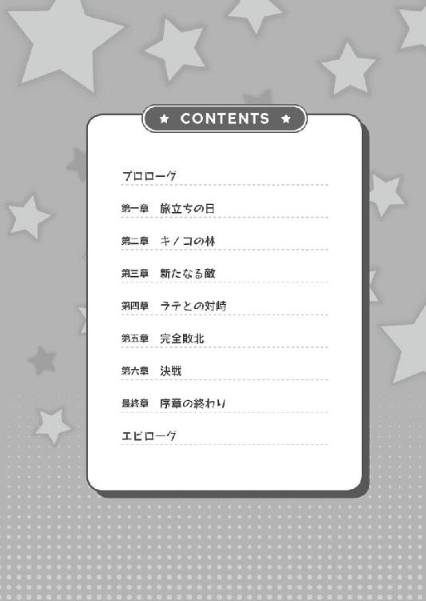
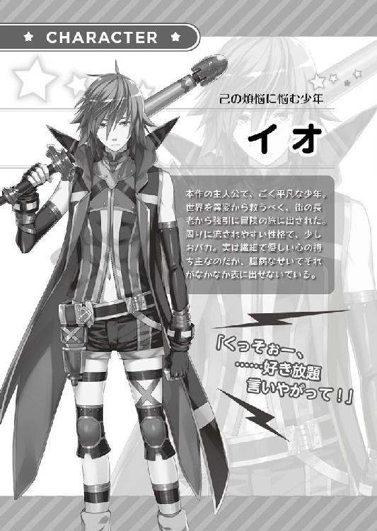
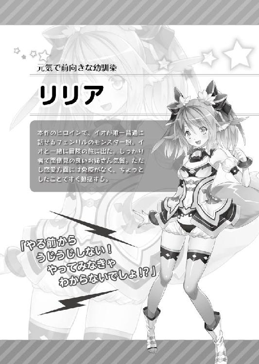
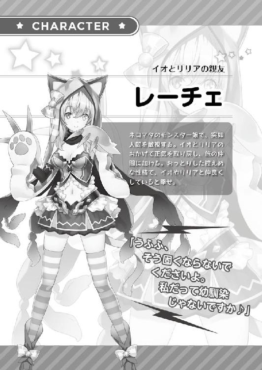
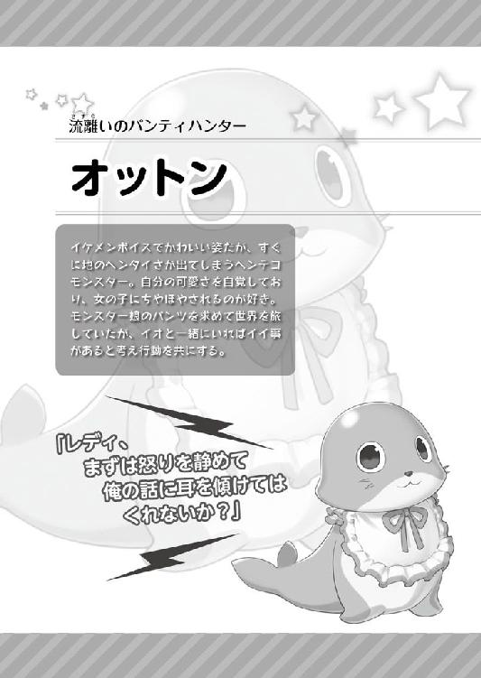
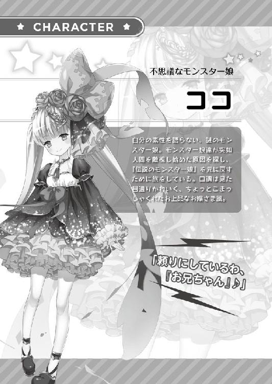
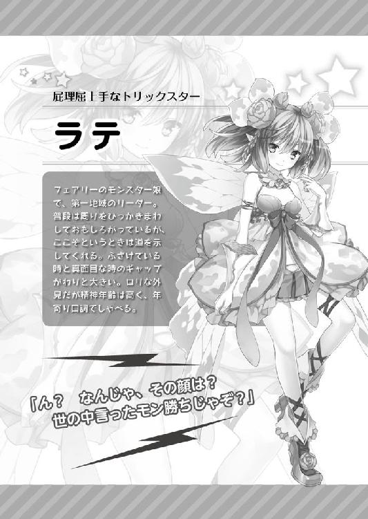
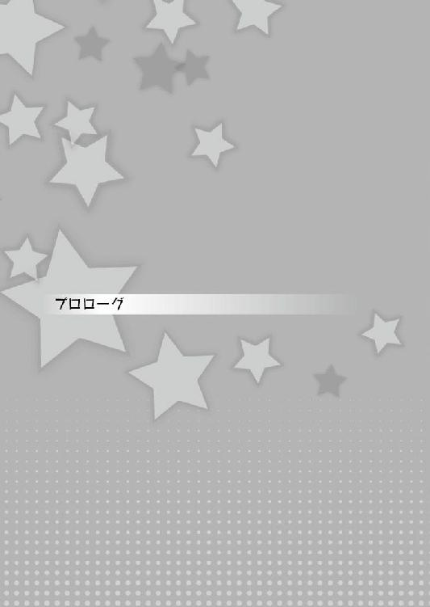
「──はぁ──はぁっ！」
走った。とにかく走った。
足が千切れそうだ。筋肉が悲鳴を上げる。凄まじい鼓動で心臓が爆発してしまいそうだ。
それでもオレは足を前に出し、一歩でも前に進む。
ただひたすらに、何も考えず──いや、違う。
考えるのをやめるために......だ。
この強大な敵に打ち勝つために、どこまでも纏わり付いてくる、この感情を、この思考を、この思いを、必ず振り切ってみせる！
そのためにオレは走り続ける！
肺に思い切り吸い込んだ空気を、これでもかと吐き出しながら、オレは叫んだ。
「ウオォォォォォォォォォォ！ 煩悩なんかに負けない！ オレから出ていけぇ！」
そう。オレ──イオには一つ悩みがあった。
それは、オレの中に渦巻く邪悪な感情、強大な敵、倒すべきもの──煩悩だ。
平たく言えばエッチな気持ちだ！
女の子に対してのエロイ妄想！ エッチな想像力豊かな思考！ それがオレの敵！
けれど、こんな気持ちに飲み込まれるわけにはいかない！
こんなやましい気持ちを抱いてるなんてことが人に......特に女の子に知られてしまったら軽蔑されてしまうだろう。
きっと彼女達はオレを『この変態！』と罵るだろう。
そして女の子とまともに喋れないまま、その生涯を閉じるだろう。
「ウァァァァァァァァッ！ そんなことがあってたまるか！」
いっそのこと変態だと開き直れれば楽なんだけれど......オレにはそんな勇気もない。
そのせいで......この煩悩のせいで、まともに女の子と喋ることができない......。
恥ずかしい！
自分の感情が恥ずかしい！
誰かこの気持ちをどうにかしてくれ！
だからオレはこうして走り、煩悩を追い出そうとしているんだ。
「──はぁ──はぁ！ もう少し！ もう少しだ！」
ああ......なんだろう、さっきまで見えていた妄想が、いかがわしい思いが、エッチな気分が、少しずつ薄れ、そして消えていく。
もう、妄想の中の女の子の姿は見えない。
そこに見えるのは──ただ、空だけだ。
「オレは、煩悩を振り切るぞォ──おおおォォォォォォォォォォォォォォ!?」
──ズザァァァァァァァァァ！ ──ガラガラガラガラガラガラ！
急に重力が無くなり、オレは土手を転げ落ちる。
頭が下になって足が上になり、空が見えて地面が見えて、自分の体が土を巻き上げていた。
わかんない！ 何が起こってるかわからないけど、たぶん崖とかそういう高いところから落ちてる！
痛い痛い痛い痛い！ 頭とか背中とか物凄い打ってるって！
ちょ、ちょっと待ってくれ！ このまま死んだら、オレ本当に女の子とまともに喋れないまま人生が終わるって！ そりゃないだろぉぉぉぉ!?
っていうか、もう煩悩が消えるどころじゃない！ オレの意識自体消えそうだよ！
頭の中でそう叫んでいると、強まる痛みと反比例するようにオレの意識は薄れていった。
「......オ......ねぇ、イオ？ ......大丈夫？」
......聞き覚えのある、優しい声が聞こえる。
「ん......いててて......」
痛みに耐えながらゆっくりと瞼を開けると、そこには見知った顔があった。
綺麗なグリーンの瞳に、特徴的なフワフワの耳、二つに分けられた髪形に可愛い顔立ち。
「......リリア？ どうしてここに？」
──この世界は二つの『領域』で成り立っている。
人間が暮らすロイティウム。モンスター娘の暮らすモンストピア。
ここはその二つの領域の中間にある街だ。
そして彼女はモンスター娘。
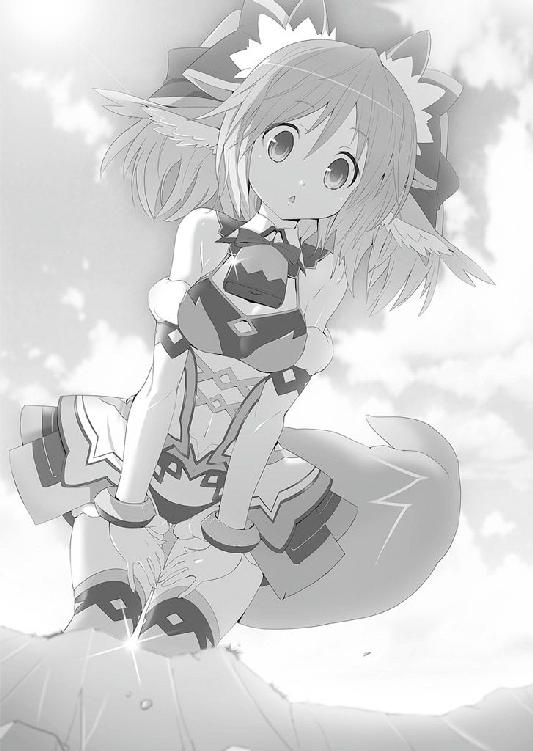
フェンリルのモンスター娘であり、オレの幼馴染。唯一、オレがまともに話せる女の子だ。
「どうしてって、それはこっちのセリフよ。散歩してたら、イオが急に転がり落ちてきて、そのまま気絶したのよ」
そうか、走ってる途中で土手から転げ落ちて......意識を失ってたんだ。
「ねえ......何やってたの？」
「えっ？ あ、あの、これはな......」
まさか煩悩を追い出したくて自分の限界に挑戦してたなんて、死んでも言えるか！ 絶対に言えない！
「ちょ、ちょっと運動不足の解消に、走ろうかなぁって......」
「も〜、それで転んだの？ 慣れないことをいきなりするからよ。ケガとかしなかった？」
「あー、うん、大丈夫みたい。心配させて......ごめん」
「まったく、本当よ。......まぁ、そういうことしちゃう気持ちも、わからないでもないけどね」
「えぇッ!? わ、わかられてるのっ!?」
どうしよう、煩悩が頭に渦巻いていることが......リリアに知られてたなんて......。
そう、この煩悩はリリアにも向けられてしまっているんだ。
幼馴染であり、唯一普通に話せる女の子。そんなリリアにすら、オレはいかがわしい感情を抱いてしまっている。
それが......彼女に知られている......。オレはもうお終いだ......。リリアに変態と罵られて、女の子と一言もしゃべることもなく、一生を終えるだろう。
「え？ ちょ、ちょっとイオ。どうしたの......涙ぐんで」
「ごめんリリア......オレはもう、森の奥かどこかでひっそりと暮らすよ」
「な、なんでそうなるのよ!?」
彼女は首を可愛らしく傾げ、きょとんとした表情を浮かべている。
「だってほら、リリアに迷惑かけるだろうし」
「ちょ、ちょっと！ いじめられたくらいで何言ってるのよ？」
......いじめられた？
「え？ どういうこと？」
「え？ 誰かにいじめられて、その仕返しに体を鍛えてたんじゃないの？」
......どうやら彼女は、オレが純粋に体を鍛えてるもんだと思ったらしい。そう思ってくれてるならそれで都合がいいけど。
にしても『誰かにいじめられた』ってさ......もう、そんな年でもないのに。
「いや、別に......いじめられては......」
「ホントに？ 何かあったらわたしに言ってね？」
オレは軽く溜息を吐く。
子供の頃から、リリアはオレに対してお姉さんぶる。......まぁ、オレが情けないのも原因なんだけど。
その関係は今も変わらず、相変わらずオレは守るべき対象らしい。
「あはは、まぁ......そんな機会があったら」
「うん！ イオは大事な幼なじみなんだから、遠慮せずに頼ってね！」
そう言って胸をドンと叩いた。
そんな機会は来ないだろうけどなぁ......。
いじめられたら走って逃げるし、自分からは危険の中なんかに飛び込まないし。
残念だけど、リリアは胸の叩き損だな。
──そう、この時はそう思っていた。
けれどその機会は、思わぬ形でやってくることになった。
人間が暮らすロイティウム。
モンスター娘の暮らすモンストピア。
この世界は二つの『領域』で成り立っている。
いや......成り立っていた。
ある日を境に、世界中で異変が起き始める。
あちこちで天変地異が起こり、モンスター娘達が急に人間を敵視するようになった。
風の噂では、伝説のモンスター娘が、世界を滅ぼそうとしているのだとか。
屈強な男達は伝説のモンスター娘を倒すべくモンストピアへと向かったが、誰一人帰って来なかったという......。
世界は、その混乱と戦うこととなる。
そんなこととは無縁で、日々煩悩と戦っていたオレは、自分でも知らない間に、その渦中へと飛び込む一人となってしまうのだった。
「──っ！ あ......ぅ......」
オレは顔を下に向けたまま、何度も何度もそう唸った。
おかしい......こんなはずじゃないのに......。なんでこんなことに......。
圧倒的な敗北感が襲ってくる。
顔を前に向けられない......。逃げ出したい......。くそっ......！
ダメだ！ 向き合わなきゃダメだろ！ 煩悩を振りきったはずだろ、イオ！
自分にそう言い聞かせ、バッと顔を上げると──
「どうしたのイオくん？ そんな怖い顔しちゃって」
「いえっ......えと......その......」
ダメだダメだダメだ！ 喋れない！ こんなフレンドリーな、ショップのお姉さんとも喋れない！
「頭抱えちゃって、悩みごとかな？」
「あの......べ、べつ......に......な、なんでもないですっ！ 大丈夫なんで！」
優しく微笑みかけるショップのお姉さんに微笑み返すこともできず、オレは急いでそこを後にした。
「はぁ......」
買い物に来ただけでこれかぁ......。女の人に慣れる特訓にと、ショップに足を伸ばしてみたけど......結果はこれだ。
いつになったらオレは、女の人を前にしても緊張しないようになれるんだろう。
ショップのお姉さんなら優しそうだし、余裕がある感じがするから今日こそ大丈夫だと思ったんだけどな......。
と、そんなことを考えていると。
「ねー、リリア知らない？」
「っ！ あの、えっと......」
目の前に現れたのは、勝気な表情をした少女。街で何度か見かけたことはあるけど、友人というわけではない......。
いや、まぁ......まともに喋れる女の子なんて、リリアくらいだから当然なんだけど。
「聞いてるんだけど」
「し、知らな、い、けど......」
少女は溜息をついて、落胆した表情をオレに向ける。
「いつも一緒だから知ってると思ったのに」
「リリアのこと全部......知ってるわけないだろ......」
「役立たず」
......何て言い草だ！ さすがのオレも、頭にきたぞ！
「......ごめん」
頭に来たけど......ダメだ。女の子の前だと、なにも言葉が出なくなってしまう。
すると少女はこちらを一瞥して、足早に立ち去って行った。
「......はぁ」
きっとアレだ、アレ。ああいう攻撃的なヤツには言葉なんて出てこないよな！
オレもああいうヤツとは話したくないし！
......いや、でもさっきショップのお姉さんとも喋れなかったな。
「あ！ いたいた！ イオーーー！」
「？」
聞き慣れた女の子の声。
走りながら近づいてくるその声の主は......。
「リリア。そんな大声で呼ばなくてもわかるよ」
「ごめんごめん、イオの姿を見たら嬉しくなっちゃって」
「な、なんだよ急に......」
オレの姿を見て嬉しくなるって......ちょっと照れるな。
「ほら、そこのショップから出てきたじゃない」
「ああ、見てたのか。まぁ、何も買わなかったけどな」
「うんうん、そうだよね。持っていくものはちゃんと厳選しないと、荷物が多くなっちゃうし、きちんと考えてて偉い偉い！」
「う......うん？」
な、なんだ？ 荷物とか厳選とかって......。
「あ、でも大丈夫。わたしも半分持つわよ。わたしもイオと一緒に行くから」
「リリア、ありがとう。......って、行くってどこに？」
話の流れが全く読めないんだけど......。
「そんなの決まってるでしょ。イオだって、そのために買い物に行って、準備してたんじゃないの？」
......？ 何のことだか全然わからない。
「あれ？ 長老サマから聞いてない？」
「何を？」
「イオはこれから、モンスター娘を調査する旅に出るのよ」
「う、うん？」
──ダァン！ とけたたましい音を立てつつ、オレは長老サマの家の扉を開ける。
「ど、どういうことなんですか、長老サマ！」
「おお、イオか」
長老サマは、ある程度オレが来るのを予想していたのか、落ち着いた様子だ。
「昨今の世界の危機、お前も知っているだろう？」
リリアから本当に寝耳に水な話を聞かされたオレは、何がどうなっているかを訊くために、長老サマの家に来ていた。
「モンスター娘達が暴れてるとか、そのせいで世界がおかしいとか、その原因を探しに行った人達が全然帰ってこないとか......そういう話ですか？」
「そのとおりだ。そしてそれは、誰かが正さねばならない」
「どうしてオレが!? むしろそういう危険なこととは縁遠く生きてきたんですけど！ 無理無理無理無理無理！ そんなの無理だって！ ぜーったい、無理です！ 自分で言うのも悲しいけど、オレ、平々凡々どころか、全てにおいて平均以下だから！ そんなの、む・り・で・す！」
むしろ、この煩悩のことを考えると、オレなんて正される側だとすら思ってるのに。
「そう言うな、選ばれし者よ。この世界を任せたぞ」
「選ばれし者って、どうせ神様とかお告げとかじゃなくて、長老サマが適当に選んだだけでしょ？」
「よ、よく知っておるな。まあ、そうであっても選ばれし者は選ばれし者だろう」
......本当にそうだったのか。
少しくらい、自分に特別な何かあるんじゃないかって期待したのに。
「っていうか、本当は世界の危機とかそんな大げさな話じゃないんでしょう？ モンストピアに行く観光客が減って、街の収益が減ったって皆が言ってますよ」
そう、この街セクレンドは、ロイティウムとモンストピアのちょうど中間にある。
お互いの世界の観光や交流、それが町の収入源の一つになっているんだ。
それが今、お互いの行き来が減ってしまったため、街に落ちるお金がガクンと減っている。
「ご、ごほんっ。それもまあ事実だ......わが街セクレンドは、未曽有の危機に立たされている。が、違うっ！ 世界が！ 世界の方がもっと危機！ 世界危機だ！ ワシは世界を思ってだな......」
確かに世界の危機は怖いけど、街の長老レベルがやる気を出して、どうにかなるような事態でもないと思う。......たぶん、正解は収入の面だろうな。
「まぁ、それは置いておいて。この街からもモンストピアに、誰かをやることになってなぁ」
「それが何でオレなんですか？」
「これは神のお告げだ！ 運命と書いて『さだめ』なのだよ！ 明日の英雄は君かもしれない！ 正直パッとしない奴だが、この旅で様々なことを経験し、大きくなって帰って来るんだぞ！」
「さっき長老サマが適当に選んだって言ったじゃないですか！」
オレが掴みかかるような勢いで近付くと、長老サマは片目をつぶって舌を出し。
「お前ならどうでもいいかなって☆」
見事にテヘペロって感じの表情を作った。
「軽いっ！ 仮にも人一人の命がかかっているというのに！」
「ならば世界がどうなってもいいのか！ お前はこの街のために何もしたことがない！ はっきり言って役立たずだ！ この調査は名誉な仕事だ。今までの分、ここで役立ってみせよ！ やってみれば意外とできるかもしれんぞ！」
「意外とできるかもで、世界規模の混乱に巻き込まないでくださいよ！」
「ええい、くどい！ とっとと行ってこい！ お前の両親の許可も取ってある！ 『愚息ならぬ駄息ですが、アレがお役に立つようでしたらどうかよろしくお願いします』とな！」
実の親のセリフとは思えない！
「世界を救ってこいとは言わん。お前にそれができるとも思わん！ だが道半ばで戻ってきてもお前の家はないと思え！ いいな!?」
「実質戻って来るなってことじゃないか！」
「男ならば、目的を達成するまで帰ってくるな！ 最期の一花咲かせてこい！」
「ちょっと！ 長老サマ！ ──ってうわ！ 放してください！ 何ですかこの筋肉な人達は！」
二人の屈強な男に両脇を抱えられ、そして出口の方に強制的に連れて行かれる。
「ワシの家の警護のものだ」
「警護の人間より弱いオレが、どうしてそんな戦いの旅に出なきゃいけないんだ！」
「さらばだ、イオ！ お前の尊い犠牲を胸に刻み、わしらは生きていくぞ！」
「い、いやだ！ いやだぁぁぁぁぁぁぁぁぁぁぁぁぁぁぁぁぁぁぁぁ───────！」
扉が大きく開くと、オレは乱暴に外に投げ飛ばされた。
「はぁぁぁ〜......。どうすりゃいいってんだよぉ......」
あの後、長老の家の前に這いつくばったオレは、何度も直談判しようと家に入ろうとしたけど、警備の男たちに叩きだされていた。
「なあ、あんた達の方が旅に出るオレより強いっておかしいと思わないのか？」
もはや立ち向かう気力を失い、とぼとぼと街の中を歩きだした。
「わ。イオ、そんなにボロボロになって......」
「リリア......」
きっと話が終わるまで近くで待っていてくれたんだろう。心配するように大きな瞳をこちらに向けている。
「もしかして、長老サマに必殺技とかの特訓でもしてもらってたの？」
「全然違うよ」
大きな溜息を吐きながら、リリアに事情を説明しながら街の中を歩いた。
まあ、ある程度のことは彼女も知ってたわけだけど......まさかそんな理由でオレが選ばれたなんてリリアも思っていなかったようだ。
くそぉ......役立たずで何もしなかったから世界の危機を救いに行くって、物語に出てくる勇者とはまるで逆じゃないか......。
しかもそれが終わるまで帰ってこれないなんて。はぁ......いっそのこと、本当に森の奥で暮らそうか。
「え、えーと。イオ......大丈夫？」
「リリア......。これが大丈夫なように見えるか？」
「ごめん、見えない......」
そりゃそうだよなぁ......。あんまりな状況に眩暈すらしてきたし。
「くそぉ長老め、好き勝手言いやがって......！ あー、思い出したらムカついてきた」
本当は世界の危機とか全部嘘で、ただ単に街の収益が落ちてるってだけじゃないのか？ もしかして......オレの家の家計もやばくって、親が長老に相談したら、口減らしのためにそんなこと言われただけだったりして。
......うわ、だったら役に立たないオレが街から追い出されるのも納得できる。
「なあリリア、世界の危機って本当にあると思うか？」
「え？ ......うーん、正直あんまりね」
「だいたい、モンスター娘がおかしくなって、それが世界の危機って話だろ？ セクレンドのモンスター娘もリリアも、全然おかしくなってないじゃないか」
「それもそうなのよね。モンスター娘がおかしくなるっていうなら、わたしだって......」
リリアはオレと出会ってから今日まで、ず────っとこんな感じだ。今日の今日までおかしくなったことなんてない。
「そうそう。だからみんなが言う『ピーンチ！』って実感がわかないんだよなぁ」
だって、人からは『モンスター娘がおかしくなった』って聞いても、目の前には普段どおりのリリアがいる。
確かに、セクレンド以外のモンスター娘達はおかしくはなってるらしいんだけど、どうせ風邪みたいに、すぐ治るんじゃないかって思うんだよなぁ。
「ねえ、イオ。どうして他のモンスター娘はおかしくなってしまったのに、この街だけいつもどおりでいられるんだろう？」
「さぁ......。なにかあるんじゃないか？ わかんないけど」
この状況に少し腹が立って、つい投げやりに返答してしまう。
にもかかわらず、リリアはいつものように人懐っこい表情をオレに向けてくれ......。
「イオ。わたし知りたい」
「え？」
「どうしておかしくなってしまったのか、どうしてわたしは平気なのか。それが知りたい。そしてできれば助けてあげたい。だから......さっきも言ったけど、わたしも一緒に行く」
そう言うリリアの目は本気だ。
でもなぁ。気持ちはわかるけど、それもやっぱりオレの仕事ではないと思うんだけど。
「っていうか、そもそも一緒に行くもなにも、オレは別に行くなんて決めてないし」
すると、彼女の表情が少しムッとしたものに変わる。
「......じゃあ、イオは、わたしがみんなみたいにおかしくなっちゃってもいいの？」
「いや......それは......」
「このままずっと、街のモンスター娘だけ平気かなんてわからないんだよ？」
そうだ。その原因がわからないんだから、リリアがそうならない可能性なんてどこにもない。
むしろ、なっていない方がおかしいのかもしれない。
「もしわたしがおかしくなって、人間を敵だと思うようになったら......わたしが誰かを......イオを傷つけてもいいって言うの!?」
それは......。
不安げな表情を浮かべるリリアに、少し心が痛くなる。
想像してみる。いつも人懐っこい笑顔をオレに向けてくれているリリアが、冷たい顔で、怒った顔で、嫌悪した顔で、オレを罵倒したり「ヘンタイ！」なんて罵ってくる姿を。
「わたし、そんなの嫌だよ......。怖いよ......」
「そ、そんなの、オレだって嫌だ！ ......でも」
だからって、オレに何かできる気はしないんだ。
そう自分の中で言い訳を繰り返していると......。
「うぅぅ〜〜〜......もう！ みんなを見返すチャンスでしょ！」
リリアは怒った顔でそう言うと、オレのお尻を結構な力で蹴っ飛ばした。
「ちょっ！ リリア、痛いって！」
「やる前からうじうじしない！ やってみなきゃわからないでしょ！ 長老サマにあんなこと言われて悔しくないの！ 悔しいでしょ!? わたしはすっごく悔しかった！」
オレに怒っているのか、それとも長老に怒っているのかブスッとした表情をしている。
「そりゃ、ムカついたけど......。な、なんでリリアが怒ってるんだ？」
「だって友達をバカにされたのよ？ 怒るでしょ、普通！」
その怒りが、張本人であるはずのオレにぶつかってるのはちょっと納得いかないけれども......。でも、それに対して何もしないオレに、気合を入れてくれようとしているのかもしれない。
「イオが役立たず？ どうでもいい人間？ 言いたい奴には言わせておけばいいんだわ。わたしとイオで、世界とモンスター娘を元に戻すのよ！ やればできるってところ、見せてやりましょうよ」
......オレのために怒ってくれて、すごく嬉しい。嬉しいけど。
「オレに、できるのか......？」
嬉しいし彼女の気持ちはわかる、わかるけども......オレには戦う力もないわけで。
「だから、やる前からうじうじしないの！」
痛っ！ ......またお尻を蹴られた。
ああもう！ わかったよ、こうなりゃヤケだ！
「わかった、わかったからっ！ 行けばいいんだろ、行けば！」
そう言うと、お尻への攻撃はピタリとやみ、パァと輝くような笑顔に変わる。
「そうと決まれば善は急げ♪ さぁ、行くわよ！」
「へいへい......」
行きたくない......行きたくないなぁ......。
けど、女の子にここまで言われてるんだし、行かないわけにはいかないだろう。
それにやっぱり、モンスター娘がおかしくなったことは、正直気になっている。
子供の頃から何度もモンストピアには遊びに行ってるし、少しだけど友達だっている。
今、世界中の人間は彼女達を倒そうとしている。それはやっぱり悲しいと思う。オレだって元に戻ってほしい。
......そして何より、リリアにおかしくなってほしくない。
「ほら！ 置いてっちゃうよー！」
「ああ......わかったって」
これから待ち受けることも怖いけど、この笑顔が失われる方がオレにとっては怖い......。
明日も明後日も、今日と同じようにリリアと過ごしていたい。
だから......。
そのために、ほんのちょっとだけ、本当に何もできないかもしれないけど、まあ渋々......そして半ばヤケで、オレはモンスター娘の調査をすることにしたんだ。
「それじゃあ、いろいろ買い込まないとね。二人だけって言っても、野宿することもあるかもしれないし」
「うぅ......二人だけかぁ。不安だなぁ」
「大丈夫だって。イオのことは、わたしが守ってあげるんだから」
自信満々の笑顔で、胸をドンと叩くリリア。
「はぁ〜......自分のことながら情けない」
「ほら、そんなこと気にしてないで。二人一緒なら大丈夫だから、がんばろう？」
オレの手をギュッと握って、笑顔をオレに向けてくれた。
久々にリリアの手を握った気がするけど......柔らかくて気持ちがいい。
「うん。まあ、やれるだけやってみるよ」
確かに一緒なら大丈夫なような気がする。それはそれで男として情けないけど。
まあ、リリアとなら、たった二人でもなんとかなるさ。
......あれ？ ......ん？
二人っきり？
「リリアと......二人っきり？」
「え？ うん、そうだけど？」
「ふ、二人っきりで旅？」
──ちょっ！ ちょっと待って！ それはまずいって！ 女の子と二人っきりで旅に出るなんて無理だ！
ご飯の時も？ 寝る時も!? お風呂の時も!? 着替えてる時も!? ずっと一緒!?
だとしたら、当たり前のようにハプニングやいかがわしいことが起きるかもしれないじゃないか！
ああ......ダメだ！ まずいまずいまずい！ こんなこと想像してたら「ヘンタイ」なんて言われちゃう！ 我慢しろオレ！ この妄想を顔に出すな！
そう何度も自分に言い聞かせる。
にもかかわらず、リリアに対するいかがわしい妄想が、オレの頭の中を駆け──
「......」
──巡らなかった。
「......あれ？ どういうことだ」
「どういうことだもなにも、他に一緒に行く人もいないんだし、イオと二人だけってことだよ」
「そ、そうじゃなくて......」
これから起こることに、いやらしい妄想でもしそうなもんだけど......それが全然ない。
そういうことが起きるんじゃないか......っていう危機感とか想像はつくんだけど、なんというか、それに欲望を感じていないんだよな。
むしろ、お風呂の時はノックをちゃんとしよう......とか、着替える時は声を掛け合って確認しよう......とか。こうならないように気を付けようって想像だ。
......え？ いつからこんなふうになったんだ？
そうだ！ そういえばこの前もそうだった！
オレが倒れて、リリアが起こしてくれた時......ローアングルから彼女を見ていた。
それこそ下着が見えそうなくらいに......いや、確か見えていた。パンツが見えていたんだ！
にもかかわらず、まるでそういう気持ちを抱いていない。
今だってリリアの顔は、息がかかるくらいすぐ近くにあるし、柔らかくてすべすべした手だって握っている。
こんなの、いかがわしい妄想をして当然の状況なのに......。
なのに......どうして？
もしかして......まさか。
いやでも、これはやっぱり............ぼ、煩悩が無くなってる？
あの時の全力ダッシュで、本当に煩悩を追い払えた？
「や......やったぁぁぁぁぁぁぁぁぁぁぁぁぁぁぁっ！」
「キャッ？ な、なに？」
「勝った！ 長年苦しんできたあいつに、オレは勝ったんだぁぁぁぁっ！」
天高く拳を掲げて、空に向かってそう叫んだ。
「い......イオ、どうしたの？ 勝ったって、まだ何とも戦ってないと思うんだけど......」
これでヘンタイって言われない！ オレは女の子と喋ることができるんだぁぁぁっ！
「うん、なんか何でもできる気になってきた！ 行こう、リリア！」
オレはリリアの両手を握り、ぶんぶんと上下に揺らすと、戸惑っている顔が目に入った。けど、
「う、うん？ よくわからないけど、イオがやる気になってくれてよかった」
「よし！ それじゃあまずは第一地域に行こう」
「だからイオ、買い物してこれからの準備をしないとって話だったじゃない」
「あはははは！ そうだな！ よし、行こう！」
こうして幸先よく、オレとリリアは旅の第一歩目を踏み出した。
「それで、何を買うのイオ君」
「い......いえ、その......えっと......」
「ん？ どうしたのかしら？」
踏み出した──はずなのだが、オレはショップのお姉さんの前で、下を向きながら視線を彷徨わせていた。
あ......あれ？
お姉さんの目が見れない、声がまともに出ない......。
おかしい。煩悩は去ったはずなのに......女の人と喋れない。
「もう、さっきは急に帰っちゃうからびっくりしたのよ」
「す、すみません......」
そういえば、さっきもここでお姉さんと喋れなかったんだよな。
煩悩はあの日......オレが土手を転げ落ちた日に消えたはずなのに......どうして今日も喋ることができないんだ？
いかがわしい妄想が無くなったオレに、後ろ暗いことは何一つないはずなのに......。
「イオ......どうしたの？ なんか変だよ」
「ど、どうもしない！ 全然変じゃないし！ あの、えっと......お、おねえさん。これをひ、ひひひとつください！」
「すっごく変だよ!?」
「うぐっ!?」
ダメだ、平静を保とうと思っても声は裏返るしどもるし、顔も熱くなってきた、
「あらあら、相変わらずシャイねぇ」
シャイだって言われた......相変わらずって言われた。煩悩は去ったはずなのに、なのに今までとなにも変わらない。どうしたんだよ？ キレイサッパリ追い出せたはずだろ！ なのに、なぜ......!? なぜ女の子と普通に喋れないんだ!?
「それじゃあ、買い物はわたしがしてあげるから」
「......わかった」
結局、オレはリリアの買い物を見るだけしかできなかった。
......まあ、ちょっと情けないけど、こういう関係が嫌いってわけじゃないんだよな。
昔からリリアはオレの面倒を見てくれて、幼馴染でありながら、お姉さんって感じだった。
彼女も別にそれを嫌がってないだろうし、きっとこれからもそうなんだろう。
......この前まで、煩悩のせいで女の子って感じで見ちゃったこともあったけど、今となってはそれもなくなって、昔のような感覚に戻っている。
「イオ、必要なものは大体買い終わったよ。天気はいいし、お日様も高いし、そろそろ出発しようか？」
「ああ。行こうか」
こうしてオレ達は、モンストピアの第一地域へと足を向けた。

「うわ......イオ、コレすごく大きくなっちゃってるわよ!? だ、大丈夫なの？」
「ちょ、ちょっとリリア！ 刺激しちゃダメだって！」
オレが止めたにもかかわらず、リリアはそそり立つそれをスーっと指でなぞる。
「ひゃあっ！ な、何か出たよ！ ──キャッ!? か、顔にかかった！」
「あぁ......だからダメって言ったのに......。刺激しちゃそうなるよ」
リリアは顔に付いたそれを、涙目でグシグシと手で拭った。
「ううぅ〜......変な臭い。こんなに出るものなんだね」
「確かに、信じられないくらい出たなぁ」
リリアは立派にそそり立ったそれを、ジーっと見つめている。
「でも、こんなに立派になっちゃうんだね。ちょっと前までは、指くらいの大きさだったのに。少し見ない間にこんなふうになっちゃったんだ......」
「そうだな。オレも驚いてるよ。キノコ、キノコ、キノコ。キノコだらけじゃないか。しかもヘンテコで大きなキノコが生えてるなんて......」
そう、久々に来たモンストピア第一地域は、なぜか大量のキノコに侵されていた。
しかも巨大で、もはや木よりもキノコの方が多いんじゃないか、ってくらいに数も多い。
そこら中でボフンボフンと胞子をまき散らしていて、リリアもさっき顔にかかってしまった。
「前はこんなんじゃなかったのに」
「新種キノコの異常繁殖とか？ ......よし、この状態を『キノコニョッキ林』と名づけよう」
「普通に考えて、世界の異変と何か関係してるんじゃないの？」
現実逃避に軽口を叩いたオレを、リリアがジトーっと睨む。
わかってる、わかってるよ......これが普通じゃないことくらい。
それにしても、自分が住んでる場所がこんなふうになっちゃったら、いやだなぁ......。
オレだったら普通じゃいられなくなる。
あ......そういえば、この辺りにはあの子が住んでいるはずだ。
「レーチェ、大丈夫かな......」
リリアは悲しげな表情で、森の奥を見つめている。
どうやらオレと同じことを考えていたようだ。
レーチェはオレのもう一人の幼馴染で、リリアの親友と言ってもいいモンスター娘だ。
最近はあまり会っていなかったけど、小さいころは三人一緒によく遊んでいた。
「そうだな、まずはレーチェに会いに行こう」
そう声をかけて、キノコニョッキ林を進もうとすると。
──ガサッ
静かな森の奥から、足音らしきものが聞こえ、それがこちらへと向かってきている。
その音の方に注目していると......ゆっくりと人影が現れた。
リリアと顔を見合わせ、お互いコクリと頷く。
「これって......もしかして」
「噂をすればってやつよね......」
そして音の方に顔を向ける。
「久しぶりだな、レ───」
そこに現れたのは、蒼い瞳と紫色の髪の色、羽を広げた妖精のような女の子。
その彼女が、キッとオレを睨みつける。
「何故人間がモンストピアにおるのじゃ！」
幼い外見とはまるで正反対の口調でしゃべるその子は──。
「──誰だっ!?」
「──誰なの!?」
見たこともないモンスター娘だった。
全然レーチェじゃなかった。
「訊いておるのはわしの方じゃ！ おぬしらこそ誰じゃ！」
だって......そういう流れだとばかり思ってたんだよ。
それにしても、いきなり敵意むき出しの子に見つかっちゃったな......。
「貴様、わしの話を無視したうえに同胞まで連れまわして......なんというＳじゃ！」
「は、はぁ？ エスゥ？」
何かの暗号とか、モンストピアの用語とか......そういうのか？
「えすって、なにを言ってるの、あなた！」
あれ？ でもリリアも知らないみたいだ。
その子は、オレに向けていた視線を舐るようにゆっくりリリアに向ける。
「おぬし、何故人間なんかと共におる？ その男に脅されておるのか？ それとも、何か弱みを握られて......!?」
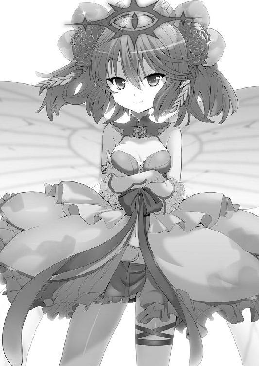
リリアはムッとした表情で一歩前に出ると、大きく首を横に振った。
「そんなことされてません！ わたしは自分の意思でイオと一緒にいるのよ！」
「なんと!? 自らの意思で人間なんぞと共におるのか！ 見た目や雰囲気からしてＭだＭだとは思っておったが......」
「え、えむぅ？ ちょっと、さっきからイオのことＳって言ったり、わたしのことＭって言ったりしてるけど......それってもしかして......」
「貴様、相当なドＭじゃな！」
......ああ、そういうことか。暗号に『ド』なんてつけないだろうし、彼女が言ってたのはサドとかマゾとか、そういうことなんだろう。
......納得したけど全然納得できない。
「え、えむじゃないわよ！」
「む、ではその様子でＳなのかっ!? そこの人間に連れられてると思っておったが、実はおぬしが連れておったのかっ！」
何でこの子、人をＳかＭでしか判断してないんだよ。
「え、えむでもえすでもないの！ イオは友達だから一緒にいるの！ この子、ちょっとおかしいんじゃないの！」
「なっ!? ＳとＭは対になるものじゃろうが！ そうなってもいないのに一緒にいるとは、おかしいのはおぬし達じゃろうが！」
......だめだ、話が通じそうもない。
「あ......もしかして、モンスター娘がおかしくなってるって、こういうことじゃ......」
リリアがハッとした表情でオレの顔を見る。そしてもう一度、リリアがモンスター娘に向き直る。
「ねえ......えすとかえむとか関係なく、ちょっと前まで人間もモンスター娘も仲良く暮らしてたじゃない！ どうしておかしくなっちゃったの!?」
リリアの訴えに、その子はキッと強い視線をこちらへと向けた。
「馬鹿を言うでない！ 人間共のせいで世界がおかしくなってしまったんじゃぞ！ そんな人間の味方をするモンスター娘なぞあってはならぬ！」
「え？ 人間のせいって......」
どういうことだ？ ......オレたちが、何かをしてしまった......のか？
「ふっ......人間もおぬしも、地域リーダーである、このラテ自ら成敗してやろう！ 光栄に思うのじゃぞ？」
ラテ......それがこの子の名前。
──って地域リーダー!?
それってこの地域の代表ってことじゃないか!?
「の、望むところよ!!」
「待て待てリリア！ 望んじゃダメだ！ 勝てないって！」
地域リーダーって、その地域で一番強いモンスター娘だ！
オレ達まだ、一番弱いヘンテコモンスターとすら一戦もしてないのに、こんなのと戦うなんて無理だっ！
「で、でもイオ！」
「と、とりあえず落ち着こう！」
臨戦態勢に入ろうとする二人の間に、割って入ろうとすると。
「待てっ！」
「えっ!?」
渋く、頼り甲斐のありそうな声が響くと、その声の主が二人の間に現れた。
......けど、その声の主はそのイケメンボイスとはずいぶん差がある様子で。
「へ、ヘンテコモンスター!? ──しかも喋ってる!?」
非常に珍妙な外見で、そのうえスカーフ......というかよだれかけのような物をしている。
......もしかしてだけどあのスカーフって。
「レディ達！ その勝負、オレに預けてもらおうか！」
「しかもいいこと言ってるっぽいよ！」
リリアもオレも、困惑した表情でお互いの顔を見る。
が、ラテはそのヘンテコモンスターに睨みを利かせる。
「なんじゃ貴様は！ 取り込み中じゃぞ！」
「何者か──か。俺の名はオットン。風の向くまま旅をするさすらいの狩人だ。レディ、まずは怒りを静めて、俺の話に耳を傾けてはくれないか？」
ラテはその言葉を聞いて「ふむ、なるほど......」と、小バカにするように顔を歪めた。
まるで彼が言わんとすることをすでに理解し、それに対しての答えがあるかのように。
「自ら窮地に立ち、訳の解らぬことをほざく。貴様は......Ｍじゃな」
「......」
オレが想像しているのとは違った......。
相変わらずこの子は、それでしか人を......まあ、目の前にいるあれは人じゃないけどさ、ともかく、ＳかＭでしか判断できないのか。
彼女に会話が通じてるのか少し心配だけど、当のオットンとやらは、そのまま話を続けている。
「レディ......少し考えてみてくれ。同じモンスター娘同士で争うなんて......そんな悲しいことはないだろう？」
その言葉に、ラテはうむぅと眉をひそめる。
「そうじゃの......わしも同胞と争うのは本意ではない。身内を傷つけて喜ぶほど道を外れたＳでもなければ、身内に傷つけられて喜ぶほどトんでいるＭでもないからな」
ラテはフンと鼻を鳴らしつつ、ゆっくりと戦闘態勢を解除していく。
よくわからないけどラテには......というかそのＳとかＭとか、そういう道もそういう道で何かしらのこだわりがあるみたいだ。
「え、えー......っと、キミとオレ達は戦わなくていいってことかな？」
彼女はキッと視線をこちらに向け、ゾッとする様な冷たい口調でオレ達に声をかける。
「ドＭ娘とドＳ人間よ」
「え、えむじゃないって言ってるでしょ！ 今日だってイオのお尻を何度も何度も蹴ったんだから！」
「あー......蹴られたな、そういえば」
ラテは一瞬「なんと！」という表情を浮かべるけど、すぐに真面目な表情に戻った。
「ここで引き返すのならば、その者に免じて見逃してやろう。じゃが、次に出会った時は容赦はせんぞ。二度はないからな！」
「......」
オレ達がなんの返事もできないままでいると、ラテはＳっ気の強い表情を浮かべ、羽音を響かせながら森の奥へと消えて行った。
そしてその姿が見えなくなると......。
「ぷは──......」
緊張が解けて、オレはその場にへたり込んでしまった。
うわぁ......今になって冷や汗が出てきたよ。
「リリア、大丈夫だった？」
「むぅ......えむじゃないのに」
まだ言ってるのか......。
「まあいいか......。ねえイオ、とりあえず一度落ち着いて今後のことを話そうよ」
「そうだな──でもその前に」
オットンとかいう名前のヘンテコモンスターに目を向けると。
「君たち、危ないところだったな」
相変わらず、態度と声はものすごいイケメンだ。
にしても、喋るヘンテコモンスター。しかもオレ達に敵意はもって無さそうだ。いったい何者なんだ？
「えっと、オットンだっけ？ 助かった──のかな？ ともかくありがとう」
リリアもオレと同じく「ありがとう」と、彼に向かって軽く頭を下げる。
「オレはイオ。とある事情でモンストピアに来てて......一応言っておくと、普通の人間だ。それとこっちは......」
「モンスター娘のリリアです。よろしく」
「なるほど、ではこちらも改めて自己紹介させてくれ。俺はオットン。風の向くまま旅をするさすらいの──」
「さすらいの狩人、だっけ」
リリアが興味深そうに話を聞くと......。
「そう！ さすらいの乙女の聖布狩人なんだじぇ！」
「パッ......!?」
オレの聞き間違えかと思って、いぶかしげな表情をしていると、隣でリリアがドン引いた表情をしていた。
聞き間違いでは無いらしい。じゃあ、オットンが言い間違えてるのか？
「なあ、パンティハンターって言ったのか？」
「そのとおりだじぇ！」
当たっていたらしい。しかもかなり自慢げだ。
いや、これは引くわー。同じ男としても、さすがに引くって。
「......」
リリアなんてもう、完全に絶句している。
「フッ......。決まったんだじょ」
「とりあえず、助けてはもらったんだから飼い主さんを探してあげるか」
「んなっ!? 何を言うんだじょ！」
「でも、こんな性格だから捨てられちゃったのかもしれないわよ。あ、でも首にパンツ巻かれてるし、首輪代わり......やっぱりただの迷子なのかしら？」
「あ、やっぱりそのヨダレかけ、パンツだったか」
「ヨダレかけって言われたじょ!?」
二人でそんなことを言い合っていると、オットンがフルフルと震えているのが見えた。
「お前ら、失礼だおーーー!! 本当に礼を言う気あるんだじぇ？」
「ピンチを救ってくれたという感謝の気持ちはあるぞ、ちゃんと」
「うん」
「ただ、ピンチを救ってくれたのが、パンツを首に巻いたヘンテコという現実に頭が追いついていないだけだ」
「うん」
たとえピンチの時でも死にかかっている時でも、パンツを首に巻いた生き物となんて、できる限り係わり合いになりたくない。
「首にパンツを巻いてるなんて、ヘンタイ以外の何者でもないわよ」
「だ、だよな。そんなことする奴の気がしれない」
「......？ どうしたのイオ」
「な、なんでもない」
何だろう？ リリアが『ヘンタイ』って言った瞬間、すごい悪寒がして、とんでもない絶望感に押しつぶされそうになった。
......なんだったんだ、今の感覚は？
「誰がヘンタイなんだじょ!? これはスカーフの代わりなんだじょ！ 聖布狩人としての心意気を常に忘れないように巻いてるんだじぇ！」
「「へぇ......」」
「む、何なんだじぇ、その疑いの眼差しは？ 俺は本当のことを言ってるんだじょ！」
いや、それが本当であってもなくても、首にパンツを巻いてることに変わりはない。
どんなに立派な人でも、世界を救った英雄でも、たとえ神様であっても、首にパンツを巻いてたらヘンタイだ。
しかも職業がパンティハンターなんて......。外見から目的まで、全てにおいてただのヘンタイだ。
「で？ あのモンスター娘じゃないが、なんで人間がこんな所にいるんだじぇ」
「それは......」
ヘンタイに、個人情報は知らせたくないなぁ......。
「モンスター娘の子猫ちゃんたちが、このところ急に人間を敵視し始めたのは、お前も知ってるんだじぇ？ でもそっちの子猫ちゃんはなんで普通なんだじょ？ ヘンな印もついてないし」
「ヘンな印？ モンスター娘達についてるの？」
「あ......言われてみれば、さっきのあの子......」
確かにあのラテって子の頭の上あたりに紋章みたいなのが付いていた。
黒く、そして一目でそれとわかる禍々しい模様......。
「あの印は......黒歴史状態......」
「黒歴史状態？ ......イオ、知ってるの？」
「いや、わかった風に言ってみたらカッコいいかと思って、適当に言ってみただけ」
リリアはジトーっとオレの顔を見る。
......やめて！ オットンを見る時の目でオレを見ないでくれ。
「確かに黒歴史状態の印はついてたけど、あの模様はあの子特有のものなんじゃないのか？」
「違うんだじぇ。黒歴史状態の印がついている子猫ちゃんは、例外なく言動がおかしいんだじぇ」
「それじゃあ、黒歴史状態の印がついているモンスター娘は、おかしくなってる目安になるな......今後の参考になりそうだ」
「二人とも......黒歴史状態のままでいくのね」
「呼び方があった方が便利なんだじょ」
リリアは「まあそうだけど」と、疲れた表情で溜息を吐いた。
「でも確かに、わたしにも......あと街のモンスター娘にも黒歴史状態の印はついてなかったわね」
「ということは、他にも普通の状態のモンスター娘がいるんだじぇ？」
「ああ......理由はわからないけど、オレ達の街で暮らしてるモンスター娘は、おかしくなってないんだよ」
ずっとそこで暮らしてきたからわからなかったけど、世間から見たら、リリアやウチの街の方が異常な状況なのかもしれないな。
っていうことは、やっぱりレーチェは......。
......あ！ じゃあもしかして!?
「リリアは大丈夫なのか!?」
「え？ な、何ともないけど？ どうしたの、急に？」
「だって、街のモンスター娘が平気なんだからさ、もしかしたら街に何か秘密があるのかなって......なんか、結界とか。今リリアは、その結界の外じゃないか」
「あ......言われてみれば！」
パッと見、黒歴史状態の印はどこにもない。
けど、やっぱり心配だ。
「服の下とかについたりしてないか？ ちょっと脱いでみた方が──」
「な、何考えてるのよ！ そんな所にあるわけな──いかはわかんないけど。ここでなんて脱がないわよ！」
「ち、ちがっ！ いやらしい気持ちじゃなくて、本気で心配してるだけで！」
うぅ〜......と唸り声を上げるリリアは、プイッと後ろを向いてしまう。
「ご、ごめんって......ホントにそういうつもりじゃなくて」
「もう......わかったわよ」
でも、街を出たリリアに何も起こってないとなると......どういうことなんだ？ これからじんわりおかしくなっていくのか？ それとも街は関係ないのか？
「ううむ......。謎は深まるばかりなんだじぇ。しかし安全な場所があるのに、わざわざモンストピアに来るなんて、酔狂な奴らなんだじょ」
「うん......わたし達は無事だからいいけど、ここにいる友達が無事か心配だったのよ。おかしくなってたら、元に戻してあげないとって」
「戻す方法はあるんだじぇ？」
「それも含めて探しに来てる感じなの。まあ、とりあえずは街に連れて行ってみるのがいいのかなって」
まあ、それ以外は元に戻す方法なんてわからないしなぁ。
「できれば、おかしくなった原因も調べて、全てのモンスターを元に戻してあげたいの」
長老サマからはそう言われてるけど、実際オレ達にそこまでのことができるのかなぁ。
だって、さっきのラテみたいな子が沢山いるんだろ。......しかも、第二、第三地域になるにつれ、強くなっていくだろうし......。
「......なるほど。ということは、第一地域以外にもモンストピアを回る予定、と？」
「もちろんよ！」
......行きたくないなー。
オットンはうぅむと考え、渋みのある表情でオレ達に向き直り、こう言った。
「そういうことなら協力してやってもいいんだじぇ？ 俺がいると何かと役に立つと思うんだじょ？ お前らよりここには詳しいつもりだし」
「下着泥棒と一緒に旅なんてイヤよ......」
「そ、そんなこと言わないでほしいじょ。お試しってことで、どうだじぇ？ 今なら安いんだじぇ？」
「しかも金銭請求するつもりなのか!?」
が、オットンは首を横に振り、ちっちっとハードボイルドに決めた。
「ノンノン！ 人間の貨幣なんて興味ないんだじょ。オレがほしいのは、パンティのみ！」
......どうしよう、頭が痛くなってくる。
パンツが欲しいヘンテコモンスターを仲間になんて、できればしたくない......。
「ほ、ほしいって、まさか......!? わたしのじゃないでしょうね!?」
「くれるのなら貰っておくけれど、そうじゃないんだじぇ。モンストピアのあちこちにはモンスター娘たちが脱ぎ散らかしたパンティが落ちてるんだじぇ！ 俺は世界中に散らばる子猫ちゃんたちの温もりを集める旅をしているんだじょ！」
男がヘンタイで何が悪い！ と言わんばかりに、堂々とした態度でにやりと笑った。
うん......全然尊敬できない。
「え、そもそもモンスター娘ってパンツ脱ぎ散らかすの？」
「そんなわけないでしょ！ 知らないわよ！」
「部屋に下着とか脱いだ服とか散乱してたりは？」
「してるわけな..................し、してないもん！」
......してそうだ。
「えっと......あれか？ 古い服捨てるみたいに、『昔の自分なんて脱ぎ捨ててやるぜ！』『新しい自分になる！』すぱーんってことか？」
「そ、その気持ちはわかるけど、だからってパンツ......」
「俺はそのパンティ集めを手伝ってもらいたいんだじぇ！ 世の中はギブ・アンド・テイク。そのかわり、俺は色々な情報をお前たちに渡すんだじぇ」
「結構です」
旅に出たばかりで情報が必要だというのに、リリアはにべもなくきっぱりと断った。
オレも気持ちはわかる。
「あー、もー！ お前ら面白そ──興味深いから一緒に行きたいんだお！ 言わせんな恥ずかしい！」
何が恥ずかしいのかよく解んないけど......。
「はぁ......どうする？」
そうは言いつつも、リリアは顔をしかめて明らかに嫌そうな表情だ。
「ついて来てもらおう」
「ええ!? 本気なの!?」
「なんかの役に立つかも知れないだろ？」
「なんのよっ!?」
「オレ達には情報だって必要なんだし、言動はアレだけど、口は回るし、さっきみたいに面倒な交渉は引き受けてくれるかもしれないだろ？」
「自分が楽するためには全力よね......」
ジトーっとした目でオレを見ている。......いや、そこそこ正しいこと言ってない？ オレ。
まあ、それは建前として、こいつを仲間にするにはもう一つ目的があった。
欲望にオープンすぎるこいつがいれば、仮にオレの煩悩が復活してもヘンタイだと思われないだろう。
なにせこいつは本物のヘンタイだ。
男のオレから見たってヘンタイだ。
オレの煩悩なんて、こいつに比べたらかわいいもんだろ......。
「わかった。これからよろしくな、オットン！」
「おう！ パンティ探しに励もうじぇ！」
「......」
盛り上がるオレ達をよそに、リリアは死んだような目でオレ達を見つめている。
「ほら、リリアも新しい仲間ができたことを喜ぼうぜ！」
「何だろう......わたしの鼻が、欲望と打算の臭いを感じ取ってる......」
「そ、そんなことないぞ！ さあ、レーチェを探しに行こう！」
リリアは深い深いと〜〜〜っても深い溜息を吐くと、疲れた顔でオレに向き直り。
「わかったわよ。とにかくレーチェのことが心配だから行きましょう」
「ああ。それじゃあ......レーチェの住んでたところは......」
......どっちだ？
昔は遊びに来てたけど、こんなに森の様子が変わってるんじゃ、まるでわからない。
「じゃあオットン、早速だけどこの辺りでネコマタのモンスター娘が暮らしてる所って知らないか？」
「全然わからないんだじぇ！」
「やっぱり役に立たないじゃない！」
リリアの遠吠えの様な叫び声が、キノコニョッキ林にコダマした。
「やぁぁぁぁ！」
『〜〜〜〜〜〜〜〜〜〜〜〜〜〜〜』
リリアの放ったパンチにより、ヘンテコモンスターは奇妙な叫び声をあげて消えていく。
......少しずつ、敵が強くなってきたかな。
あれから数日間、オレ達は野宿なんかを繰り返しながら、キノコニョッキ林でレーチェを探していた。
「リリア、大丈夫？」
「うん、このくらいの敵だったら雑魚だし、まだまだいけそうよ」
自信満々に胸を張っていて、すごく頼もしい。
「......」
と、そんなオレとリリアの様子を、オットンが不思議そうに眺めている。
「なんだよ？」
「この数日間、ずっと疑問に思ったんだが、イオは戦わないんだじぇ？ ......その武器も、さっきから全然使ってないじぇ？」
「う......いや、それは」
「イオは戦わなくていーの。わたしが守ってあげるんだから」
と、リリアが頬を膨らませてオットンの質問を遮った。
それはそれで情けないんだけど。......まあ、実際オレは戦える技能なんてないし、しょうがないよな。
「それに、イオだって色々助けてくれてるんだからね」
「具体的には何をしてるんだじょ？」
「......その......えっと..................応援とか？」
「......思いつかないなら無理に言わないでくれないか。その方が傷つくからさ......」
「ご、ごめん。でも、イオがいてくれるから『わたしががんばらなきゃなー』って思えるのは本当よ？」
そう言って柔らかい笑みを浮かべる。
「ヒモを養う女の心境と同じだじょ！」
「ち、違うわよ！」
「......そういえば聞いてなかったが、二人は恋人なんだじぇ？」
「「へ？」」
気持ちよく声がハモッた。
そのくらい、オレたちにとっては虚を突かれた質問だ。
「い、いや違うよ！ オレ達は幼馴染で、そういう関係じゃないんだ！」
「う、うん！ そうよ！ わたしはイオのお姉さんみたいな感じで、イオは情けなくて手のかかる弟みたいなものなの！」
......情けなくて手のかかる弟......微妙に傷つくなぁ。
「わ、わたしたちは、そういう感じで、恋人とかじゃないの！」
「それにしては、仲が良すぎる気がするじょ？ 本当は好きなんじゃないじょ？」
こいつ......余計なことというか、何掻き乱そうとしてるんだよ。
「ん〜〜〜......イオのことは普通に好きだけど、恋人とかっていうのは考えたことはないかなぁ」
「......」
そうか、そうなのか......。
......なんだか少しショックだ。
「イオ、ちょっとだけ同情するお......」
勝手に察して、勝手に同情しないでくれ。
「あ、っていうか最初の話。オットンもオットンで役に立ってないじゃないの」
「なんてことを言うんだじょ!? 俺は役に立ってるお！」
「具体的にどういうところで？」
「俺は応援要員なんだじぇ！」
「結局オットンも役立たずじゃないか......」
三人だけのパーティーに、役立たずが二人......。
この先大丈夫なのだろうか？
『......やくたたず......そう......やくたたず......どうせ......私なんて......』
「......？ 今誰か何か言ったか？」
「言ってないと思うけど......」
誰かの声が聞こえてきた気がしたんだけどな。
その声は気になったけど、オレ達は奥へと進むことにした。
「このぉぉぉぉ〜〜〜〜！」
リリアの繰り出した攻撃によって、ヘンテコモンスターが倒れ、その姿を消していく。
「ふぅ......あと少しね」
「ああ、確かもうすぐだったよな」
昔の景色と照らし合わせながら、なんとかレーチェのいた所へと歩みを進める。
えーっと、確かそこの丘を越えると......。
「あ......」
「......いた」
オレ達の視線の先には、金に緑のメッシュが入った髪のネコマタのモンスター娘が立っていた。
あの青と黄色のオッドアイ......間違いない。
「おーいレーチェ！ 久しぶり！」
が、その瞳はやけに暗く、何やら濁っているようにも見える。......っていうか、すごく暗い表情をしている。
「どうせ......私なんて......」
そしてボソボソと呟くように、彼女は何かを言っている。
......この声って、さっきの？
「レーチェ！」
「リリア......ちゃん？」
彼女の元へと駆け寄ったオレとリリアに、レーチェは死んだ魚の様な目を向ける。
......な、なんか、雰囲気変わったな。以前は大人しいけどかわいい子だったのに。
「二人とも、気を付けるんだじぇ。......ヘンなのついてるんだじぇ」
よく見ると、彼女には黒歴史状態の印がついている。
いつものレーチェと雰囲気が違うと思ったけど......やっぱり。
彼女は、淀んだ瞳をリリアに向け、小さく口を開き、信じられないことを口にする。
「あなた......どうして人間なんかと一緒にいるの？」
「......え？ 『人間』って......」
オレのことだよな？ ......いつもは『イオくん』って呼んでくれるのに。
「人間なんかって......イオよ？ 忘れちゃったの!?」
「覚えてるわよ！ バカにしないでよ！ でも人間は人間でしょ！ それとも人間を味方にしたの？ さすが八方美人のリリアちゃんね！」
どうしたんだ......レーチェ。やっぱり黒歴史状態のせいで、おかしく......。
「私、わかってるんだから！ どうせ人間と一緒に私をいじめに来たんでしょう？」
「なに言ってるの、レーチェ！ 話を聞いて！」
「どうせ、どうせ......私のことなんか......！」
フルフルと震えながら、じーっと俯いてしまっている。
「あーぁ......。これはまたネガティブな方向におかしくなってるんだじぇ」
「そうだな、こんな子じゃなかったはずなのに......どうすれば元に戻せるんだ？」
「わからないんだじょ。まあ、やっぱり街に連れて行ってみるのがいいと思うじぇ？」
「......連れて行けるか？」
「攻撃的になってないから、マシだと思うんだじょ。無理やりにでも拉致するんだじぇ！」
「わ、私に無理やり何かをする気なのね......人間！」
震えるレーチェの指から、ゆっくりと爪が出てくる。
「......攻撃は......する気らしいな」
「つ......詰んだお」
詰むのがはえーよ。
......でも本当に、オレやリリアに攻撃するつもりなのか......レーチェ？
「こんなレーチェ、レーチェじゃないわよ！ 早く元に戻してあげなくちゃ......！」
「そ、それだ！ レーチェを救えるのはキミしかいない！」
「え？ どういうこと??」
「キミのレーチェを思う気持ちをどかーんっとぶつければ、あんなネガティブぶっ飛ばせるさ！ よくあるだろう？ 夕日の丘で拳と拳を交えて語り合うってヤツだよ！」
「いや、それはちょっと違うと思うお」
「ちょっと！ 適当なこと言わないでよ!? 真面目にやって!?」
え？ いや、ダメかなぁ？
オレが落ち込んでた時なんか、リリアに叩かれて励まされたら、元気が出たんだけどなぁ。
ともかく、こっちから何か強いショックを与えないと、レーチェはあのままな気がするんだ。
「リリアに、何か案はあるのか？」
「え？ えっと......話し合い......は、今のレーチェは話を聞いてくれる感じじゃないし......そうね......」
「ひどいわ、リリアちゃん......！ やっぱり私をいじめに来たのね！」
「ち、違うってば！ そもそも先に爪を出したのはレーチェでしょ!?」
「人間と一緒に来て、しかも拉致とか......無理やりパンツ脱がすとか言い出すからでしょ！」
「そ、それは......」
やばい......オレ達のせいで微妙に話がこじれてる。
オレ達、役立たずどころか足手まといだ！
「落ち着いてレーチェ！ あなた暴力なんて嫌いなはずでしょ!?」
「私だって......いつまでも弱い私じゃないんですから！」
「やめてレーチェ！」
レーチェが爪を大きく出して、リリアに向かって振りおろす。
──シュバァ！ ──ハラハラハラ。
風を切る音が、防御態勢をとったリリアの尻尾を掠め、モフモフの毛が風に舞った。
「レーチェ......リリアに、本気で攻撃を......」
恨めしそうな表情で、彼女はリリアとオレに視線をやった。
「......レーチェ......わかった。わたしがあなたを止めてあげるわ」
「やぁぁぁぁぁぁぁぁぁぁぁ！」
レーチェは大きく爪を振りかぶり、再びリリアに襲い掛かる。
けど、爪攻撃の特性として、どうしても大振りになり、見切りやすい。
リリアもそれをわかっているのだろう。一歩引いてその攻撃をかわす。
そして、あまりレーチェのダメージにならないように、彼女の体にパンチを繰り出した。
「う......ぐ......」
宙に舞うレーチェ。しかし、さすがネコマタ......空中で数回転すると、何事もなかったかのように地面に着地する。
「......手加減して......やっぱり私なんかに、本気になってくれないんだ......」
「ち、違うわよ。レーチェを思いっきり叩くなんて、わたしには......」
「うるさぁい！」
リリアが喋り終わるや否や、レーチェの構えた掌から風が巻き起こる。
そしてそれは......。
「きゃっ!? い......いたた......」
「リリア！ 大丈夫か？」
風に吹き飛ばされたリリアの服は、ところどころ裂けていて、彼女自身も吹き飛んだダメージでふらふらしている。
「う、うん、大丈夫。......だからイオは、こっちに来ないで」
いや、それはたぶん、オレを危険な目に遭わせないために言っているだけだ。
「......人間！ 今はリリアちゃんと遊んでるの！ あなたはあっちに行ってて」
再びレーチェの掌に風が集まり、それがオレへと向かう。
「ぐぅ！」
「イオ！」
痛い痛い痛い痛い......！ ──けど！
「だ、大丈夫だから、リリアはレーチェを頼む」
「う、うん。わかったわ」
リリアはレーチェに向き直ると、キッと睨みつける。
「いくらレーチェでも、イオを傷つけるのは許せないわ」
するとリリアの掌に火が集まり、それが球体となってレーチェへと向かった。
「ふやぁぁぁぁ！ 熱い！ リリアちゃん。これ熱いよぉ!?」
「わたしだってさっきの痛かったんだからね！」
リリアは一気に間合いを詰めて、レーチェの胸元辺りにパンチを繰り出す──けど。
「うぅ！」
やはりレーチェを殴るのは躊躇われたか、服にかする程度で攻撃を止めてしまう。
そしてその二つの攻撃のせいか。
「ふわぁ!? 服が！」
レーチェの着ていたキャミソールが破れてしまった。
「あ......ご、ごめん」
「う、うぅ〜......！ やり返してやるんだから！」
「きゃっ！ ちょ、ちょっと！」
今度はリリアの服に裂け目が入る。
「こ、このぉぉー！」
「やぁぁぁ！ ス、スカートが！」
そして次に、レーチェのスカートが破れ始めた。
......なんというか、ダメージを与える戦いというより、服を破き合っているような感じなんだけど......。
「キャットファイトだお」
「まあ、レーチェはネコマタだしな」
というか、さっきまでと比べて、ずいぶん緊張感がなくなってきたんだけど......。
「てやぁぁぁぁぁぁぁ！ ──はぁ」
「うやぁぁぁぁぁぁぁ！ ──ふっ」
......お互い、脱がせ合うものがそろそろ限界に来たのか、二人同時に距離を取る。
「惜しかったお。もうちょっとで見れたんだじぇ」
「......何をだよ」
距離を取ったリリアは、一度爪を引っ込めた。
そしてレーチェに、悲しげな瞳を向ける。
「ねえ......お願い、元のレーチェに戻って......！ こんなの嫌よ」
けどレーチェは、それにこたえる気もなさそうで目を伏せている。
「......元の私？ あんた達の顔色窺ってにこにこしてる私のこと？」
「え？」
「リリアちゃんはいつもそうよ！ 優しいふりして、親切なこと言って、本当は私を笑ってるんだ！ リリアちゃんがいなくちゃ何にもできないぐずでのろまなレーチェって！」
彼女はものすごく悲しそうな目をしている。本当に誰も信じられない......そんな目だ。
でもさ......そんなこと、リリアが思うはずないだろ！
「レーチェ......わたし、そんなこと」
「いつまでも偽善者面してないで、本性出しなさいよ！ あんたなんか大っ嫌い!!」
「レーチェ......!?」
リリアの表情は不安に満ちて、目にはうっすらと涙が浮かんでいた。
無理もない、親友にこんなことを言われたんだし。
でも......。
「リリア！ レーチェはおかしくなってるだけだ！ それは彼女の本心じゃない！ レーチェが一番の親友にそんなこと言うわけないじゃないか！」
「イオ......」
オレは、リリアもレーチェも信じてるし友達だ。
「そ、そうね！ そうだよね！」
リリアは吹っ切れたかのように、笑顔になり、もう一度爪を指先から出した。
「決着がつくまでケンカしよう......レーチェ」
「むぅ......！ リリアちゃんの、そういう爽やかで気持ちいい感じが嫌いなの！」
レーチェも爪を構え直す。
──が。
「くっ......！ もう、我慢できないんだお......！」
「え？」
しばらく声を聞かないなー......なんて思っていたら、オットンが真っ赤な顔で体中に血管を走らせていた。
な、なんだこれ......キモチワルイ。
「もう限界なんだじょ......！ 吹き出るじぇーっ!!」
そう叫んだ瞬間、オットンの口からコインが噴き出した。
「は？ な、なんだこれ!?」
口からコインを吐き出すヘンテコモンスター？ そんなの聞いたことない！
「まだまだでるじぇ！」
放出されたコインは──
「な、なにこれ！ 何なの!?」
──レーチェに向かって降り注いだ。
「きゃぁぁぁぁぁぁぁぁ！ な、なんなのこれ？ か、体が動かない......!?」
「レーチェ!?」
レーチェの体は何度もビクンビクンと痙攣し、こちらに向かってくる様子はない。
どうやら彼女の言うとおり、からだの自由が効かないようだ。
「さあイオ！ やるんだじぇ！」
「やるって......何を？ まさかお前、動けない状態にしてパンツを盗む気じゃ！」
「ひっ！ 何する気ですか、人間！」
「ちがうじょ！ あの子猫ちゃんを解放するんだじぇ！」
解放って──
「できるのか？」
「黒歴史状態の印が薄くなってるじぇ。きっと、お前の子猫ちゃんの友情に訴える作戦が、いい案だったんだじぇ」
そうか、あれが効果あったんだ。
「でもそれだけじゃ足りないんだお！」
「た、足りない!?」
「それは、お前の熱いほとばしりだお！ 子猫ちゃんの友情とお前のモンスター娘を救いたいという情熱が、モンスター娘、そして世界を救う鍵なんだお！」
「オレの、情熱......!?」
「いつだって世界を救うのは、愛なんだじぇ」
オットンは、渋みのある表情でそう答える......けど。
「うわ、かゆっ」
やっぱり、愛で世界を救う的なことには、どうしてもこんな反応になってしまう。
「お前も同じようなこと言ってたんだじょ！」
それはちょっと......反省したい。
「でもどうすればいいんだ？ オレもレーチェと戦うのか？」
「子猫ちゃんがしびれて動けない間に、お前の熱いほとばしりをぶつけるんだじょ！」
「わ、わかった......！ いくぞ！」
とりあえず、レーチェの前に移動してみる。
「ちょっとイオ、大丈夫なの？」
心配するリリアに、これはコクリと頷いた。
......と言っても、どうするんだ？ 思いをぶつけるって言っても、リリアみたいに叩くわけにはいかないよなぁ。
女の子同士ならケンカで済んでも、男が動けない相手を一方的に叩くなんてひどすぎるし......。
「思いをぶつけるかぁ」
「な、何をするんですか、人間！」
オレのレーチェに対しての思い......。
ふと見ると、リリアから受けた攻撃で、赤くなっている部分が目に入った。
......ちょっと痛そうだな。早く元気になってほしい。
「レーチェ......ここ痛くない？」
そう言いながら、お腹の辺りを軽くさすってみた。
「ふわぁぁ......な、何するんですか、人間......そ、しょこは......ひやぁぁぁぁぁ！」
「あれ？ なんか右足をかばってる感じだけど、もしかして、足も痛い？」
「え？ あ......さ、さっき着地した時......足の付け根を少し......」
「付け根っていうと......この辺りかな？」
「はうぅぅぅ......んぅ！ あ、あの......そこは......」
できるだけ優しく、フトモモから付け根辺りまでを往復させる。
「......すべすべして気持ちいい」
「な、ななな！ 何を言い出すんですか人間！ そっちが気持ちよくても、こっちは全然、全く気持ちよくなんて──ひぅ、んにゃぁぁぁぁ〜〜〜！」
「大丈夫、痛くなくなるまでさすってあげるから」
「そ、そうじゃなくて！」
そういえば、胸の辺りにも攻撃を受けてたな......。
「ちょっと、こっちの方も」
「ふわぅ？ あの、あの、あの！」
「あ......？ 下着の下から、赤い部分が見えてるけど......もしかしてこれ、火傷の痕じゃ？」
「そ、それは！ 火傷の痕ではなくて......その......あの......ですね」
「......その喋り方」
少しずつ、レーチェの話し方に戻ってきている。
彼女の頭上を見れば、黒歴史状態の印は少しずつ薄くなってきている。
「効いてるみたいだ！」
「イオ、そのまま最後までいくんだじぇ！」
「イオもレーチェもがんばって！」
「ああ。オレの手で、レーチェを元に戻してみせる！」
彼女に目をやると、真っ赤な顔ではぁはぁと荒い呼吸を繰り返している。
「よし、いくぞレーチェ！」
「あ、あのイオくん......その......わたし......もう......」
「うおぉぉぉぉぉぉぉぉぉぉぉぉぉぉぉぉぉぉぉぉぉぉぉぉぉぉぉ！」
彼女の体の反応が強かった場所を、徹底的に擦り上げる。
「元に戻るまで、何度だって、何度だってしてあげるからな。レーチェ」
「な、何度もってそんな、わ、私一回で無理ですよ！ そんなに体もちませ──ふわあぁ!? そ、そこは！ ひ、ひあぁぁぁぁぁぁぁぁぁぁぁぁぁぁぁぁぁぁぁぁぁぁぁっ！」
レーチェの悲鳴（？）が、キノコニョッキ林に響き渡った。
「はぁ......」
「どうしたんだ、リリア？」
レーチェと一応の決着（？）がついたオレ達は、彼女が起きるのを待っていた。
黒歴史状態の印を消すのは、彼女にとっても重労働だったのだろう。全身を痙攣させながら、はぁはぁと荒い息をしてまるで起き上がってこなかった。
そしてそのまま、すやすやと眠りについてしまった。
「......レーチェが言ってたこと、気になっちゃったのよ。本当にそう思われてるんじゃないかって」
「ああ......そのことか」
オレは笑ってそれを受け流す。
「ちょっと、まじめに聞いてよね！」
「いや、そんなの心配することじゃないだろ」
黒歴史状態の印が消え、倒れそうになったレーチェは、リリアに受け止められ、そのまま彼女の太ももを枕に眠っている。
それこそ、ネコが喉を鳴らしている時の様に安心しきった顔をしている。
レーチェがリリアを嫌ってる？ そんなの心配するだけ損だって。
「......なによ？」
「いや、やっぱり二人は大丈夫だよ」
「あれ......？ 私、今までなにを......？」
レーチェが目を開き、ゆっくりとその体を起こした。
キョロキョロと辺りを見回して、さっきまでの様な影のある表情じゃない。
「よかった！ 元に戻ったみたいね」
その様子を見て、リリアは目に涙を浮かべている。......うん、本当に良かった。
「え......リリアちゃん？ イオくんも？」
「うまくいったみたいだな。あのヘンな印も消えたし......」
「おお......。勢いでやってみろとか言ったけど、まさかホントに戻るなんて......」
「勢いだけだったのかよ！」
「そもそも言い出したのはイオだけどね」
いや、まあ、そうなんだけどさ。
「でも、これでモンスター娘は元に戻せるってわかったじゃない。他のモンスター娘も助けられるわね！」
「あ、ああ......」
......はぁ。オレとしては、友達を助けられただけで、かなり満足なんだけどな。
これからオレ達は......モンストピア中のモンスター娘と戦って、そしてその体を触りまくらなきゃいけないのか......。
......ちょっとしんどいぞ。
と、そんなことを考えていると......。
「私......今まで......いやぁぁぁぁぁっ！」
レーチェが頭を抱え、その場にぺたりと座り込んでしまった。
「どうしたんだじょ!?」
「どうしたの？ 頭いたいの？ 落ち着いてレーチェ！」
リリアがレーチェに近寄ろうとするけど、まるで怯えるかのように身を縮ませて、頭を振っている。
「お願い、忘れて！ あ、あんなの......あんなの、本当の私じゃありませんからね！ 助けに来てくれたのに、ひどいことを......！」
必死にそう訴えかける声は、もはやほぼ涙声になっている。
「しかもリリアちゃんを大嫌いなんて......！ あんなの、う、嘘ですからね！」
「う、うん、おかしくなってたんでしょ？ 大丈夫、わかってるからね！」
おかしくなっていた時の記憶はあるのか......それは恥ずかしい......！
「お願いです！ 許してください！」
オレとリリアは顔を見合わせる。
「許すも何も......おかしくなってる状態で言われたことだし、わたしは別に」
「でも......でも......あんなひどいことを......」
リリアとしては、おかしくなっている時に言われたことなんて、気にすることじゃないかもしれないけど、それを言ってしまったレーチェにとっては大問題だろう。
何せ親友に、あそこまで言ってしまったんだ。
「大丈夫、レーチェはおかしくなってただけ。わたしはレーチェを信じる」
「......そ、そんな簡単に許すって」
「だってレーチェの親友なんだから、そんなことを言う子じゃないってわたしが一番よく知ってるんだから。だから、許してほしいとか言わないで」
「リリアちゃん......。あ、ありがとう」
レーチェは大粒の涙をボロボロと流して、スンスンと鼻をすすっている。
......まあ、この二人の間は大丈夫そうだな。
「イオくんも......ごめんなさい。本当にごめんなさい！」
「いや、オレは『人間』って言われただけで、別に変なこと言われたわけじゃないからさ」
「俺には何もないんだじぇ？」
「お前は初対面だろ」
「パンティと引き換えに許そうと思ってたのに、残念だじぇ」
レーチェ......流れでこいつにも話しかけなくて正解だったな。
「あ......人間と言えば 。ちょっと聞きたいんだけど......どうしてイオを、人間を敵だって思うようになっちゃったの？ きっかけとかは覚えてる？」
「ええっと......。はっきりとは覚えていないけど......突然、人間のせいで世界がおかしくなったって思うようになって......。それで気持ちもどんどん暗くなって......」
それであんなふうになっちゃったのか......。
「他のモンスター娘もそうだって言うから、人間に嫌悪感を抱くようになって......。もう生理的に受け付けない！ って」
「それで......イオのことも？」
「うん。......本当に、ごめんなさい！ イオくん！」
「あ。いや、大丈夫だからさ」
でも、他のモンスター娘も同時にそういう状態になったんなら、何かしらの原因があるはずだよなぁ。
それが解ればよかったんだけど、ヒントにはなりそうもないな。
「あれだけ仲良くしていたのに、おかしいですよね......」
「うむー......あの印はすごく強い物かもしれないじょ」
「......？ どういうことだ、オットン？」
オットンはコホンと咳払いをすると、意味ありげな表情で語り始めた。
「もし俺が、子猫ちゃん達を嫌いになっても......パンティは嫌いにならないじょ。でも、この状態は、俺がパンティまで嫌いになっているという状況なんだじぇ」
「......」
ごめん......全然わからない。
「オットン、あんた何言ってるのよ？」
「わからないんだじぇ!?」
「わかんないよ！」
ハァ......と小バカにしたように溜息を吐いている。
......くそっ、普通にむかつく。
「人間と子猫ちゃんは種族が違うから、何かあった時に嫌ってしまうことはあると思うんだじぇ。でも、嫌いになったものと一緒にいる友人まで嫌うのは、ちょっとおかしいじょ。俺だって、子猫ちゃんを嫌いになっても、パンティまでは嫌いにならないじぇ！ 特に、首にかけたこれは何があっても手放さないんだじぇ！」
......うーん。わかったようなわからないような......。
つまり、なんかの影響で人間を嫌うのはわかるけど、今まで友達だったオレを嫌うのはおかしくて、さらにそのオレと一緒にいる仲間で、しかも親友のはずのリリアを嫌うのは明らかにおかしい......ってことかな？
「あれ？ そういえば、ラテはわたしと戦いたがってなかったわよ......」
どういうことだろう？ もしかすると、レーチェの中には......リリアに対する劣等感みたいなものがあったのかもしれない......。
それが、おかしくなった影響で......暗い気持ちと一緒に増幅されて......。
けどまあ......それは今、聞くことじゃないからな。
「あ......レーチェ、顔色悪いけど、大丈夫か？」
「はい......今はもう、大丈夫です......」
無理矢理に笑顔を作っているけど、むしろその方が痛々しい。真っ青な顔してるし。
「あ、あのさ、レーチェも元に戻ったし、いったん街に帰らないか？」
「わたしもそうしたいけど......。でも大丈夫かな......」
「何かあるんだじぇ？」
「イオは、世界を元に戻す旅に、ほぼ無理矢理出されたからね。長老のことだから、街に戻っても『世界ぜ〜んぶ平和に戻すまでダメだ』って追い出されそう......」
「だなぁ......たぶん、話も聞いてくれないだろうな......」
きっと、あの警備の人達に街の外に放り出されるんだろうな。
「こ、こっそり帰る、とか......どうですか？」
「だ、大丈夫かな......？」
「あ、そうだ！ こういうのはどうでしょうか。宿屋さんに泊まるんです。で、なにか言われたら、『私は街の住人ではなく、旅人です』って、言うんですよ！ 旅の途中でどの街に行こうがどの宿屋さんに泊まろうが、旅人の自由じゃないですか！」
「えっと......。なあリリア、レーチェってそういうこと言う子だったっけ？」
リリアは軽く首を横に振った。
「そのへりく──いや、言いわ──そういうのは、どこで覚えてきたのかな？」
「リーダーがよくこういう面白い冗談を教えてくれる方なんですよ！」
もしかして、おかしくなったのってそのリーダーのせいなんじゃ......。
「きっと大丈夫です。それに、街から出されてしまったのなら税金も納めてないわけじゃないですか。だったら街の人間じゃありません......なら、長老さまに何かを言われる筋合いなんてありませんよ」
本当に見事な屁理屈だな......。
「あー......まあ、そんな感じで大丈夫かな......」
とりあえず、休めればそれでいいわけだし。
「まぁ、名案ではあるんだじぇ？」
「えーと......じゃあ、基本こっそりで、見つかった時はそんな感じってことで」
「そ、そうね、ありがとう、レーチェ」
「いいえ、私にできることならなんでも言ってくださいね！」
「うん......」
元に戻ったにもかかわらず、レーチェに心配そうな視線を向けるリリアだった。
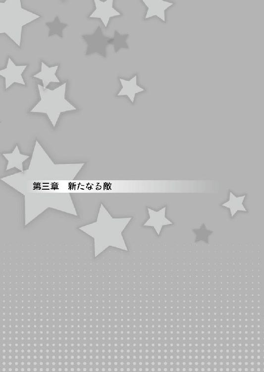
「さて......行くか......」
キノコニョッキ林でレーチェを助け、それまでの疲れも溜まっていたオレ達は一度街に戻り、なんとか知り合いには見つからず、宿屋に辿りつくことができた。
......けど、オレにはまだ、戦わなければならない相手、越えなければならない壁が存在している。
それをなんとかしない限り、休息の二文字はない......。
「よしっ！ 行こう！」
パンパンと両頬を叩き、気合を入れてビラビラする垂れ幕のかかった入口をくぐった。
そしてまっすぐ、その人のいる場所に向かい──
「えっと......その......部屋を......よ、四人で......どんな......部屋でも......」
そう口に出した。
いや、口に出したと言えるほど、大きな声が出せなかった。
「え？ 何か言ったかしら？」
「い......いえ......その......」
ダメだ......やっぱり女の人とは喋れない！
なんでだよ！ なんで宿屋の受付が女の人なんだよ！ 野宿しろって言うのか!?
「イオ......カッコ悪いじょ」
「そ、そんなことないわよ！ イオは少しだけ女の人が苦手で、ちょっとシャイなだけなの！」
「ふふっ、小さいころからそうでしたもんね」
うぅ......情けない。
「あぁ〜......もしかして、恥ずかしがってるのかしら？」
宿屋の女将さんが妖艶な笑みを浮かべて、オレ達に話しかける。
「い、いえ、恥ずかしがるっていうか、イオは──」
「わかってるわかってる。いくら受付だとしても、こんな所に来てるの、人には知られたくないものね～」
「......？ 宿屋に来るのを人に知られたくない......いったいなんなんでしょう？」
オレ達は四人揃って首をかしげる。
「ふふっ、そのためにほら、そこのボタンを押すと、鍵が出るようになってるのよ」
「わ、本当。部屋の内装も見られるのね」
「これで、誰にも知られず部屋に行けるってわけ」
......えっと？ それに何のメリットがあるんだ？
いや、女の人が怖いオレにとっては、ものすごくありがたいシステムなんだけどさ。
「あなた達、こういうの知らなかったの？」
「そ、そうですね......オレは、......家が近くにありますし......家族もいますし......この街で宿に泊まる意味とか......あ、ありませんから」
「家族がいるからこそ、この宿に来るんでしょうが！」
な、なんかわからないけど怒られた！
「それじゃあ、一人一つ部屋を選びましょう」
「は......一人一部屋？ あなたたち、何を考えてるの？」
「え？ ......一人一部屋っておかしいですか？ だって、ベッドも一部屋に一つしかないし......」
「ベッドが一つしかないから、二人で寝るんでしょう！」
ま、また怒られた！
「わたしは、あんまり高くなくていいから......これかな」
「そのお部屋、首輪とか、ハネボウキが飾ってあっていいですね。私もそれと同じものにします」
なんでそんなものが飾ってあるんだ......。
「えーっと、オレとオットンは相部屋でいいかな。で、一番安いのにするよ」
「勝手に決められたじょ!?」
「サービスで、ペットケージ貸してあげましょうか？」
「いや、......ペットケージって」
さすがにあんまりだろ......。
......と思ったけど、こいつのことだ。リリアやレーチェの部屋に侵入したり、もしくは他のお客さんの部屋をノゾキに行ったりするかもしれない......。
「オリタイプで鍵が付いてるやつ......一つ、お願いします」
「何言ってるんだじょ!? イオ！」
「やったわね、オットン！ 自分だけの部屋、ゲットじゃない！」
「あ、扱いがひどすぎるじぇ......」
とりあえず全員部屋を決めて、荷物を置いてから再びロビーに集合した。
そして全員が席に着くと......。
「イオくん、リリアちゃん。改めてお礼を言わせてください。私を助けてくれて、本当にありがとうございました！」
「普通に俺がスルーされてるじょ」
「す、すみません。気にはなっていたんですが......そちらは？」
レーチェのことだ......オレ達とずっと一緒にいる、首にパンツを巻いたヘンテコモンスターの話題に、ふれてもいいのか迷っていたのだろう。
もしかしたら、係わりたくなかっただけなのかもしれないけど......。
「まあ、旅の仲間のオットンだよ。自己紹介の件をやると、すごく長くなるから......まあ、声だけイケメンで、役に立つパンツ収集家って認識しておけば大丈夫だよ」
「そ、そんな適当な紹介......ひどすぎるじぇ」
「でもほとんどあってるじゃない」
「あ、合ってるんですね......。......それはともかく──オットンさんも含めて、皆さんありがとうございました！」
「いやっ、別に友達だしさ！ フツーだよ、フツー！」
「あ、照れてる♪」
「う......うるさいな......」
「うふふ、そう固くならないでくださいよ。私だって幼馴染じゃないですか」
「う、うん......」
するとレーチェは、思いつめたように俯いて、そして再び顔を上げた。
「......イオくんもリリアちゃんもオットンさんも、私みたいなモンスター娘を助けて、世界を救うために旅に出てるんですよね？」
「うん......まあ、さすがに世界までは無理だと思うけど」
「もう！ 何弱気なこと言ってるのよ！ なんとかするって言ったじゃない！」
「そうだじぇ！ 世界の中の子猫ちゃんのパンティを集めると言ったのは、どこの誰だじぇ!?」
いや、それは本当に言ってない。
「ま、まあでも......救えるなら救いたいなって思ってはいるよ」
するとレーチェは立ち上がって、オレ達に向けて頭を下げた。
「私にできることがあるかはわからないけど......。あなた達のお役に立ちたいんです！ 私も世界を救う旅、頑張ってお手伝いしますね！」
「レーチェ......」
するとリリアも立ち上がって、レーチェの手を取りぶんぶんと上下に振った。
「ありがとう！ レーチェなら心強いわ！ ね？ イオ！」
「そ、そうだな......」
「あ、ありがとう！ リリアちゃんにそう言ってもらえると、嬉しいな......」
嬉しそうにはにかむレーチェ......。
でも......この旅に女の子が増えるんだよなぁ......。大丈夫かなオレ......煩悩が復活したりしないかな？
「イオくんも、これからよろしくお願いしますね！」
「あ、ああ、よろしくな！」
「はい！」
まぁ、レーチェならまだ慣れてるしな......。
ホントに、いつものレーチェに戻ってくれてよかったよ......。
でもなんであんなくら〜い性格になっちゃったんだろう？
そういう性格になるっていうなら、あのラテって子はずいぶん違う性格になってたし。
......それぞれ、おかしくなり方が違うのかな？ 今度聞いてみよう。
「あの......それでですね、早速皆さんのお役に立ちたいと思って、こちらを用意したんです！」
「え......お礼？ 友達なんだから、そんなのいいのに」
レーチェからのお礼......。え、エッチなことだったりしないよな。
「子猫ちゃんからのお礼......パンティ関連のことがいいじょ」
......やばい。こいつと発想が同レベルだ。
「あははっ、こいつのことは気にしないでよ。それで、お礼って？」
「はい！ お礼のダシティーです！」
......ダシティー。......ダシティーか。ダシティーなのかぁ......。はぁ......。
何度か飲んだことがある......。ティーという名前が付いてるけど、あれはただのダシだ。
......正直言って、美味しくはない。
「あ、ありがとう......」
と、お礼を言いつつも、リリアの顔は引きつっている。
「イオくんもオットンさんも、熱いうちにどうぞ？」
「............うん」
「いただくんだじぇ！」
カップを手に取って、臭いがしないように鼻呼吸をやめて、ゆっくりと口に運ぶ。
オットンはオレの隣で、そのままごくごくと飲み始めた。
「どうですか？」
「す、すっごく独特なんだじょ......」
......こいつも、気を遣うとかできるんだな......。
「ひ、久しぶりのダシティーね！ な、なんだか安心するわね！」
「あ、ああ！ 嬉しいよ！ レーチェが元に戻ったって、感じがしてさっ！」
「良かったぁ！ 私の感謝の気持ちをたっくさん込めたんです！」
「あ、ああ......うん。レーチェの気持ちが伝わってくるよ」
「本当ですか！ ありがとうございます！」
美味しいとは言ってないし、嘘はついてないぞ。
「おかわりいっぱいありますからね！」
まるで花が咲くように、パァとレーチェの笑顔が広がった。
「う、うん......」
「あ、ああ、ありがとう......」
......さすがにこの笑顔を前にして、断るなんてことはオレ達にはできそうにない。
「でも、ダシティーだけじゃ飽きちゃうと思いますので」
「えっ!? 他にも何かあるの？ そんなの別にいいのにー」
嬉しそうだな......リリア。
でも確かに、このダシティーから解放されるのは嬉しい。
「ふふふっ。お待たせしました〜！ 新作ダシティーです！ 隠し味が入ってるんですよ〜」
「わ、わぁ〜......楽しみだなぁ......」
「あ......はは、ありがとうな......レーチェ」
「な、何が入ってるのか心ぱ──わくわくするじょ」
「皆さん、喜んでくれて嬉しいです！」
「ははは......」
......でも本当、何が入ってるんだ？
「あの......レーチェもさ、オレ達に遠慮せずに温かいうちに飲みなよ」
「私も......ですか？ でも、これはお礼のために作ったもので」
「う、ううん、そんなの気にしないでいいわよ。みんなで一緒に飲んだ方がきっと美味しいでしょうし」
「そうですか？ ......それでは失礼して、私もいただきます」
レーチェは猫舌なのか、フーフーと何度もダシティーに息を吹きかけ、がんばって冷ましている。
そしてその様子を、オレもリリアもオットンも、口を付けないまま凝視していた。
そしてやっと適温になったのか......。
「それでは、いただきます」
そう言って、ダシティーをコクコクと飲み始めた。
「ど、どう？」
「どうって、私の好みに作っているので、すごくおいしいですけど」
そ、そうか。レーチェはこれを美味しくないなんて思ってないんだもんな。
飲ませたところで、どうなるわけでもないんだ。
......そう思っていたら。
「......？ あ、あれぇ......？ なんか、ドキドキして......え？」
なんだかレーチェに異変が起き始めた。
「......レーチェ？ どうしたんだ？」
「はぁ......はぁ......！ んぅ......！ んふふふふふふ......」
ど、どうしたんだ？ 一口飲んだだけでこんなふうになるなんて、よっぽど強いお酒でも入ってたのか？
少し臭いを嗅いでみる──けど、アルコールの臭いはしない。
「レーチェ？ なんか、ヘンだよ？ 顔赤いけど......風邪？」
「ヘン？ そうですねぇ......。ダシティー飲んだらぁ......うふふ......すっごく......きもちいいのぉ......はぁ......」
レーチェの顔はトロンとしていて、目も潤んでいる。......体もほてってるみたいだし、息も荒い......。
び、媚薬とか......そういうものが入ってたんじゃ？
「うぅ〜......い、一応確かめるために......」
オレもほんの一口飲んでみるけど......。
「うぐ......」
まずいというだけで、体に異変は起きそうにない。
ただ、ちょっとだけ粉っぽい気が......。何だっけ、この感じ？
「うふふふ......りりあちゃぁ〜ん。いおくぅ〜ん」
「レ、レーチェ......？ わ？ ちょ、ちょっと！ 顔を擦り付けないで！」
まるでネコが甘えて、臭い付けをするように、リリアの体に頭を擦り付けている。
「んふふふふふ......スリスリスリ〜......カプカプ」
「んぅぅ！ ちょ、ちょっとダメだって！ 耳、甘噛みしないで......。はふぅ！ だめぇっ首筋だめぇ！ レーチェの舌、ざらざらして......刺激が......ひやぁ!?」
「リリアちゃ〜ん。──ペロ」
「わっ!? ほ、ホントにダメ！ そこダメだから！」
な、なんだかすごいことになってる。
「と、止めた方がいいんだよな？」
「と、止めたらもったいないじょ！」
た、確かにもったいない......もったいないけど、さすがに止めなきゃまずいだろ！
そう思って二人を引きはがそうとすると、レーチェが艶のある目付きでオレを見て、舌なめずりをした......。
「れ。レーチェ？ ちょっと落ち着い──」
「ねぇイオくん、あなたも私と......きもちよくなろ？」
「ちょ、ちょっと！ ダメだってそんなの！ ほ、ほら、リリアを途中で放り出しちゃ可哀そうだろ？」
「イオひどい！ わたしを生贄にする気ね！」
「だ、だって！ 仕方ないだろ！」
リリアには悪いけど、これでオレに対する被害は収まるはずだ。
「んふふふふ〜......じゃあ、三人できもちよくなっちゃいましょうよぅ」
悪化した!?
「私たちぃ〜......子供の頃から三人一緒だったじゃないですかぁ〜。じゃあ、大人になるときも、三人一緒ですよねぇ〜」
「一緒じゃない！ 一緒じゃないわよ！ そういうのは一緒じゃダメなのよ！」
「うふふふふ......わかったぁ。それじゃあ、まずは私とリリアちゃんからぁ」
レーチェが身を乗り出し、リリアの唇に触れるか触れないか、ギリギリのところに迫る。
「れ、レーチェ！ ホントに！ ホントに！ ホントにダメだからぁ──」
リリアの必死の抵抗もむなしく、水音が響き渡った。
──ザバァァァァァァァァァァァァァァァァァァァ！
「......にゃ？」
「え......えっ？ なに？ 何なの!?」
オレ達の目の前で、リリアとレーチェがずぶ濡れになっている。
服がピッタリと肌に貼り付いて......ちょっと刺激的な格好になっている。
......じゃなくて！
「はー、良かった。ロビーがピンクい雰囲気になるところだったわ......」
「お、女将さん!?」
「ふぇ？」
二人の横には、バケツを持った宿屋の女将さんが立っていた。
どうやらこの人が水をかけたようだ。
「まったく、そういうのは部屋でやってね。二人の部屋には、そういう道具もあるんだから」
何を言ってるのかよくわからないけど、とにかく女将さんのおかげで、リリアは助かったんだ。
「あ、あれ？ 私、なにを......？」
ぶるぶるぶるっと、水を払い、いつもの様子に戻ったレーチェ。
その様子を見て、ほっとした表情を浮かべながら女将さんはこう言った。
「さっきレーチェちゃんがダシティーに入れた隠し味、気付いてなかったかもしれないけどマタタビだったの 」
「あ、だからなんかぽや〜んって......」
ああ、だからオレには何の影響もなかったのか。
「ふえぇ......マタタビ？ ひぃっ!? ま、また私、ヘンなこと言ってませんでした!? してませんでした!?」
「え、えっと......」
「し、してなかったと思うよ。な？ リリア？」
「そ、そうね。うん、ダイージョーブだったよ」
「ど、どうして目を合わせてくれないの、リリアちゃん！」
そりゃあ、あんな目に遭えばなぁ。......いろいろ危なかったわけだし。
「そ、それより！ なんでマタタビなんてあったんですか!?」
「だって近所の野良猫の群れに放り込むとおもし──可愛いんだもん♪」
「間違えないよう、ラベルとかお願いします！ すごく危なかったんですから！」
「はいは〜い♪」
女将さんは軽薄そうに手をひらひらさせて、受付の奥へと帰っていった。
「......オレ達も戻ろうか？」
「......そうね」
疲れた表情のオレとリリアに押されて、レーチェもオットンも部屋に戻ることになった。
「ふぅ......なんか久しぶりにゆっくりできそうだ」
部屋までの廊下を歩きながら、この街を出てからのことを考える......。
ラテと対峙して、その後にオットンが付いてくることになって、レーチェと戦って。
それで何とかレーチェも助けて、なんとなくだけどモンスター娘を助ける方法もわかってきて。
......意外となんとかなってきてるのかな？
まあ、それも全部リリアがいてくれたおかげだけどさ。
「あ、あの......イオくん」
「え？ ......レーチェ」
声をかけられ振り向くと、そこにいたのはレーチェだった。
なんだか顔を赤くしていて、指を何度も組み直してもじもじしている。
どうしたんだろう？
「あ、あの......イオくん」
「う、うん。何かあった？」
「えっと......その......よ、夜......一人で私の部屋に来てもらえませんか！」
「へ？」
自分でもわかるくらい、マヌケな声が喉から漏れた......。
「こっ、今後のことに係わる、大事なお話なんです！ だ、だからえっと......そ、それでは......お願いします！」
レーチェはペコリと頭を下げると、全速力で走り去ってしまった。
「え？ ......なんだったんだ？」
夜にレーチェの部屋で......大事な話......。
夜の宿屋で女の子と二人っきり......。しかも大事な話......。さらにオレは恩人みたいなもの......。
うあぁぁぁぁ！ 煩悩が消えたっていうのに、してはいけない妄想が頭の中に広がってきた！
っていうか、ここまで条件がそろってるんだったら、もはやこれはいかがわしい妄想じゃなくて、煩悩とかじゃなくて、一般的にそう考えてもいいってことなんじゃないか!?
煩悩が消えたのにそう思うってことは、そうなんだよね？
やっぱり......この状況って。
「お、男として、なんか準備しておいた方がいいのかな？」
「うん、もちろんその方がいいと思うわよ」
「だよな、夜まで時間あるし──って、うわぁぁぁぁぁぁぁぁぁぁぁぁぁっ!?」
「な、何よ！ 大きな声出して!?」
オレの隣にはいつの間にかリリアが立っていた。
「な、何してるんだよリリア！」
「こ、こっちのセリフよ！ イオが廊下でブツブツ何か言ってたから、声かけただけなのに......」
あ、ああ......そうだったのか。
「......っていうか『準備しておいた方が......』って言ったオレに『もちろん』って言ってたけど......もしかして、それまでのこと、見てたりしてた？」
「......それまでのこと？ 一人でブツブツ言ってる所しか見てないけど」
......よかった、レーチェとのことは知られてないみたいだ。
「わたしはてっきり、今後の戦いのために、アイテムとかを準備しに行くものだとばっかり思ってたんだけど？」
「え？ ......あ、うんうん。それそれ！ そうしようと思ってたんだよ」
「うん。それならよかったわ。わたしもそうしようと思ってて、イオを誘いに来たのよ」
「そ、そうなんだ。じゃあちょうどよかったな」
「うん。それじゃあ、街に買い物に行きましょう」
「え？ 今から？」
「......？ だって、準備しないとって言ってたじゃない」
うぅ......さすがに少し休んでからの方が、体力的にはよかったんだけどな。
まあ、確かにアイテムは買わないといけないだろうし......いいか。
「わかった、それじゃあ行こうか。......レーチェには悪いけど、口直しもしたいしな」
「ぷっ......あはは！ そうだね、。甘いものでも食べましょ」
こうしてオレとリリアは、街に繰り出すことになった。
「はぁー。ほんの数日しか経ってないのに、なんだか懐かしいなー」
「世界は大変なことになってるのにね......。この街はいつもと変わらないように見えるから、緊張感がなくなるわよね」
「でも街に帰ってくるとほっとするよな」
「そうね」
甘い臭いや楽器の音、石畳でできた地面、色とりどりの食べ物、沢山の人、そしてその人達が暮らしてる生活音......。
「キノコニョッキ林じゃ、キノコの臭いに沢山のキノコ、キノコでできた地面、色とりどりのキノコ、おまけにキノコの音しか聞こえなかったもんな」
「最初のいくつかはまあわかるけど、キノコの音ってなんなのよ？」
「......勢いで言ったけど、自分でもよくわからない」
まあ、久々にキノコから解放されたってことだ。
「それにしてもイオ、ちょっと逞しくなってない？」
「え、そうかな？ オレは戦ったりしてないし、そんなことはないと思うけど」
「ううん、なんていうか......余裕とか、自信がありそうな感じかしら？」
「余裕とか自信......。全くないけど」
うーん......でもまあ、さっき思い返してたように、レーチェを助けることもできたし、モンスター娘を助ける方法がわかったからかな？
「まあ、余裕はないけど......やってみて、なんとかなってるからじゃないか？」
「ふふふー、だから言ったじゃない」
「......？」
「旅に出る前に、イオはやればできるって」
あ、ああ......そういえば言われたな。
「うん......意外となんとかなるもんなんだな」
「そうそう、イオはダメな子なんじゃないんだからね！」
相変わらず余裕も自信も無いけど、それでも少しは成長できてるのかもしれないな。
「まあ、やれるところまでやってみるよ」
「うん。まだちょっと情けない返事だけど、やる前から無理だって言ってた頃よりは、男らしくなってるわね」
まあ、誉められたと受け取っておこう。
そんな話をしながら、オレとリリアはショップへと向かう。
「それにしても、今日はなんか人が多いなー。はぐれないようにしないと」
「そうね。ふふっ......小さい頃もこんな風に歩いたっけ。手をつないで......わたしがイオを引っ張っていって......」
「小さい頃はいつもリリアに引っ張られてたよな」
なんだかちょっと懐かしいな。
「......そういえばいつからだっけ？ イオと手をつながなくなったのは？」
「ん？ いつからって？」
「ううん......そういえばつないでないなーって。ちょっと寂しいなって思ったけど、放っておいても迷子になる年でもないし、いいけどね」
「んー......じゃあ、ん」
オレはリリアの前に手を差し出した。
「え？」
「はぐれないように、手をつないで行こう」
別にオレは、手を繋がなくなった覚えなんてない。そんな宣言もしなかったし、嫌だと思ったこともない。
言われてみれば繋いでないなー......程度のことだ。
「う、うん！ あ、でも爪......痛いかも」
「爪？ なんで？ リリアはいつもオレが怪我したりしないようにしてくれてるじゃないか。小さい頃から、遊ぶ時は色々気にしてくれてただろ？」
「あ......う、うん......。知ってたんだ」
なんだか、妙にリリアの顔が赤い。
「ま、まぁ......」
なんだか照れくさくなってしまい、軽く視線を逸らすとリリアの柔らかい手が、オレの手を包み込んだ。
「ふふっ......それじゃあ行こうか？」
「あ、ああ......そうだな」
「あ......それとね、イオ？」
「ん？ なんだ？」
「今日の夜、空いてるかな？ 街にいた頃は、あんまり夜出歩かなかったじゃない？ せっかくだし、夜の街に行ってみない？」
ああ、それは楽しそうだ。夜しかやってないお店とか、噂でしか聞いたことなかったもんな。......せっかくだし。
......って、そうだ。今夜はレーチェと約束があったんだ。
「あー......ごめん、今夜はちょっと都合が悪いんだ」
「あ......そ、そうなんだ。うん！ それじゃあ、また次の機会に行きましょう」
「ああ、約束だ」
「うん......」
「......」
「......」
なんとなく、そこで言葉が止まってしまった。
うぅ......なんだかちょっと気まずいな。
そんなことを考えながら、街の入口あたりに差し掛かった時だった。
「聞いてもいい？ 夜にある用事って、なんなの？」
んー......まあ別に隠すことでもないし、言ってもいいか。
「実は──」
と、言おうと思うと、オレの声はある声にかき消された。
「──あら、まだまともなモンスター娘がいたのね」
声の方に顔を向けると、銀色の髪に赤い瞳、幼い外見の女の子が街の入口から入ってきたところだった。
「え？ わ、わたしのことかな？ えっと......ねえあなた、わたしはモンスター娘だけど、別に人間に危害を加えたりは──」
「──ごきげんよう」
「うえ？ あ、はい......ごきげんよう」
品のいい挨拶に戸惑っているのか、リリアは完全に狼狽えている。
「危害を加えないのはわかっているわ」
「なんでだよ？ オレ達とキミって、会ったばかりだろう？」
女の子は楽しそうにフフッと笑った。
「だって、危害を加えるモンスター娘が、爪を引っ込めて、人間と手を繋いで歩く？」
「......え？」
「......あ」
そう言えばそうだった。手をつないだままだった。
人に見られたことで恥ずかしくなったのか、お互い急いでそれを離す。
「あらあら、お邪魔しちゃったかしら？」
「そ、そんなことは......なぁ？」
「う、うんうん、別に大丈夫よ！」
女の子はまた楽しそうに、クスクスと笑い声を漏らした。
......っていうかオレ達、この子と比べてずいぶん精神年齢がおさない気がする。
「それにしても驚いたわ。印のついていないモンスター娘に会うなんて初めてよ」
え？ この子......印のことを知ってるのか？
それにも驚いたけれど、彼女はさらに驚くことを言ってきた。
「まあ、あたし以外は、だけど」
......この子も、モンスター娘？ しかも──
「あなたも、おかしくならなかったモンスター娘なのね？」
「ええ、そうよ。そこの人間さんも襲わないから安心して」
リリアやこの街のモンスター娘と同じで、おかしくなっていない。
「あのさ、さっき『印』って言ってたけど、キミも黒歴史状態の印のことを知ってるのか？」
「クロレキ......なに？」
「黒歴史状態だよ」
「......気にしないで、彼の造語だから」
「あら......いいセンスしてるわね」
「この良さがわかるんなら、キミもそこそこのセンスだよ」
「イオ、イヤミで言われてるんだと思うけど......」
何だって!?
......っていうか、この子は街の外から入ってきたよな。
だったらなんで、黒歴史状態になってないんだ？
「あのさ、この街の外からきたんだよな？ でも、おかしくなってないんだよな？」
「ええ、そうよ」
「ほ、本当に？ ......街の外にも無事なモンスター娘がいたんだな！」
街の中のモンスター娘は無事だけど、まさか外にもいたなんて......。これは大発見だ！
リリアに目を向けると、心の底からホッとしたような顔を見せていた。
「良かった、一人でも無事なモンスター娘がいてくれて......」
自分の仲間が次々おかしくなっていく中、一人でも無事な子がいたことは、リリアにとって本当にうれしいだろう。
......オレも、もし人間がおかしくなっていく中、一人だけまともだったらと思うと......ゾッとするな。
と、そんなリリアに、女の子は不思議そうな視線を向けている。
「......？ ねぇ、あなた......どこかで......」
「リリア、知り合い？」
「ううん、知らない子よ。多分......」
「まあ、こんな品の良さそうな子、リリアの知り合いにはいなさそうだもんな」
「な、なんですって！」
「ふふっ、ごめんなさい。アナタが知り合いに似ていたものだから」
口元を軽く隠して笑う女の子。
大口を開けて叫びながら、拳を振り上げているリリア。
......やっぱり知り合いじゃないだろうなぁー。
「ご挨拶が遅れたわ。あたしはココ、よろしくね」
「あ、ああ、オレはイオ。で、こっちが──」
「リリアよ。よろしく」
小さな手を握り、握手を交わす。
そして彼女は、少し真剣なまなざしをオレ達に向ける。
「そういえばさっき、街の外とか中とかって言っていたけど、あれはなに？ 街には他にもおかしくなってないモンスター娘がいるの？」
「ああ、この街にいるモンスター娘達は今までどおりなんだよ」
一瞬、驚いたような顔を見せる。
「ふぅん......。どうしてなのかしら？」
「それが、わたし達にもわからないのよ」
「まあ、オレ達からしてみれば、街の外にいて平気なココの方が『どうして？』なんだけどな」
それ以外でおかしくならない方法なんて......あ、そうだ、あるんだ。
もしかしてココも、あの方法で元に戻ったとかかも。
「ココは、体を男に触られた経験とかってあるか？」
「......は？」
「詳しく言うと、男に煮えたぎる思いをぶつけられながら体中を触られて、頭が真っ白になったことは──」
「──だれかー!! 変な男が美幼女に卑猥な質問を浴びせか──モガモガ」
「ご、ごめんねココ、イオが変なこと言い出して」
リリアが慌ててココの口をふさぐ。
「ちょっとイオ！ 小さい子に何言ってるのよ!?」
「う......あ......ごめん」
うん。......よく考えてみると、とんでもないセクハラ発言をしてたな......。
っていうかこの子、今自分で美幼女って言ってたぞ。......まあ、確かにかわいいけど。
「ごめんココ、おかしくなったモンスター娘を元に戻す方法があってさ。それがそんな感じなんだよ」
「んむむぐ──それ、本当!? 『清浄なる布』以外に、モンスター娘を元に戻せる方法があるの？」
「ああ、オレはその方法で友達を助けたんだ。だから清浄なる布が無くても──」
......清浄なる布？
「──清浄なる布ってなに？ オレの方法以外でも、モンスター娘を助けられるのか？」
「あたしは、モンスター娘と世界を救うアイテムを探しているのよ。それが清浄なる布なの」
......世界を救うアイテム？
「それを伝説のモンスター娘──つまり、モンストピアの創造者に纏わせることができれば、彼女は正気を取り戻し、この天変地異は治まるのよ」
モンストピアの創造者......。天変地異......。世界を救うアイテム......。
「にわかには信じられない話ね......」
確かに。......でも。
「ふむ......なるほどな」
「えっ、イオは信じるの？」
「戦うよりアイテム集めの方が安全だし、オレ向きだなーって思って」
「............」
リリアが呆れた表情をオレに向けている。
「いや、でもさ。世界中のモンスター娘と戦って、体触って元に戻すより、清浄なる布ってのを持って、伝説のモンスター娘の所に行く方が現実的じゃないか？」
「それはそうかもしれないけど......。でも、清浄なる布って、どこにあるのよ？」
......うぐ。
「伝説のモンスター娘はどこにいるのかしら？」
......全然わからない。
「い、いいだろ！ 最強武器ゲットしてから安心安全にラスボスに挑む、これ常識！ そうだろう？」
「どこの常識!? 冒険小説の読みすぎよ！」
「いいじゃないか、そんなことくらい夢見ても！ 世界中を治して回るボランティアみたいなのより、伝説とか幻とかの方が憧れるんだよ！」
リリアがこれでもかってくらい呆れた表情をしてるけど、そんなことくらいじゃへこたれない！
「幻のアイテムを手に入れて、伝説のモンスター娘と対峙する。そしてオレは世界の危機とモンスター娘を救い、様々な人が拍手と歓声で歓迎する中、街にガイセンするんだ......」
いい！ これがオレの求めるヒロイックサーガだ！
「ココ！ その話、もうちょっと詳しく──あ、あれ？」
あたりを見回しても、彼女の姿は見当たらない。
「イオの妄想が長いから、行っちゃったみたいよ」
「ええー......」
まあ、しょうがないか。そのうちまた会えるだろう。
それにしても不思議な雰囲気を持った子だったな......。
街の外にいたのにおかしくなってないし、
彼女はいったい、なんのモンスター娘だったんだろう。
その後、オレとリリアは買い物を済ませて、宿屋へと戻っていった。
「イオ、こんな遅くにどこに行くんだじょ？」
夜遅く、レーチェの所に行くために、部屋を抜け出そうとしたオレにオットンが声をかけた。
「え？ あ、あぁ......夜食を買いにさ」
「夜食？ だったら俺の分も買ってきてほしいお！ 寝てたらディナーの時間が終わってて、腹ペコなんだじぇ」
「ああ、わかった。適当に買ってくるよ」
「頼んだじぇっ！」
オットンの言葉を背に、オレは部屋を後にした。
まあ、適当に買って行ってやればいいだろう。
そうしてオレは胸を高鳴らせつつ、レーチェの部屋の扉の前に立っていた。
まさかこの時、彼女に見られているとも知らずに──。
「あれ？ ......イオ？」
それにしても、リリアもレーチェもすごくかわいい女の子だ。
......正直、煩悩が消えてなかったらオレはどうなってたかわからない。
女の子と一緒に宿屋に泊るんだし、してはいけない妄想をしていたかも......いや、その妄想を実行していたかもしれない。
「危ないところだった......」
きっと今までのオレなら、「お礼がしたい」なんて言ってきたレーチェに対して、いかがわしいものを期待してしまっただろう。
でも実際は、そんなに都合のいいことはないし、それに期待したって裏切られるだけだ。
だから煩悩が消えたのは本当に助かった。
さて、それじゃあ。
──コンコンと、レーチェの部屋のドアをノックする。
『は、はい。どうぞ』
ちょっと緊張した様子のレーチェの声。オレはドアを開ける。
中に入ると、レーチェは真っ赤な顔をしてベッドに腰掛けていた。
「い、いらっしゃいませ」
「う、うん。約束どおり一人で来たけど......」
なんだかレーチェの様子がおかしい、何かあったのか？
「あ......あの......えっと......イオくんに......お話がありまして」
「だ、大丈夫？ 何か、様子が変じゃないか？」
「そ、そんなことありませんと思いますですよ」
いや、もう、言葉遣いからしておかしいから......。
「もしかして......あの状態の後遺症とかが残ってるとか」
「そ、そんなことはありません！ あの......その......えっと......」
レーチェは立ち上がると、何度か深呼吸してうるんだ瞳をこちらに向けた。
「わ、私の体をつ、ちゅかってください！」
噛んだ......。レーチェは痛そうに、舌を出して涙目になっている。
「ううっ、大事なことだったのにぃ......」
「お、落ち着いてレーチェ。ちゃんと言えるまで聞くからさ......」
「ぁ......イオくん、やっぱり優しいです......。そ、それでは改めて言いますけど......わ、私の体を使ってください！ ──よ、よかったぁ、今度は言えました」
花が咲くように、ぱぁと笑顔を広げるレーチェにつられ、オレの顔も緩んでしまう。
「あはは、うん。よかったよか──えぇ!?」
が、その顔がすぐに硬直してしまった。
今なんて言った!?
ワタシノカラダヲツカッテクダサイ？
私の体を使ってくださいって言った？ え？ 何それ？ どういうこと？ なんかその、はけ口的なこと!? 英雄色を好む的な!?
いや、違うよ！ 違う違う違う！ 絶対違う！
そうだ！ 消えたと思った煩悩が返ってきて、今オレは妄想の真っただ中にいるんだ！
じゃないと、こんなことなんてありえない！
「あ、あの本当に本当に助けてくれてありがとう。でもまだ助けなくちゃいけない、モンスター娘がたくさんいるんですよね」
そう言ってレーチェがオレの手を握る。
あ......あったかくて柔らかい。
この感触......妄想じゃない。現実の感触だ......。
「い、いやあの！ レーチェ!? これはいったい？」
「イオくん......」
トロンとした瞳がオレを映し出す。
「は、恥ずかしいけど......。イオくんのためなら、がんばれますよ」
そ、それってやっぱり......そういうこと!?
「え、えっと......マタタビの影響がまだ残ってるとか？」
すると首を横に、何度も何度もフルフルと振った。
「......そんなわけないです。私、今......色んな覚悟して、イオくんに言ったんですよ......」
う、うぅ......女の子にそこまで言わせたんだ。オレも覚悟を決めなきゃ。
「わ、わかったよレーチェ......。それじゃあ......してみようか？」
「は、はいぃ。ふ、ふちゅちゅかものですがよろしくおねがいしましゅ！ ──うぅ。ま、また噛んじゃいました......」
そんな彼女に、再び頬が緩んでしまった。
「あ......でもオレも初めてだから、うまくできるかはわからないけど」
「......？ 初めて、ですか？ イオくん、何か勘違いしてませんか？」
「え？」
......勘違い？
「私が言っているのは、私を黒歴史状態から解放してくれた、あの儀式のことですよ？ あれを研究すれば、モンスター娘を解放できるかなって思うんです」
..........................................。
「......わ、わかってたよ？」
「......？ でも今、初めてって......」
言えない......いかがわしいことを考えてしまってたなんて言えない。
「え......えっと。へ、部屋でするのがってことだよ」
「そ、そうなんですか......」
やばい、疑われてる。
な、何を勘違いしてるんだオレは!?
レーチェは他のモンスター娘のために、自分の体を使ってほしいって言ってるのに、オレはなんてことを考えてたんだ！
最低だ！ オレなんて最低だぁぁぁぁぁぁぁぁぁぁぁぁぁぁぁぁぁぁぁぁぁぁぁ！
「い、イオくん？ どうしましたか？」
「いや......えっと......」
はぁ......このまま隠し続けても、変なことを考えてたのが顔に出ちゃうだろうし、勘違いしてたことを、知ってもらった方がいいだろう。
そう、いかがわしい妄想をしていたわけじゃない。これは純然たる勘違いだ。
だからちゃんと伝えておこう。
「ごめんレーチェ。言葉と内容から......その、男女のそういうことかもって思ったり思わなかったりで......。そ、それで変なふうになっちゃって」
レーチェは一瞬キョトンとした表情を浮かべるが、すぐに全身を真っ赤にして──
「ああああああ、あのあのあのあの！ その、そういうつもりではなかったのですが！ たしかにそうおもわれてもふしぎじゃないことをわたしはいってしまっていましたね！」
恥ずかしさに震えながら、なにやらわたわたと身振り手振り説明している。
勘違いしちゃった方も、させちゃった方もこれは恥ずかしいよなぁ......。
「でで、でもですよ！ わ、わわわわわ、わちゃしは、いおきゅんとなら、しょっ、しょちらでもいいんでひゅけど！ で、でもっ！ まだちょっと、ひゃやいかと......」
「え？ ......ごめんレーチェ。噛んでて、本当に何言ってるかわからなかった」
「うぅぅぅぅぅ〜〜〜〜〜〜......。ほ、本当にだいじなことだったのにぃぃ〜〜〜」
レーチェは顔を耳まで真っ赤にしつつ、頬を膨らませてオレを見た。
いや......噛んだのはそっちだろ。
「と、とりあえず。水でも貰ってこようか？」
「だ、大丈夫です！」
とは言っても、顔が信じられないくらい真っ赤になってるけど......。
「え......えっと......お話を戻しますよ？」
「う、うん。わかった」
「つまりですね......。他のモンスター娘を元に戻すために、あの儀式を効果的に行えるようにできないかなと思いまして。......それでその、私で練習をしてもらおうと......」
確かに、彼女の言っていることは理にかなってるし、今後の役にも立ちそうだ。
ぜひお願いしよう。
「わかったよ、こっちも協力してくれて嬉しいよ」
「よ、よかったです......断られるかと思って、ドキドキしちゃいました」
心底ほっとした顔を見せてくれる。
「それじゃあ始めようか？ えっと......儀式の時ってどんな感じだった？」
「そうですね......あの時は、胸の奥がすごくキュンとしたんです」
彼女はうっとりとした表情でそう口に出す。
「そうなんだ」
そればかりは味わった本人じゃないとわからないし。
「それを感じる度に、私の心を覆っていたモヤモヤが......なんて言うんでしょうね、心にまとっていた鎧を脱がされていくような......そんな感覚があったんです」
そしてそのまま言葉を続ける。
「他の子達も、それを味わえば元に戻るんだと思います。だからもっと、効果的にキュンとできるように......私の体を使って、練習してください」
「レーチェ......」
「えっと......あの。だからですね......この前よりも、もっともっと......私をキュンキュンさせてください」
「ああ、がんばってみるよ。ただ、オレからじゃ......キュンとしてるか解らないから、レーチェもしてるかどうか教えてほしいんだ」
「ふぇ!? わ、わかりました......が、がんばります！」
そうしてオレは、ゆっくりとレーチェの体に触れる。
「ふわ......く、くすぐったい......です」
「ご、ごめん......もっと強い方が？」
「い、いえ......優しくしてくれてるっていうのが伝わって......嬉しい......。キュンとしてます」
レーチェが柔らかく微笑み、こう続けた。
「でも、練習ですから、イオくんの好きなようにしてみてください。私は、イオくんに限界までキュンキュンさせられるまで、何度だって付き合いますから」
「レーチェ......」
それを聞いたオレは、彼女の柔らかい部分に指を埋める。
「ふ、ふにゃぁぁ〜......に、ニクキュー......ですか。あ、やぁ......首筋までぇ......」
ネコマタだし、そういう部分もどうかなって思ったんだけど......。
「ニクキュー......柔らかくて気持ちいいよ」
「ほ、他にも......色んなところ触って......ください。そこ以外にも......や、やわらかいところも......いっぱいあるんで」
「ああ、わかったよ」
こっちが恥ずかしがってたら、レーチェを不安にさせるだけだ。
オレは自信をもって、思うがままに彼女の体に触れることにした。
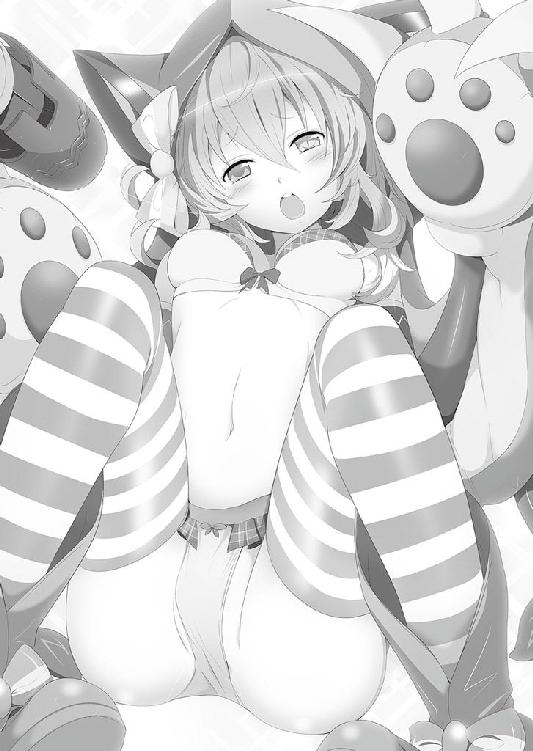
「いくよ......レーチェ」
「ふわぁ！ ......そ、そこ、すごくキュンとします！ ひゃぁ！ だ、ダメですイオくん！ そこはキュンキュンしすぎて、あたまおかしくなっちゃいます！ わ、わたし、ダメダメになっちゃいますよぉ！ やぁ！ ふにゃぁ！ ひあぁぁぁ！ らめれす！ らめぇ！ ふわぁ、ふわぁぁぁぁぁぁぁぁぁぁぁぁぁ〜〜〜〜〜〜〜〜〜〜〜〜〜〜〜〜!!」
「──ハァ──ハァ」
真赤になった体でベッドに横たわり、レーチェは全身を震わせつつ激しい呼吸を繰り返している。
「レーチェ......大丈夫だった？」
「はい。イオくんに......すごく、キュンとしちゃいました」
「そっか、ありがとう」
お互い、ちょっと照れくさそうに顔を見合わせて微笑みあう。
すると、レーチェがゆっくりと口を開いた。
「あの、今から言うこと、リリアちゃんには、ないしょにしてくれますか？」
「え......？ うん、約束する」
リリアにも内緒って......なんだろう？
「私が、なんでリリアちゃんに、あんなこと言っちゃったかって話なんですけど......私達、小さい頃からいつも三人一緒だったじゃないですか」
「ああ、よく三人でモンストピアで遊んでたな......」
オレとリリアがモンストピアに行くと、それにレーチェも混ざって三人で遊んだりが多かった。
「いつも三人で仲良く一緒にいられたらきっと、幸せなんだって思ってました」
「ああ、確かにあの時は楽しかったな」
「私ね、いつも三人が良かったんです。だから......私が一歩引いていれば、三人仲良くしていられるんだって、思ってました」
「え......？」
不意に見せた、レーチェの悲しげな笑い顔......。
それに、ほんの少し罪悪感を覚えてしまう。そう言われることに、ちょっとだけ心当たりがあったからだ。
「一歩引くっていうのは？」
「だって、イオくん、リリアちゃんとしか喋れなかったじゃないですか。私とはあんまりお話してくれなかった」
「うっ......」
そうだ。リリアと遊んだり、三人で遊んだりは多かったけど、レーチェと二人で遊んだ記憶はほぼないんだ。
「こうやって二人きりで会話なんて、できなかったでしょう？。今は、違いますけど」
「......そうだな」
昔からヘタレだったオレは、お姉さん気質のリリアに甘えてしまった。
何でも許してくれて、どうしようもないオレの面倒をみてくれる。こんな子は彼女だけだと思った。
だから......レーチェのことが嫌いだったわけじゃない。
どうしても緊張してしまうんだ......女の子の前だと。
女の子が......レーチェがオレを受け入れてくれるか。友達になってくれるのか......。
「リリアちゃんが羨ましかった。リリアちゃんの背中ばっかり見てました。私達、真ん中にリリアちゃんがいないと一緒にいられなかったんですよ」
......そうだ、そのとおりだ。
「ああ、リリアちゃんには簡単にできることが、私にはできないんだなー。リリアちゃんはそこにいるだけでいいんだなぁって......」
罪悪感に、胸が締め付けられる。
「でも私はリリアちゃんじゃないから、なんにもできない。私一人だけだったら、イオくんは友達だと思ってくれてないんじゃないかな......って。そんな風にうじうじしてました。だから私も、イオくんに会いに行くのが怖かったんです」
......そうか、彼女も彼女でそう思っていたのか。
「リリアちゃんが一緒じゃなくても、イオくんが一人で遊びに来てくれないかな......なんてよく思ってました」
「ごめん......。色々気を遣わせてたなんて、知らなくって......。オレのことを考えてくれていたのは、リリアだけじゃなかったんだな。当たり前のことなのに気づかなかった」
「いいえ、私も言いいませんでしたから。我慢して我慢して察してもらおうなんて、無理な話ですよね」
......もしかしたらオレ達は、リリアがいなかったら、今は知り合いにすらなっていないのかもしれない。
そう考えると......すごく悲しくなってくる。
だからオレは......。
「レーチェ」
「はい......？」
「あ......改めてこういうのも変だけどさ」
幼い頃の怯えている自分と、怯えているレーチェが目の前にいるような気がした。
小さなオレは、ひどく不器用で引きつった笑顔を浮かべ、精一杯の声を喉から絞り出す。
「......オレと友達になってくれない？」
ほんの少しだけ間が空いて......彼女はこう答えた。
「はい！ よろしくお願いします！」
ほんの少しだけ、オレ達の止まっていた時が動き出したような気がした。
「あ......そろそろ朝ご飯の時間ですね」
「もうそんな時間か」
結局あの後、オレ達はこれまでのことを取り戻すかのように、色々な話をした。
と言っても、大半がリリアの話になったんだけどさ。
やっぱり共通の話題は彼女のことが多いし、それに本当に感謝しているし。
「それにしても......ちょっと言い過ぎたかな」
「そうかも......ですね」
深夜のテンションのためか「リリアは眩しい」とか「あんな子になれたらいいな」とか、終始リリアを誉めまくっていた。
......今考えると、ものすごく恥ずかしい。本人には絶対聞かせられないな......。
「とりあえず、朝ご飯をいただきに行きましょうか？」
「そうだな」
オレとレーチェは二人で部屋を出て、一緒に食堂へと向かった。
「おはよう、リリア」
「おはようリリアちゃん」
食堂に行くと、すでにリリアが座っていて、そこにオレ達も腰を下ろす。
「......オハヨ」
う......なんだか機嫌が悪そうだ。
口を尖らせて、ジトーッとオレ達を見ている。
「ど、どうしたんだよ、リリア？」
「......別に、なんでもないわよ」
「な、なんでもないようには見えなんだけど......」
レーチェも、どう声をかけたものかとオロオロしている。
いや、ホントにどうしたんだよ？
「あ、あのさリリア......言いたいことがあったらはっきり言ってくれないか？ レーチェも怯えてるし......オレも怖いし」
「......」
リリアは大きく溜息を吐くと、ポツリポツリと語り出した。
「昨日の夜は......どこにいたの？」
「へ......？」
思わずレーチェと目を合わせてしまった。
「い......いや、どこって別に......」
「レーチェの部屋の前にいるの、見ちゃったのよね」
うぐ......見られてたのか？
「あ、ああ......確かにレーチェの部屋には行ったよ。うん」
「何してたの？」
「え......何って？ いろいろ話とか......なぁ？」
「う、うん。イオくんと、いろいろなお話をしてて。リリアちゃんが怒るようなことは、特になかったけど......」
リリアはほっとしたように息を吐くと、いつもの笑顔に戻った。
「うん、そうよね！ たとえレーチェの部屋に行っても、イオにヘンなことできる勇気があるわけないもんね！」
「あ、ああ！ そうだよ！ オレにそんな勇気があるわけないだろ！」
「それ、大きな声で言うことじゃないわよ」
「ふふふっ。そうですよ、イオくん」
ふぅ......なんとかいつものリリアに戻ってくれたな。
彼女らしい、一点の曇りもない明るい笑顔だ。
けど......その笑顔が、ほんの数秒後に崩れるなんて、誰も想像していなかっただろう。
笑顔を崩そうとする不穏な影......。
そいつは、まるで這うようにオレ達へと近付き......ゆっくりとテーブルに上ると......。
「イオぉぉぉぉ〜......！ どうして頼んだ夜食が朝まで来ないんだじょぉぉ〜......」
そう言って、涙ながらに口を開いた。
「──お、オットンッ!?」
っていうか、実際這ってきていた。
「朝までどこにいたんだじょ〜......。俺はもう、腹が減って腹が減って......死んでしまいそうだじぇ......」
......これは、もしかしてまずいんじゃ。
「へぇー......夜に出て、朝までどこに行ってたのかしら？」
リリアのジトーッとした視線が、オレにザクザク突き刺さる。
「い、いや......それは......。た、確かにレーチェの部屋にはいたけどさ、変なことはしてないよ！ ......な、レーチェ？」
「ふぇ？ あ、はい、変なことは......し、し、しししてません！」
......すごいごまかしてる感が出てる。
はぁ......このままごまかそうとしても、たぶんリリアの機嫌は悪くなるばかりだ。
いっそのこと全部話してしまった方が男らしくて、リリアも納得してくれるだろう。
何せオレ達は、世界を救うための儀式の研究と、リリアには聞かせられないくらい、リリアを褒めちぎってただけだ。
何一つやましいことはない！
「わかったよリリア、全部話す」
「な......なによイオ。急に誠実そうな雰囲気出して」
「確かに誤解されても仕方ないような内容ばっかりだったけどさ、本当にそうじゃないんだよ」
「......じゃ、じゃあ......何してたのよ？」
「オレはただ......朝まで──」
リリアの目をまっすぐに見て、こう答えた。
「──レーチェの体を触りまくって、リリアには言えない話をしていただけなんだ！」
「......」
言ってやった......言ってやった！
誤解の無いようにちゃんと答えたんだ。これでリリアの機嫌も、よく──
「イィィィィ────オォォォォォォ────っ！」
──なってなかった。
「な、何でだよ！ なんで怒ってるんだよ!?」
「サイッッッテ─────！」
「ちょっ!?」
──ドゴォォォォォォォォォン！
何故だかわからない......何故だかわからないけど......この発言からしばらくの間、オレはリリアに冷たい態度を取られることになってしまった。
「えっと......ラテを倒す方法なんだけど、いい案がある人はいるかしら？」
「はい。さっきリリアがオレに食らわせたあのパンチがあれば、一発だと思います」
「......」
リリアはキッとオレを睨みつける。
「ご、ごめん。冗談だよ」
はぁ......なんなんだよ。
「......あのさ、そもそもラテって倒さなきゃいけないのか？」
「え？ ......だって、解放してあげなきゃ可哀そうでしょ？」
「だってほら、清浄なる布の話もあるしさ、そっちを先に探した方がいいんじゃないか？」
「そんなの幻のアイテムでしょ？」
リリアはむぅと頬を膨らませている。
「あ、あのー......清浄なる布って、何のことでしょう？」
「幻のアイテムとやらも気になるじょ」
「......そうか、二人には話してなかったな」
とりあえずオレとリリアは、昨日あったことを話すことにした。
「あのね、わたし達以外に無事なモンスター娘と出会ったのよ。しかも街の外の子でね」
「で、彼女から世界を救うアイテム、清浄なる布の話を聞いたんだ」
「......街の外でおかしくならなかった子に、世界を救うアイテム......それは、ちょっと信じがたいお話ですね」
「まあ、確かに......」
リリアもココに会った時、おんなじようなことを言ってたしな。
「それがあれば、世界を救えるんですか？」
「清浄なる布を伝説のモンスター娘にまとわせれば、って言ってたな」
そうすれば天変地異も収まり、モンスター娘も元に戻るって。
「だからさ、オレ達もそのアイテムを探してみないか？ ラテは後回しにしておいて」
元に戻るモンスター娘の中には、もちろんラテも含まれる。
ちまちま助けていくんじゃなくて、一気に助けた方が効率もいいしな。
「あの、それって、どんなアイテムなんですか？」
「だからこう......幻の......」
「それが、全然わかってないのよ」
......うぅ。確かにそうなんだよなぁ。
ふと目をやると、オットンが難しそうな顔をしながら、うんうんと唸っている。
「オットン、何か心当たりでもあるのか？」
「もちろんだじぇ」
「え？ 本当に？ それ、どういうアイテムなの？」
オットンはもったいぶったようにニヤリと笑い、自信満々にこう言った。
「清浄なる布は、オレが探し求めている究極のパンティに違いないんだお！」
「は......？」
「えっ、パンツですか!?」
「はぁぁぁっ!?」
三人の「なんだそりゃ」って視線が、オットンに向かった。
けどまあ、よく考えりゃそういう奴だよな......こいつは。
「世界を救うアイテムだぞ!? そんなんであってたまるか」
「そうよ！ パンツだなんて！ なに言ってるの!?」
「じゃあ、どんな形だと思うんだじょ？」
「すっごいアイテムなのよ！ きっと......んーと......」
具体例が出ないのか......。
「あー、もー！ とにかくパンツなわけないでしょ！」
「いやいや、パンティだじぇ？ 纏う物なんだじょ？ それに、男ならそう期待すべきなんだじぇ？」
「違う！ と、思う！ とにかくオレに同意を求められても困る！ なんでそんなにパ、パン......パンツにこだわるんだよ！」
「フフン♪ なぜ俺がこだわるかって？ そんなの決まっているじゃないか......」
「あー、パンツ集めが趣味なんだもんね」
リリがジトーッとした目でオットンを見ているが、本人はそれを全く気にしてない様子で......。
「そう！ 覚えててくれて嬉しいんだじょ」
「別に覚えたくて覚えてたわけじゃないけどね」
ここまでくるともう、尊敬されるべきヘンタイかもしれない......。
まあ、こうなりたいかって言われたら、絶対に拒否するけど。
「俺はアイテム探し大賛成なんだじぇ！ その究極のパンティ、ぜひ一目拝みたいんだじょ！」
でもまあ、パンツってことにしておいた方が、こいつはやる気になるだろうな......。
「で、でも！ 今も苦しんでるモンスター娘がいるのよ!? この前までのレーチェみたいな子を放っておいてもいいの!?」
「うぅぅぅ〜......リリアちゃん。そ、それは言わないで」
「ご、ごめん」
本人にとっては思い出したくない状態なんだろう。
「でもだからこそ、そんな状態の子を助けるために清浄なる布の出番だよ」
「だから、それがどこにあって、いったい何で、伝説のモンスター娘がどんな子かも、全然わからないんじゃない！」
「で、でもさあ」
ふと、まだ何も答えていないレーチェの方に視線がいく。
「レーチェはどっちがいいと思う？」
「ひぃっ！」
「レーチェだったら、確実に助かる方に行きたいわよね？」
「は、え、えっと......」
オレとリリア、二人の顔を交互に見つつ、レーチェはゆっくりと口を開いた。
「えっと......私も清浄なる布を探すの......いいと思います。漠然と世界を救う旅より、目標がある方がいいですよね」
よっし！ 楽な方に傾き始めたぞ！
「ちょっと、レーチェ！」
「で、でも、それについての情報が無いのは確かですし、その情報を集めるために、皆さんを助けていくってどうですか？」
「......？ どういうこと？」
「その......ココさんという方だけが、清浄なる布を知っているとは限らないじゃないですか。他のモンスター娘の方も、知ってる可能性はあると思います」
「いや......でも、他のモンスター娘はおかしくなって」
「だから元に戻して、情報を聞き出すんですよ」
......なるほど、確かに。
「特に、第二地域、第三地域──それ以上の所に行けば、伝説のモンスター娘さんのお話も聞けるかも知れません。それに空振りでも、そこに辿りつくまでの方々は救えますし」
「た、確かにそうね......」
えーっと、簡単に言うと......こういうことか？
これまでどおりモンスター娘を助けつつ、清浄なる布を探す......。
......作業が増えた!? ちょっ！ これで楽になると思ったのに、むしろ難易度が上がってるよ！
「そんな感じでどうでしょうか？」
「じゃあ、そんな感じで。ただ......できるだけ優先的に清浄なる布を探そう」
「......なんか、楽な方に行こうとしてるだけの様な気もするけど。まあいいわ。イオがやる気になっただけマシかな......」
「いよーーし！ 今日からみんなで、パンティーを探すんだじぇ！」
オットンが小さな腕を天高く掲げた。
「パンツなのかわからないけどな......」
まあとにかく、漠然と世界を救うって話から、清浄なる布を探すってことになった。
「じゃあまずは打倒ラテ！ そして清浄なる布の情報ももらうわよ！」
「「「おー！」」」
結局その後、ラテをどうやって倒すか、その作戦会議に移った。
......はずなんだけど。
「......はぁ」
リリアの機嫌が直らなかった。
「あ、あの......リリアちゃん。このままじゃ、話し合いなんてできないんじゃないかな？」
「......うん」
急に機嫌が直ったり、また悪くなったり......どうにも落ち着きがない。
「気になることがあるなら、ハッキリさせちゃった方がいいと思うんだけど......」
「......うん、わかってる」
そうは言いつつも、表情は不満げだ。
「なんでそんなに怒ってるんだ？」
「わたしにも......わかんないわよ。イオとレーチェが先に約束してたっていうのも、聞かせてもらったし、夜中もモンスター娘を治すための特訓をしてたってわかった。イオとレーチェが仲良くなってくれるのは嬉しいよ。で、でも......なんかわたし、ムカムカしちゃってるのっ！ 自分でも理由がわからないの！」
......なんだか、いつもと様子が違う。リリアじゃないみたいだ。
「リリアちゃん......」
「ごめん......わたし、部屋で休んでるね」
「あ......」
オレが伸ばした手はリリアを掴めず、そのまま自分の膝に置いてしまった。
「イオくん」
と、その手をレーチェが優しく包んでくれた。
「大丈夫です。リリアちゃん......今はたぶん混乱しているだけですから。すぐにいつものリリアちゃんに戻りますよ」
「......だといいけど」
「女心は複雑なんだじぇ」
「......久々にお前に同意できそうだよ」
リリアがあんな状態で、この旅を続けるとなると、不安だなぁ......。
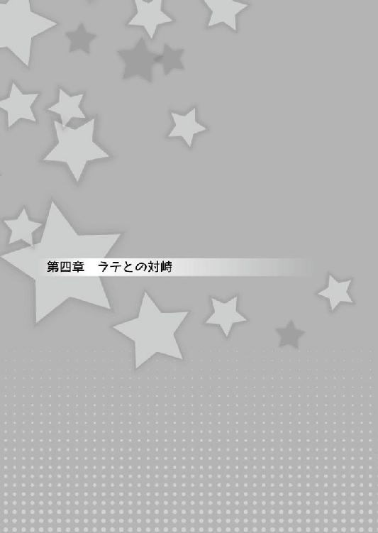
結局あれから、リリアとはギクシャクしたまま、オレ達はキノコニョッキ林を探索していた。
「ていやぁぁぁぁぁぁぁ！」
レーチェの攻撃が、敵のヘンテコモンスターを切り裂いた。
しかも、こっちは無傷の一撃でだ。リリアと戦った時と比べて、レーチェの動きや攻撃は一皮むけたように強くなっていた。
「すごいな、レーチェ。いつの間にそんな強くなったんだ？」
「う〜ん、わからないんですけど、イオくんと過ごしたあの夜から、急に体の調子が良くなりまして......そういう効果があるんでしょうか？」
「そういうことだったら俺も協力するじぇ！ 今夜あたり子猫ちゃんの部屋──」
「──遠慮させていただきます」
ショボーンとしているオットンだけど、うん、まあ当然だよな。
しかし、あの儀式にそんな効果があるのか......。
「それにしても『あの儀式って呼び方』ちょっと面倒臭いなぁ」
「呼び方を考えるんだじぇ？」
「そうだな。体をこすったりするし、その時レーチェが胸がキュンキュンするって言ってたから......胸キュンスクラッチなんてどうだ？」
「わわわ、言わないでくださいよぉ！」
「いいと思うじょ？」
ということで、あの儀式のことは胸キュンスクラッチと呼ぶことになった。
「あ......あの......イオ......」
「え？ ......ど、どうしたんだ、リリア」
なんだか、久しぶりにリリアの方から話しかけてきてくれた気がするな。
気まずそうに視線を彷徨わせているけど、やがてオレの方を向いて、
「そ、その......胸キュンスクラッチ？ わ、わたしが練習相手になってあげてもいいかなって......」
「え？」
「あ、ち、違うのよ！ ほら、強くなったりできるんなら、なった方がいいじゃない......。だから......」
「そ、そうですよ！ そうですよね、イオくん？」
「そうだじぇ！ 据え膳くわぬは男じゃないじょ！」
これはきっと仲直り......っていうか、ちゃんと話して、すっきりしたいってことだろう。
それはたぶん、レーチェもオットンも同じで、オレ達のギクシャクした感じを、そろそろ何とかしたいんだろう。
もちろん、オレだっていつもの関係に戻りたいし、返事はもちろん。
『──ヘンタイ！』
「──っ!?」
『イオのヘンタイ！』
な、なんだ？ なんだこの声？
......リリアと、胸キュンスクラッチをする姿を想像したら、なんか......悪寒が走った。
「い、いやだ......」
「え？」
「イオ......くん？」
やっぱりいやだ！ やっぱり無理だ！
女の子の体に触ったら、ヘンタイって言われるかもしれない！
ヘンタイって言われたくない！ ヘンタイって言われたくない！ 女の子にヘンタイって言われたくない！ 女の子にヘンタイって言われたくない！
い......いや、違う。
オレはリリアにヘンタイって言われたくない。
女の子にヘンタイって言われたら、たぶん立ってられない。
でも、リリアにヘンタイって言われたら......きっとそれどころじゃすまないだろう。
もはや一生立てない......心が不能になってしまう。
「こわい......」
リリアにヘンタイって言われるのが怖い。
「い、イオ！ 大丈夫なんだじぇ!?」
「あ、あぁ......ごめん。リリアもレーチェもオットンも......ごめん。なんか......調子悪くってさ」
「平気なんだじぇ？ イオ」
「イオくん......」
心配そうな顔を見せる仲間たち......。
けれど、オレは心の底に眠っていたあの声が気になって、それに反応することができなかった。
「......」
そしてまた......胸キュンスクラッチを断られて、うかない顔をしているリリアのことも、オレの頭の中には入ってきていなかった。
......そんな時だった。
「貴様ら......！ 見逃してやると申したのに、わざわざやって来るとは......なんというドＭじゃ！」
そのＳかＭでしか判断しないセリフは──ラテ！
これは、落ち込んでる場合じゃない。
オレもリリアも今までのことは一度忘れて、声の方へと向き直る。
「あれは......ＳとＭの仕分け人だじょ！」
「ラテ！ また会ったわね！」
「ふむ？ しかも増えておるではないか！ わしらの同族にはＭが多いのか......？」
「あ、相変わらずＳかＭかで判断してるのね......」
「まあ、二回目ともなると慣れてくるな」
「わたし達はいいけど、本人は恥ずかしくないのかしら......」
たぶん、元に戻った時にその反動が一気に来るんだと思うな。
「ラテさんまでおかしく......。いつも面白い冗談を教えてくれる、気さくなリーダーなのに......！」
ああ、この子がレーチェに屁理屈を教えた元凶だったのか。
「一応聞いとくけど、ラテは普段からＭとかＳとか言ってるような子だったのか？」
「いいえ。きっとラテさんも、黒歴史状態のせいで、変なことを口にしているんだと思います......」
「じゃあ元に戻ったら──」
「これは黒歴史確定なんだじぇー」
「あーぁ......やっぱりそうなんだ」
「か、可哀想です......！ 私以外にあんな思い......誰にもさせたくないのに！」
レーチェは口元を隠して、気の毒そうに頭を横に振っている。
うん、彼女も酷かったもんなー。
「黙れ、このドＭ共め！ 人間ごときの味方をするならば、同胞といえど容赦はせぬぞ！ たっぷり調教してくれるわ！」
そう言うと、ラテは空へと舞いあがった。
「ちょっと！ ずるくない？ 攻撃届かないわよ！」
「妖精のモンスター娘ですから、空を飛べるんです。でも、速度はあんまり早くないから」
レーチェがグンと、大きなキノコに向かって走りだし、それを踏み台にして一気にラテの高さにまで舞い上がった。
「すごいじょ！」
「てやぁぁぁぁぁぁぁぁ！」
爪を出して、大きく振りかぶる......が、ラテの手には見えない何かが集まっている。
「気を付けろ！」
言うのが早いか、それは風の塊となって発射され、レーチェに向かっていく。
もちろん、空中にいる彼女に避ける術はない。
──ブオゥゥゥゥゥゥゥゥッ
「キャァァァァァァァ────！」
まともにそれを食らってしまい、レーチェは風に吹き飛ばされる。
「──まずい！」
地面に叩きつけられたら大ダメージだ。
オレはギリギリ落下地点に走り、落下している彼女の体をガシッと受け止める。
「うっぐ！」
「い、イオくん！ ありがとうございます！」
オレがクッションになったおかげか、レーチェはひょいと立ち上がり、再び構え直した。
そして、その間にリリアはラテに向けて──
「このぉぉぉぉぉ！」
何発もの炎を纏った拳を振り回していた。
「あぁぁぁ！ もう！ なんで当たらないのよ！」
ラテはそれをあざ笑うかのように、ヒョイヒョイと避けている。
「ちょっとくらい当たりなさいよ！」
「ふふんっ。おぬしの攻撃に当たってやるほど、ワシはドＭではないからなぁ」
「だったら！」
何か策があるのか、リリアは掌に炎を持ったままグッと屈んだ。
そして大きくジャンプすると──
「はぁぁぁぁぁぁぁぁ！」
その炎の拳を振り回した！
「......」
けど、ラテはそれをヒョイと避ける。
何のことはない。リリアはただ、ジャンプして拳を振り回しただけだ。ぶっちゃけ、あんまり意味がない。
「えい！ この！ 当たれ！ なんでよ！ ちょっと！ これなら！」
ビヨンビヨンとジャンプしながら拳を振り回す姿は、犬が飼い主とじゃれているかのようだった。
「はぁ......おぬしらの攻撃は、放置プレイで平気そうじゃの」
ラテはそう言って、つまらなそうに攻撃を避けている。
「くそっ......せめて地面に下ろすことができればいいんだけど」
「イオ！ いい手があるじょ！」
「本当か？」
オットンは男前な表情のままコクリと頷く。
どんな作戦でもいい、この状況が打破できれば。
「向こうの性格を利用するんだじぇ！」
「性格？ ＳとかＭとか言ってるあれか？ でもどうやって？」
「そんなの、簡単だじぇ」
オットンはニヤリと笑い、その作戦内容をオレに伝えた。
「イオは戦いの最中、目の前に極上のパンティが落ちてたらどうするんだじぇ？」
「放っておくかな」
「なっ!? 何バカなことを言ってるんだお!? 極上のだじょ！」
「放っておくだろうな」
「命を捨ててでも拾いに行くのが男だじぇ！」
オットンは、信じられない......という瞳でオレを見ているが、オレにとってはお前の方が信じられないよ。
「......で？」
「同じことをするんだじょ。つまり、ドＭが目の前にいれば、戦いそっちのけで叩きに来るにきまってるお！」
「決まってないだろ！ 誰もがお前みたいに欲望に忠実だと思うな──」
いや。......あのおかしくなりっぷりから考えると......ありうる。
あのＳとＭのこだわりっぷりは、オットンのパンツへのこだわりと似ている気がする。
......やるだけやってみるか。
「それで、どうやるんだ？」
「やる気になったのかお!?」
「少しでも可能性があれば、それに賭けたいんだよ」
「イオの覚悟、うけとったじぇ！ まずは裸になるんだじぇ！」
「おう！ ......って、え!?」
裸？ こいつ今裸って言ったのか？
「何でだよ！ こんな時にふざけるなって！」
「ふざけてなんかないじょ！ 真剣だからこそ言ってるんだじぇ！ 俺はレディ達の裸が見たいのに、それを言わず、初めからイオに脱げと言ってるということが、どれだけのことかわかっているのかおっ!?」
「う......ぐ......」
確かに......。いつものこいつなら、リリアやレーチェを脱がしたがるだろう。
にもかかわらず、オレを脱がそうとしているのは、それほど真剣だからだ。
むしろ、オレの裸なんて見たくないだろうに、そんなことを言い出すってことは、そういうことなんだろう。
「わ、わかった。で、どうすればいいんだ！」
「裸になって『オレを叩いてください』と叫ぶんだじょ！ すると向こうは、イオを叩くために地上に下りてくるはずなんだじぇ！」
「な、なぁ。全員戦闘に夢中で、無視されるって可能性はないか？」
「あ......あるかもしれないじょ。だったら、無視されないように大きな声を出すんだじぇ！」
「そんな単純な解決法!?」
......バカバカしい気もするけど、オレがリリアとレーチェのためにできることはこのくらいだ！
急いで上半身裸になって、ラテに向かって大きな声で叫んだ！
「ら、ラテェェェェーーーー!!」
「む？ 何じゃＭの人げ──なっ!?」
「イオ......？ って、何やってるの!?」
「イオくん!? な、何で裸なんですか!?」
戦っている三人が三人とも、オレの方に目を向ける。
とりあえず目を向けさせることには成功だ！ そして続けて──
「お、オレをたたいてくれぇぇぇぇぇ────!!」
そう思いっきり叫ぶ。
「......はは......ははははははっ！ ドＭの人間よ！ ふむ、ワシのＳ性にあてられたか！」
よしっ！ 興味を持ってくれたか！
バカバカしい作戦だけど、結構うまくいきそうだ！
「ラ、ラテ！ オレを叩いてくれ！」
「ふふっ！ ふはははっは！ ドＭの人間よ！ このワシが、叩かれるのを望んでいるＭを即座に叩くと思っておるのか！」
「え？ いや......」
何のことだ？
「一流のＳは、一流のＭしか叩かんのじゃ！」
「な......！」
「貴様のようなド三流のＭが、このラテ様に叩いてもらえると思ったら大間違いじゃぞ！」
「な、なんだって......」
別にオレは、ドＭじゃないし......一流のマゾになる気なんてないけど......ないけど。
なんでこんなに悔しいんだよ！
「貴様は叩くにあたいせん！ 出直してこい！」
「く......くそっ！」
作戦は失敗に終わった......。
「イオ......わたし時々蹴ったりしたけど、嬉しかったのね」
「イオくん、そういう人だったんですね」
残ったのは、仲間二人からの誤解のみだ。
「惜しかったじょ。イオがもっとＭだったら成功していたはずだじぇ」
くそ......確かにそうかも。信じられないことに、狙いはそこそこ合ってたのに......。
「ふんっ！ おぬしらも所詮、ただのドＭだったようじゃの」
く......なんとかならないのか！
そう思った瞬間。
──ブウォォォ！
「つっ!? な、なんじゃ！」
「わ、私の攻撃があたった？」
いや、違う。今のは風を纏った攻撃。
その攻撃の主は......
「てやぁぁぁぁぁぁぁぁぁぁぁぁ！」
──レーチェだ！
「レーチェ!? いつの間に！」
「リリアちゃんとイオくんが誘導してくれたおかげです！」
「え？」
いつの間にか、ラテは数本の木の中心にいた。レーチェはその木のうちの一本に立っている。
......もしかしてだけど、リリアが振り回した攻撃を避けてるのと、オレの『ドＳおびき寄せ作戦』が、ちょうどレーチェにとって都合のいい場所にラテを動かしたのかもしれない。
なんとなくリリアと目が合ってしまい、お互い「？」とクエスチョンマークを浮かべた。
まあ、それならそれでいい。なんにせよレーチェの戦いやすい場所に移動できたんだ。
「行きますよ、ラテさん！」
レーチェは木の上から踏み込む様に、勢いをつけると──
「やあぁぁぁぁぁぁぁぁぁぁぁぁぁぁぁっ!!」
ラテに向かって大きく跳躍した。
なるほど。この高さ、この位置ならラテの所に届く！ さすがネコマタのモンスター娘、木の上を地面の様に移動している。
「くっ！」
──ブオォォォォウ！
風を纏ったレーチェの爪が、ラテをかすめる。が、動きを止めるには至らないみたいだ。
しかし、レーチェは次の木に着地すると、揺れる木の反動を利用して再びラテに攻撃を繰り出す。
「......くっ、わしの力、思い知るがよい！」
だがラテは、風の魔法を繰り出し、レーチェの風属性の攻撃にぶつける。
──バシュゥゥゥゥゥゥゥ！
「くっ！ やるではないか......貴様ら、ただのドＭではなさそうじゃな！」
「だから、わたしはえむじゃないって言ってるじゃない！」
論点はそこじゃないような......。
「これならいけるか？」
「難しいと思うじょ」
「オットン!? なんでだよ？」
「こっちはスキルを連発してるのに対して、向こうはただ飛びながら避けてるだけだじぇ。こっちがじり貧になるのは、目に見えてるんだじょ」
う......確かにそのとおりだ。オットンのくせに、すごくまともな意見だ。
「──はぁ──はぁ！ あ！ 外れてしまいました！」
こいつの予想どおり、レーチェは肩で息をし始め、集中力も切れてきている。
顔にも疲労の色が............ん？
「......もしかして」
レーチェはそれを続けながら、ちらちらとリリアに視線を送っている、そしてまた、別の場所にも......。
「わかった！」
オレは、それに気が付いていないリリアの元に走る。
「リリア！ 聞いてくれ！」
「い、イオ!? 危ないからもっと後ろの方にいなさいよ！」
「いいから！ レーチェの合図......気付いてるか？」
「......合図？」
やっぱり気が付いてなかったみたいだ。
「さっきからリリアと、ある場所に視線を送ってるんだ」
「あ、ある場所？ 何よそれ？」
レーチェの視線の先にあったのは、一際大きく、背の高いキノコ。
「あれだよ！ あのキノコに乗って攻撃すれば、リリアでも届くだろ」
「なるほど、わかったわ！」
それを聞くと、リリアはラテに感づかれない様にゆっくりと移動を始めた。
イオにアドバイスをもらったわたしは、レーチェの視線の先へと移動を開始する。
するとレーチェもそれに気付いたのか、コクリとわたしに頷いてみせた。
「ふんっ！ ドＭな娘どもよ、それでは当たらんぞ！」
「こ、これならどうですか！」
うん、ラテもレーチェとの戦いに夢中になってるし、コレなら大丈夫！
わたしはそのキノコの近くで待機して拳に炎を纏う。
たぶん、一発では決まらない。だけど地上に下ろすことくらいはできるはずだ。
そうなったらレーチェとわたしで二対一。......それなら勝てる見込みは充分ね。
スーッと息を吸い込み、深呼吸する。そして、その大きなキノコの上へ移動する。
わたしの攻撃範囲にラテが入るまで、あと六歩分！
──五歩分 ──四歩分 ──三歩分 ──二歩分！
よしっ！ あと一歩こっちに近付いたら、ラテにパンチをお見舞いして、その後レーチェとぼこぼこにして、そしてイオに......。
──イオに......。
ふと頭の中に、イオがラテの体を嬉しそうに触っている映像が流れ込んできた。
......昨日の夜、レーチェとしていたであろう行為を......イオとラテがしている。
い、いや......べ、別にいいわよそんなの！ だって、助けるためなんだから、仕方ないことじゃない！
わ、わたしは別に、そんなの気にしてなんか......。
「──リリア！ 前！」
「......え？」
「何を呆けておるのじゃ、ドＭの娘よ！」
しまっ──！
こんなに近くに来てるのに、気が付かなかったなんて！
慌ててパンチをラテに繰り出すけど、それは思いっきり空気を叩くだけの結果になってしまった。
まずい......もう、完全に隙だらけだ。
ラテのサディスティックな笑みが、レーチェの慌てている顔が、オットンの目を見開いた姿が......イオの、必死でこっちに走ってくる姿が......全部、スローモーションで見えた。
ごめんね......イオ。
「吹き飛ぶがいい！」
「きゃぁぁぁぁぁぁぁぁっ！」
高い高いキノコの上から吹き飛ばされ、地面に着く感覚もないまま、わたしは気を失った。
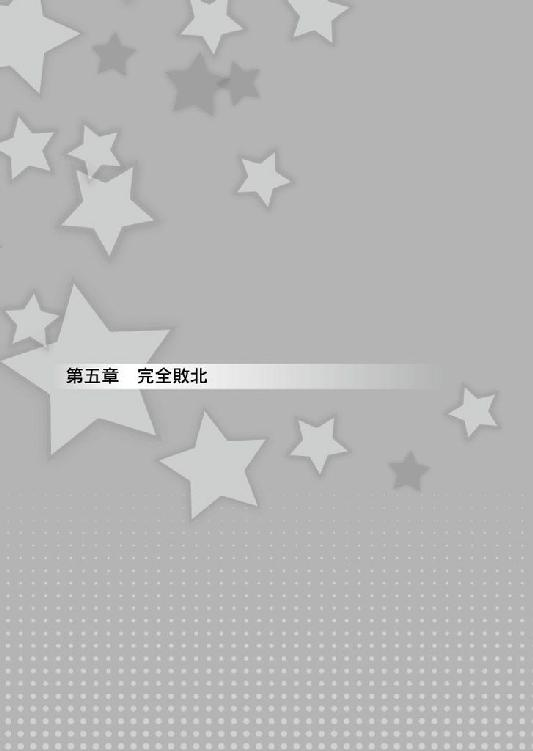
「それじゃあ、安静にしてなきゃだめですよ？」
「うん......わかった」
「無理は禁物だじぇ？ 何かあったら、すぐに呼ぶんだじょ？」
「......ありがと」
レーチェとオットンは、心配そうな表情を見せながらわたしの部屋の扉を閉めた。
......部屋の中は、わたし一人だけだ。
ラテと戦って、目を覚ますとそこは宿屋の部屋だった。
ベッドに寝かされ、横には心配そうにわたしの手を握るレーチェ。
わたしが「ラテに勝てたの？」......そう聞くと、首をゆっくりと横に振った。
......そう、わたしたちは負けたんだ。
喉かわいたな......と、体を起こそうとすると。
「──ッ！」
体に痛みが走った。
......だめかな、しばらく動けそうにないかも。
あの後、わたしはキノコから落ちたものの、地面にぶつかることはなかった。
ギリギリのところで、びっくりすることにラテの風の魔法で助けられたらしいのだ。
ラテが言うには『同胞を亡き者にしては気分がよくないじゃろ。わしとてそれほどＳではないわ』ということらしい。
まあ、命は助かった代わりに、風の魔法のせいで全身にダメージは受けてるんだけどね。
それにしても......助けようとしている相手に助けられるなんて......。
悔しい......。
わたしがあの時......ラテをキノコの上で待っている時に、余計なことを考えていなければ......。
「何をやってたのよ......わたしは......」
バカだ、本当にバカだ。
......イオにも呆れられたかな？
勝手に不機嫌になって、戦闘中も落ち着かなくて......怪我しそうになって、それを敵に助けられて......。
本当に情けない......。何が『イオはわたしが守ってあげるから』よ。わたしが一番足を引っ張ってるじゃない。
......目を覚ましてから、イオはこの部屋に来てくれていない。
「わたし......イオに嫌われちゃったのかな」
気が付くと、枕が少し湿っていた......その理由は明白で。
「わたし、どうしてこんなに泣いてるの......？」
涙がポロポロと勝手に流れていた。
おかしくなったレーチェに、面と向かって『嫌い』って言われた時も、こんなふうにはならなかったのに。
もちろん、あの時だってすごく悲しかった。本当は泣いちゃいそうだった。
でも......イオからは、嫌われたって思うだけで、胸が締め付けられる。
どうしてだろう？ イオもレーチェも大事な友達なのに。
「え......？」
なんだろう、イオを友達だと思ったら......少し、悲しくなった。
......どういうことなの？ わたしはイオを友達だって思っていないってこと？
でも......イオのことは好き。大好き。友達じゃないなんて思えない。
だったらこの気持ちって──
「リリア！ 起きてるか！」
「ふわぁぁぁぁ！ な、いイオ！ え？ ど、どうしたの!?」
なんだかわからない......わからないけど、思いっきり扉を開けて入ってきたイオを見たら、心臓がドキドキしてきた。
「......？ あ、ごめん！ 急に入っちゃって」
なんなんだろう。自分でもこの感情がなんなのか、よく解らない。
すごく胸が高鳴って......自分の心臓が自分の物じゃないみたいに動いてる。
「う......ううん......大丈夫」
「リリア、どうした......？ 顔も赤いけど？」
うぅ......言われてみれば、顔や耳が熱い。なんなんの......これ？
「な、なんでもない......と思う」
どうしたんだろう？ わたし一体どうしたんだろう？
イオを見ると......それがどんどん強まっていって。......わたし、もしかして。
「あ......もしかして、急にドアを開けたからびっくりした？」
............。
......ドア？
「ああ！ 確かにそうよね！ きっとびっくりしたのよ！ もう......女の子の部屋に入るんだから、ちゃんとノックしなさいよね」
そうか、そういうことなのね。わたしはただ単に驚いただけなんだ！
そうよね、泣きそうなところに急に入ってきたんだから、ドキドキするし顔だって赤くなる。びっくりしただけだったんだ。
わたしはてっきり............てっきり......なんだろう？
「悪い悪い、急いでてさ」
「う、うん。──ってイオ、どうしたのその格好！ ボロボロじゃない」
よく見れば、イオの体には無数の擦り傷があって、服もところどころ破れてるし血も滲んでいる。
この前のあれで懲りず、また土手から転げ落ちたりでもしたのかな......？
まったく、手がかかるんだから......。
「えっと......リリア。これ」
「......？ なにこれ、ヘンテコモンスター？」
......どうしてイオがこんなものを？
「いや......宿屋の女将さんに聞いた話なんだけど、近くにいるだけで怪我の治りを早くする珍しいのがいるらしくてさ......。それを探しに」
「え？ だって......レーチェはさっきまでここにいたわよ」
「う、うん......だから、一人で」
皆に臆病者って言われて、全然否定しなかったイオが......一人でヘンテコモンスターを探しに？
「だって......イオ戦えないじゃない」
「オレだって男なんだから、ヘンテコモンスターの一匹くらい余裕......では全然なかったけど、何とかなるよ」
それはわかる......全然余裕がなかったことは、その怪我が物語っている。
「バカッ！ どうしてそんな危ないことするのよ！」
そんなことわかってる......わたしのためだ。それでも、言葉を止められない。
「イオが怪我したり......いなくなっちゃったり、死んじゃったりしたら！ わたし......わたし！」
「ご、ごめん」
「怪我なんて、放っておけばすぐ治るんだから......そんなことしないでよ！」
「それは......そうだけど。でもやっぱり、リリアには早く良くなってもらいたくて」
「だからって、イオまでケガしてどうするのよ！ あなたは戦えないんだから、絶対に怪我するじゃない！」
「......確かに、無謀だったかもな。ごめん......」
ごめん......か。
ううん、本当はイオが謝ることじゃない。......イオを、こんな目に遭わせたのはわたしだ。
ラテとの戦いの最中、イオとレーチェのことが気になって、まるで集中できてなかった。
負けたのも、この怪我も......本当に自業自得で、それでイオに怪我までさせてる。
バカなのは......わたしの方だよ。
「イオ！」
「な、なに？ もうお説教はそのくらいにしてくれると」
「あ......ありがと。本当は......すごく嬉しい」
「へ？」
......すごく......すごく不謹慎かもしれないけど、わたしのためにイオが怪我までして、危険を冒してくれたのが......すごく嬉しい。
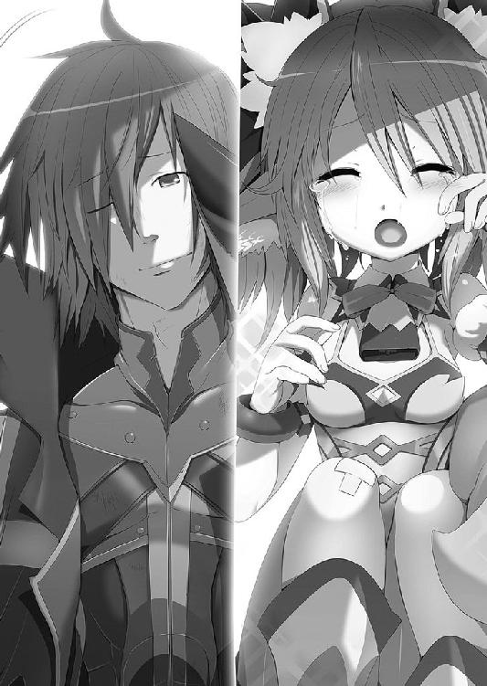
わたしのために......こんなことをしてくれるなんて。
いつの間にか、頼りない男の子から......大人の男になってたんだな......。
弟みたいに思ってきたけど、もう、わたしがあれこれ言わなくても、大丈夫なんだろう。
少し寂しいけど......嬉しい。
「ああ、そう言ってもらえると、がんばってきた甲斐があるよ！」
「ふふっ！ がんばったね、イオ」
そうは思いつつも、やっぱりもう少しの間、お節介を焼いちゃいそうかな。
逆にわたしが弟離れできないのかも......なんて思っていると、顔が自然にほころんでしまう。
「でもリリア、思ったより元気そうで安心したよ」
「......うん。ありがとね」
イオもホッとした様な表情で、柔らかい笑みをわたしに向けた。
「それじゃあ、このヘンテコモンスターはここに置いておくからさ、明日また様子を見に来るよ」
イオが部屋から出て行こうとするけど、わたしはとっさに──
「あ......」
「え......リリア？」
気が付くと......わたしは腕を伸ばし、イオの手を掴んでいた。
あ、あれ？ こんなことするつもりなかったのに......体が勝手に動いて......。
「あ......えっと、その......い、イオにね......ここにいてほしいの」
な、何を言ってるのわたしは......。
でも、そう口から出てしまったことを、否定する気持ちは全くなかった。
うん......わたしは......イオに、ここにいてほしい。
「えっと......それって？」
「ほ、ほら！ イオも怪我してるし、わたしと一緒にヘンテコモンスターの近くにいた方がいいかなって」
「あ......ああ！ そういうことか！」
「そ、そう......。そういうことなの！ ......えっと、だから」
「こっち......来て......」
「う、うん」
オレが寝ているリリアのベッドに腰掛けると、ギシリと音が鳴る。
「ベッド、結構音が鳴るわね。......ここで暴れたら、隣の部屋まで響きそう」
「ちょっ......リリア、何言ってるんだよ!?」
「......？ 何のこと？」
うぅ......何の意味もなくそう言ったのか。ベッドの上で暴れるって......そういう意味かと思ったじゃないか。
やっぱり、リリアにとってオレは弟みたいなもんなんだろう。
「はぁ......」
「なに溜息ついてるのよ？」
「なんでもないよ......」
......あれ？ なんでオレ、ちょっと残念だって思ってるんだ？
まあいいや......。
「あ......あのね、イオ。お願いがあるんだけど。いいかな？」
「お願い？ うん、オレにできることならいいけど」
リリアは少し視線を逸らすと、小さく口を開けて──
「イオ、わたしに......して」
そう呟いた。
「えっ!? し、してって......な、何を？」
「えっと......レーチェと同じことを......わたしにも」
う？ い、いったいどれのことだ？
オレが困惑しながら、頭上にクエスチョンマークを大量に出していると、それを察したリリアが頬を膨らませた。
「レーチェと、そんなに色々してるの？」
「い、いやそんなことないけど。......具体的には......どういうこと？」
「うん......この前、イオがレーチェの部屋に行った後から、あの子すごく調子がよさそうじゃない。だから......あの日レーチェにしたことを、わたしにも......」
あ......。レーチェを元に戻した儀式を、試しにやってみた時だ。
確かにあの後から、レーチェはすごく調子がよさそうだったなぁ。
もしかして、黒歴史状態の印を消す以外にも、効果があるのかもしれない。
「えっと、あの時は......レーチェの体をさすってあげたんだ」
「さ、さすって......？ それであんなに調子がよくなるものなの？」
「うーん。熱い思いで黒歴史状態の印を消したわけだし、それが無い状態ですると、その思いが体に入っていくんじゃないかな？ ......あくまで想像だけど」
そもそも、なんで黒歴史状態の印を消せるのかもわからないしなぁ。
「わ、わかった......それじゃあ、わたしにも同じことをして」
「い、いいのか？ レーチェの黒歴史状態の印を消した時みたいに、色々なところを、さすったり触ったりするけど」
「わ、わたしだって、恥ずかしいんだからねっ！ で、でもそれで調子が良くなるなら、ラテを倒すためにやらなきゃだし！ モンスター娘を助けなきゃだし！ そのために旅立ったんだし！」
そうか......そういうことならしておいた方がいいかもなぁ。
「それに......レーチェだけずるい。しかも二回もしてて......」
「ん？ 何か言った？」
「な、何も言ってないわよ！」
呟くように何かを言ってたから、全然聞き取れなかった。
......なんだったんだろう？
「で、でも、その......オレでいいのかな......？」
「イオだからいいの......。その......だから......む、昔からよく知ってる相手だし！ イオなら信じられるから！」
「リリア......」
「あたし、世界のために一肌脱ぐわ！ だから協力して、イオ！」
リリアの覚悟が伝わってくる......。
うん、それじゃあオレも覚悟をしないと......。
「ああ、わかったよ」
「お......お願い......イオ」
......とは言ったものの、どうすればいいかな？
「や、優しくしてよね......？」
「わかってるよ」
「あんまりヘンなとこ触ったり......痛くしたら、お、怒るから......」
えーっと、とりあえず......一番気持ちのいい所は......ここかな？
「ふっ......ひゃぁっ」
「ご、ごめん、痛かったか？」
「あ、大丈夫......。ちょっとくすぐったかっただけ。もっとちゃんと触って？」
「じゃあ......」
「ぅん......もっと......あっ、そんな触り方......ダメッ、だって......！ ああっ、だ、だめだって......あぅぅ......なんかヘンな声出ちゃうぅ......！ も、もう、ダメェ......！」
リリアの表情が、少しずつ心地がよさそうなものへと変わっていく。
うん、触っているこっちもこっちで気持ちがいい。
「はー、リリアの尻尾はモフりがいがあるなぁ......」
けど、その尻尾で軽くパシパシと叩かれる。
「ん？ なに......？」
「ほ、他の所も......さすりなさいよ」
う......そんな顔で言われたら、何も抵抗できない。
「それじゃあ......」
フカフカな耳に触れて、もう一度尻尾でモフろうと指を下げていく。
「はうぅぅぅ〜〜〜〜〜〜！ せ、背中くすぐったい......なんか、ゾワってくるよ」
あ......どうやら無意識に背中をなぞっていたらしい。
......ここはここで、スベスベしてて気持ちいい。
あー......そういえば、リリアのモフモフっとしてる部分はよく触らせてもらうけど、そうじゃない所ってあんまり触らないなぁ。
モンスターチックな部分は触ってるけど、女の子である部分はやっぱり照れくさい。
でも......今回は触った方がいいんだろうな。
「リリア......オレ、リリアの女の子の部分を触るよ」
「え？ ちょ、ちょっとイオ......え？ え？ え？ 女の子の部分!? だ、だめだめだめ！ い、イオならいいけど......ああ！ よ、よくないけど！ そこは色々と、手順を踏んでからじゃないといけないところなの！」
「......手順？ たとえば？」
「き......キスとか......かな？」
顔を真赤にしてそう答える。
っていうか......な、なな、なんでキス？
「と、とにかく......雰囲気とか......心の準備とか......女の子にはいろいろあるの！」
そ、そういうもんなんだなぁ......。
「えっと......一応言っておくと、モフモフした場所じゃなくて、素肌が見えてる女の子らしい所を触るってことだからな」
「え......？」
リリアはキョトンとした表情を浮かべると、顔が信じられないくらい赤くなって、そのままベッドの枕に顔を押し付けた。
「あぁぁ〜！ もう！ イオの言い方が悪い！ わたしは何も悪くない！ うぅぅぅ〜。もうやだ！ 恥ずかしくて死んじゃう！」
ど、どうしたんだ......リリア。
顔を上げそうにないので、もう一度背中に指を這わせてみる。
「ふわぁぁぁぁ！ ちょ、ちょっとイオ！ あ、やだ......尻尾の先っぽそんなにしたら！ ──だ、だからって付け根を触ったら......っていうか付け根って......その......」
柔らかい感触が手に広がる。
それが恥ずかしかったのか、今度はリリアがあおむけになった。
「あっ、やっ......そ、そこも......触るんだね！ はんっ！ ちょ、ちょっと、そんな風にゆっくりされたら......焦らされてるっていうか......もどかしいっていうか！ あ、だからってそんなに早くは......あ、や、やぁぁぁ！ イオぉ......！ ホンろにそれ、だめだからぁ......ふわ、ふわぁ！ ふわぁぁぁぁぁぁぁぁぁぁぁぁぁぁぁぁぁぁぁぁぁぁ！」
「それじゃあ、お休みリリア」
「あ......待ってイオ」
リリアに呼び止められて、部屋を出る寸前に軽く振り返る。
「ん？ どうしたんだ？」
「......あ、ありがと。イオも......男性として頼もしく思える様になってきたわね」
「え？ そ、そうかな？」
相変わらずヘタレで......全然弱いし、何も頼りがいなんてないと思うんだけど。
......なんでそう思ったんだろ？
「あ......あのね。わたしが眠るまで、ここにいてもらっていいかな？」
「え？ ......別にいいけど」
リリアがそんなことを言うなんて珍しい。むしろ「怖かったら一緒に寝てあげるわよ」とか言ってたのに......。
「うん......ありがと。それじゃあ、お休み」
「ああお休み。ランプ、消しとくからな」
「うん」
真っ暗になる寸前に見た彼女の笑顔は、いつもオレの面倒を見てくれていた、お姉さんのような表情のリリアでなく......なんだろう。......今までずっと一緒にいたオレでさえも、ドキッとしてしまうような可愛らしい笑顔だった。
その笑顔を思い出しながらドキドキしつつも、彼女の寝息が聞こえる頃、オレは部屋を後にしたのだった。
──カタ──カタカタカタカタ！
「──スゥ──スゥ......ん......む......？」
眠ってから......どれくらいたったのかな？
真っ暗な部屋の中で物音が聞こえて、わたしは目を覚ました。
「イオ？ ......まだいてくれたの？」
......よくよく考えると、無防備な寝顔を見られてたのよね。......うぅ......恥ずかしい。
っていうか、変な寝言とか言ってなかったかな!?
う、うぅ......聞くのが怖い。
──カタカタカタカタ！
「それにしても......何の音？」
真っ暗で何も見えないし......。
あ......そういえば、体の痛みが取れてる。イオのヘンテコモンスターのおかげかな。
とりあえずそれに手を伸ばしてみると。
「あれ？ いない？ どこに行ったんだろ？」
まあいいか。様子を見てると、害の無さそうな子だしね。
わたしは再びお布団に体を預けて、ゆっくりと目を閉じた。
──ズズズズズズ！ ──ボフ！
「ん？ 何かお布団にのった？」
イオが座り直したのかな？
まあ、イオなら変なこともしてこないだろうし、大丈夫ね。
そうしてわたしは、まどろみの中に落ちていった。
──この時、わたしの体に何が起きていたのか......全く知らずに。
「イオくん、朝ですよ。今日も張り切っていきましょう！」
「ん......うんぅ......」
体を揺すられ目を覚ますと、ベッドの横にはレーチェがいた。
「おはよう」
「おはようございます。もうお昼近いですけど、昨日は遅くまで起きてたんですか？」
「え......う、うん。まぁね」
結構遅い時間までリリアの部屋に行ってたけど......なんかその事実だけ言うと、変な誤解が生まれそうだし。
「......？」
オレはベッドから起き上がって、ふぁぁ〜と大きなアクビをする。
うん、昨日の怪我もほとんど治ってる。
「それじゃあ朝ご飯......にはちょっと遅いですけど、ご飯を食べに行きましょう？」
「うん......そうだね。うぅ......まだちょっと眠気が残ってるな」
「それでしたら、特性のダシティーを用意しておき──」
「──あ、なんか急に目が覚めた、うん、ダシティーは大丈夫」
「そうですか......？」
ちょっと残念そうな顔をしてるけど、あの味はどうしてもなぁ......。
特に朝からあの生臭さは。
食堂で、レーチェとオットンと一緒のテーブルに座る。
「子猫ちゃんが一人足りないお。何かあったんだじぇ？」
「いや、まだ寝てるんじゃないのか？ オレより早くは寝てたけど、それでも遅かったからなぁ」
「......？ なんでイオくんが、リリアちゃんの眠った時間を知ってるんですか？」
「えっ!? それはえっと......」
「も、もしかして......イオくん、リリアちゃんの部屋に──」
まずい......夜中までリリアの部屋にいて、あまつさえあんなことをしてたって知られたら、ヘンタイ扱いされるかも！
「ふふん！ なるほど、謎は全てとけたじょ！」
「なっ!?」
何を言い出す気だこいつは!?
でも......逆に考えると、何も言い訳が思いついていないオレにとって、これは渡りに船かもしれない。オットンの言ったことが、昨日の事実と離れていれば、それに乗っかればいいわけ完成だ！
がんばれオットン！ いいストーリーを期待してるぞ！
「イオが女の子の部屋に一人で行くわけがないじょ！ つまり──」
よしっ！ 今のところいい感じになってる！
「──きっと、子猫ちゃんの部屋をノゾキ見してたんだじぇ！」
「ちがうわぁぁぁぁぁぁぁぁぁぁぁぁ──────────!!」
まるで役に立たないな！ こいつ！
「ということは、やっぱりイオくんはリリアちゃんの部屋に──」
うぐ......やばい、ばれたか！
「──お見舞いに行ってたんですね」
「う......うぅ？ おみ......まい？」
......そうだ、そのとおりだ！
「そ、そうだよレーチェ！ お見舞いだ！ お見舞いに行ったんだよ！」
っていうか、元々初めはお見舞い目的で行ったんだよ。
それがあんな感じになって......何だか人にはあまり言いたくない感じの状況に。
はぁ......それにしても......
「レーチェはいい子だなぁ」
「ふぇ!? な、なんですかいきなり？」
一番最初にそれを思い浮かべるなんて......本当にいい子だ。
「うん、まあそういうことで、お見舞いに行ってて遅くまで起きてたんだ。夜中に女の子の部屋に行って、変に思われるかもしれないけど、その......いかがわしいこととかは全然ないからな」
「ふふっ、心配しなくても大丈夫ですよ。優しいイオくんが、怪我をしてるリリアちゃんに、変なことをするなんて思ってませんから」
あぁ、やっぱりレーチェはいい子だ。
「でも、怪我をしてるからこその変なこともあるんだじょ？ あーんしてあげたり、汗を拭いてあげたり、トイレを手伝ってあげたりとか......夢が広がるじぇ！」
......サイテーだな、こいつ。
レーチェも苦笑いしつつ、オットンとの距離を広げている。
「お？ 噂をすれば影だじぇ！」
「ん？」
オットンの視線の方に目を向けると、リリアの顔が半分だけ見えていた。
「リリアちゃん、おはよう」
「おはようリリア。......なんで柱に隠れてるんだよ？」
「お、おはよう......二人とも」
......？ なんでかわからないけど、彼女は全身を見せない。
なんだかモジモジしていて、こちらに来にくいようだ。
......もしかしたら、昨日のあれを意識しちゃってるのかもな。
もちろん、オレだって意識してるけどさ。だけど、そんなにあからさまにしてたら、変に思われるだろ。
「どうしたのリリアちゃん？ こっちにおいでよ」
「これから朝ごはんだから、みんなで食べようぜ」
そう言うとリリアはコクリと頷き、オレ達の前に姿を現した......が、手には何か大きなものを持っていた。
「リリア......それって？」
「......」
なんだか気まずそうに視線を逸らす。
そんな彼女が手に持っているのは、金色のタマゴだ。
「それ、リリアの朝ごはんか？」
首を横にフルフルと振っている。
「そもそも、それは何のタマゴなんでしょうか？」
「ああ......確かに、見たことないな」
その問いに対して、リリアが口にしたことは......とんでもないことだった。
「わ、わたしの......」
「ん？」
「わたしの......タマゴ」
「はい？ えっと......リリアちゃん？」
リリアは顔をこれでもかってくらい赤くすると、潤んだ瞳でオレを見ながらこう答えた。
「昨日......イオとした後で......わたし......タマゴ産んだの」
──カシャーン！
「れ、レーチェ？」
レーチェの持っていたダシティーの入ったカップが、テーブルに落下して......割れた。
「イ、イオくん！ ああああああれは！ あれはいったい！ ななななんなんですか!?」
「ちょ、ちょっと待って！ オレだって聞きたい！ オレだって聞きたいよ！」
は？ どういうこと？ オレはあのタマゴのパパになるのか？
いや！ いやいやいやいや！ そんな覚えないって！ そこまでのことはしてないはずだろ!? 何がどうなってるんだよ!?
「ちょっと待って！ それ......オレ、本当に覚えが無いんだけど......」
「あ......そ、そっか。うん、そうだよね。......イオにはまだやらなきゃいけないことがあるもんね。大丈夫......わたし一人でも立派に育てるから。この子には、お父さんは......立派なお仕事のために......今はいないって説明しておくから」
「い、イオくん、覚えがないなんてサイテーです！ リリアちゃん、協力できることは私もするから」
「イオ......男であるからにはヘンタイであってもいいじょ！ ただ、責任を取らないのは男として最低だじぇ！」
「えぇ〜......」
何それ......完全にオレが悪者じゃないか......。
だって、本当に覚えがないんだよ！ な、何でこんなことになってるんだよ！ むしろ世界平和なんか放りだして、平穏無事な家庭に入るのを望んでるのは、むしろオレの方だよ！
「な、なんなんだよぉ〜......」
オレが途方に暮れていると......。
──ピシ
「......あ、タマゴにひびが入りました......」
「新しい生命の誕生だじょ。神秘の光景だじぇ」
「うぅ......な、なんか恥ずかしいな」
こ、これでもしオレにそっくりな子でも産まれたら、完全にオレは言い逃れできなくなる。
たとえそれが事実じゃなくてもだ。
「イオくん、パパの責任として......一番最初に顔を見てあげてください」
「う......うぅ」
恐る恐る、割れるタマゴの中を覗き込むと......。
「......は？」
......そこにいたのは......いや、あったのは......オレにもリリアにも似ていなかった。
これは、まぎれもない──
「パンツだ！」
──パンツだった。
オレは......パンツのパパになった!?
「イオ......頭がおかしくなったんだじょ？」
「何を言ってるんです、イオくんは？」
そして二人も覗き込むと──
「パンティだじぇ!?」
「パンツです!?」
やっぱりパンツだった。
「え？ 三人とも何言ってるの？ だってこれ、まぎれもなくわたしの産んだ......」
そう言ってリリアも覗き込むと──
「パンツじゃない!?」
まぎれもなくパンツだった。
オレ達四人は......ただただパンツを前にして、呆然とそれを眺めているだけだった。
あれから数時間、オレ達はパンツを前に頭を悩ませていた。
「どういうことなのかしら？」
「どういうことなんだ？」
「どういうことなんでしょう？」
「このパンティは、貰っていいんだじぇ？」
一人だけ、別のことを考えてるみたいだけど......。
とりあえず触ってみると。
「うん......すごく手触りがいい。他のパンツを触ったことがあるわけじゃないけど、たぶん普通のパンツだ」
「......うーん。これは普通じゃないかもしれないわよ」
「普通じゃない？ なにか秘密でもあるのか？」
「すごく高級な素材が使われてますね。デザインも......すごくいいです」
「え？ そういう意味で？」
なんかとんでもない秘密が隠されてるのかと思ったら......。
それにしても、何があってタマゴが産まれただんだろう？
「あれ？ そういえばヘンテコモンスターはどこに行ったんだ？」
「......俺のことかお？」
「いや、オットンのことじゃなくてさ。昨日、珍しいヘンテコモンスターを捕まえてきたんだよ。近くにいたら怪我が早く治るって奴をさ」
「ああ......そういえば、朝になったらいなくなってたけど」
そうか。せっかく捕まえてきたのに、いなくなっちゃったのか......。
「もしかしたら、それが原因なんでしょうか？」
「......？」
「その珍しいヘンテコモンスターの影響で、リリアちゃんの体に、何かしらの変化があったのかもしれませんね」
確かに、今まで見たこともない奴だったし、可能性はあるかもな。
「それじゃあ、イオは関係ないんだじぇ？」
「そうですね。......あったとしても、さすがに二人の子供がパンツだということは無いと思うので、タマゴのパパはイオくんではないのかな......と」
「ふぅ......よかった」
さすがに、してもいないことの責任はとれない。
「で、このパンツ......どうする？」
「名案があるじょ！ これに勝る案は、どうやっても出てこないと思うんだじぇ！」
「却下だ」
「却下ね」
「却下でしょうね」
三人とも同じ意見だ。っていうか当然の結果だ。
こいつとパンツが合わさったら、いうことなんて一つしかない。
「お前ら、俺はまだ何も言ってないじょ!? ちゃんと最後まで聞くんだじょ！」
いや言わなくたってわかる。こいつが欲しがるだけだ。
「レディのどちらかが、このパンティをはいてみるんだじょ！」
「「「......え？」」」
驚くことに、三人の声がきれいにハモッた......。それほど意外な意見だ。
何で欲しがらない？
「ど、どういうことだ？ どういうことなんだ!?」
「どういうことも何も、パンティはレディがはくのが常識だじぇ？」
「......う、いや。確かにそうなんだけど」
なんだろう、納得できるけど全く腑に落ちない。正論なのに間違ってる気がする。
「あ、あの......オットンさんのことですから、自分がもらうとか言い出すのかと......」
「わ、わたしもそう思ってた」
オットンは短い腕をちっちっちっと横に振る。
「自分がいるべき場所に収まるのが、その物にとっての幸せだお。パンティはレディを包み込むのが仕事だじぇ。そこにいるのが一番美しいんだじょ」
いやまあ......そうだけど。
「......なんか微妙に哲学的なのがイラッと来るわね」
「確かに......ちょっと尊敬しちゃいそうだ」
しかし、パンツのことで尊敬するとは。......いや、そのくらいでしか尊敬できることが無いのがこいつか。
そしてオットンは、ハードボイルドな表情をして。
「そして、その役目を終えた子達を、優しく癒すのが俺の仕事なんだじぇ！」
そう高らかに叫んだ。
「......あ〜......」
「つまりそれって、使用済みの下着が欲しいってだけじゃないのか？」
「そうとも言うじょ」
「......結局それなのね」
ほんのちょっとでも尊敬したオレ達がバカだった......。
と、レーチェがパンツに触れながら、何やら考え込んでいる。
「レーチェ？ どうかしたのか？」
「あ、あの......リリアちゃん。これ......ちょっとはいてみない？」
「はぁ？ ど、どうしたのレーチェ？」
「使用済みをくれるんだじょ!?」
「ほら、リリアちゃんも触ってみて」
レーチェにしては珍しく、完全にオットンを無視してる。
「な、なによ。えっと、こう？ ......──あれ？」
「感じませんか？」
「......うん。なんか、力が流れ込んでくるような気がする」
「え？ ......なんだよそれ？」
リリアもレーチェも、真剣な顔でそう言っている。ふざけている様子ではなさそうだ。
「イオくんも触ってみますか？」
「い、いや......さすがに女性の下着に何度も触るのは......」
恥ずかしいし、オレが触るとオットンも触りそうだから遠慮しよう。
「何だろう。これ、普通のパンツじゃないわ......」
そしてリリアは、それを手にとった。
「なんて言えばいいのかな？ 斧をナイフに持ち替えたような......別の子の服に着替えたような......そんな感じ」
「私はそこまで感じませんが......確かに別の自分の可能性がみえる気がします」
オレ達には全然わからない......。けれど、目の前のパンツに、二人とも何かを感じているようだ。
金色のタマゴから産まれた不思議なパンツだ。もしかしたら何かあるのかもしれない。
「はいてみたらいいんじゃないか？」
「そうですよ。このパンツ、きっと何かあるから」
「そ、そうかな？」
「そうだじぇ！ これがどんなパンティであろうと、一度は足を通すのが礼儀だじぇ！ さあ！ さあ！ さあ！ パンティを身に着けるんだじぇ！」
「......」
「お前が言うとヘンタイ的だからやめろ」
オットンに余計なことを言わせないようにして、リリアの反応を待つ。
リリアはしばらくパンツを見ると、それをグッと握りしめた。
「わかった。わたし、はいてみる！」
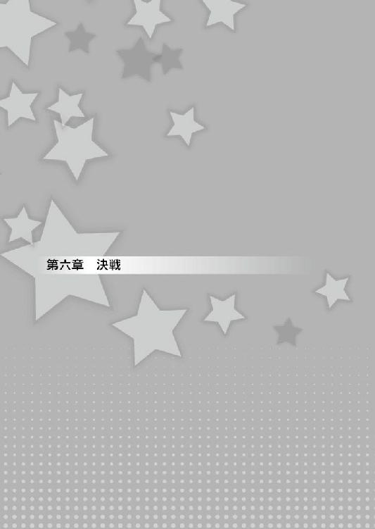
有象無象に生えているキノコの林。
あるものは胞子を吹き出し、あるものは自然物とは思えないような色をしている。
その中で一際大きく、異彩を放ち、人が乗れるほどのキノコ......。
彼女はそこにいた......。
相変わらずＳっ気のある笑いを浮かべながら、こちらへと視線を向けた。
「......誰じゃ？」
彼女に問われて、オレ達は姿を見せる。
「......ふむ、お主らか。なんじゃ？ ワシの奴隷にでもなりに来たか？」
その質問に対し、オレ達は構えをとった。
「ふぅ......懲りんようじゃの。さすが筋金入りのドＭどもじゃ！」
ラテはニヤリと笑い、こちらに向けて掌をかざした。
ラテとの二回目の戦闘......。もう負けるわけにはいかない！
「リリア！ レーチェ！ 頼むぞ！」
「二人とも、がんばるんだじぇ！」
「わかってる！」
「今度こそ倒します！」
「ふっ......こい！ ドＭどもよ！」
こうしてオレ達の、二回目の戦いは幕を開けた。
「ふん......結局同じ目に遭うだけじゃ！」
ラテは羽音を響かせると、この前と同じように空高く舞い上がった。
「行くよ、レーチェ！」
「うん！ 気を付けてね！」
リリアが全力で走ると、周りのキノコの胞子が巻き上がる。
──速い！
今までのリリアと比べて、明らかに速度がアップしている。
そしてキノコを二つ三つ駆け上り、一気に宙へ舞った。
「何じゃと!?」
その速さに驚き、一瞬怯んだラテは避けるために構えを解き、防御体勢へと構えを変えた。
「てやぁぁぁ！」
大きく振りかぶって拳を繰り出す。
けど、防御体制のラテはギリギリでそれを回避する。
「......な、なんじゃ？ この前とはまるで違うではないか？」
「ふふっ！ オレ達だって、いつまでもＭじゃないってことだ！」
オレはニヤリと口角を上げて、そう返してやった。
「イオ......あんまりうまくないわよ」
「イオくんのそのセリフも、きっと思い出すと、あぁぁぁぁぁってなりますよ」
「Ｍはどんなにがんばっても、結局はＭのまんまなんだじぇ？」
「うぅ......」
ラテに言い返してやろうとずっと考えてたセリフだったのに......思ったより不評だ。
けど、ラテは楽しそうに笑っている。
「ただのドＭとばかり思うておったが、おぬしは両方いける口なのじゃな......ふむ、気に入ったぞ！」
「......気に入られたみたいよ、イオ？」
「あ、ああ......」
光栄のような......そうでないような......。
「無駄話はこのくらいにして、次のいくわよ。レーチェ」
「そうですね。次はあれでいきましょう」
リリアは再び構えて、ラテに向かってダッシュを決める。
「くっ！ この短期間で、なぜこんな速さを！」
大きく跳躍をしたリリアに対して、ラテはさらに上昇して逃げようとする。
そう......ラテの言うとおり、リリアはこれまでにないスキルを手に入れていた。
それを手に入れた理由は──
「な、何このパンツ──」
宿屋の部屋で、パンツを穿き替えたリリアは驚きの声を上げた。
見た目は、ただパンツが変わっただけだけど......その表情は自信に溢れている。
「だ、大丈夫か、リリア？ どうなんだ？」
「うん......パンツから力が流れ込んでくる感じよ」
「力が流れ込んでくる......どんな感じなんだろう？」
「レーチェもはいてみる？」
「お、女の子同士でも、パンツの交換はちょっと恥ずかしいかな......」
「俺もはいてみたいじぇ！」
「お前、パンツはいてないだろ」
「巻きつければいいんだじぇ！」
ああ、そういえば首に巻いてるのはそうなんだよな。
......だからといって渡すわけはないだろうけど。
「それで、何がどう変わった感じがするんだ？」
「そうね、パンツから伝わってくるのは......すごく速く動けそうなのと、風に対する耐性があるような感じかしら？」
「風に対する耐性......。ラテさんは風属性のスキルを使いますから、かなり有利になりますよ！」
「うん、確かにそうね。でも......」
「......？ でも？」
「こっちの攻撃は、相変わらず届かないのよね」
「あ......」
そう、問題はそこだ。
空中にいるラテには攻撃が届かない。遠距離の攻撃をしかけても、軽く避けられてしまう。たとえ当たったとしても、それが決定打になりそうもない。
「このパンツだけじゃ、ラテには勝てないかもしれないわね」
「そ、そういうことでしたら！ わ、わ、私も！ う、産んだ方が、い、いいのでしょうか！ い、イオくんにお手伝いしていただければ！ わ、私だって！」
「いや、これだけでもなんとかできると思う」
「そ、そうですかぁ......」
レーチェが耳を伏せてしょぼんとしてしまった......。なんでだろ？
「それで、イオ。何とかなるって、どうするの？」
力が流れ込んでくるパンツ......。
きっとタマゴから生まれたパンツや、モンスター娘が身に着けているパンツ。これらのパンツには何かしらの力が宿っているんだろう。
たぶん、パンツを変えれば様々な能力を手に入れられるんだろう。
今リリアにあるのは『速さ』と『風耐性』の二つ。
「だったらさ──」
空に逃げたラテを、リリアは大きな跳躍で追う。
「ふっ！ その程度では届かぬわ！」
「......」
が、やはり途中で失速し始め、ラテの所までには届かない。
......けれど。
「リリアちゃん！ 行くよ！」
レーチェが風の塊を掌に集めて、それをリリアに向けた。
「なんじゃ？ 仲間へのＳ行為か!?」
そしてそれが発射されると、リリアの足の裏に当たる。
「よしっ！ ありがと、レーチェ！」
リリアはその風の塊を足場にして、さらに上空へと跳んだ。
「なんじゃと!? バカな！」
そう、風属性の攻撃を持っているのはラテだけじゃない。レーチェも持っている。
その攻撃をリリアにぶつけて、上空へと吹き飛ばしてもらった。
パンツのおかげで風耐性が付いているため、大したダメージを受けない。
「はぁぁぁぁぁぁぁぁぁっ！」
ラテに追いついたリリアは、拳を彼女に思いっきり叩きこんだ。
「うっ......ぐぅ！」
けど、空中で踏ん張りがきかないのか、大したダメージがあるようには見えない。
「まだまだぁぁぁぁぁぁ──────！」
「なっ!? あ、危ないじゃろ!? お主のＭにワシを巻き込むな！」
一撃目のダメージがあまりないと判断したリリアは、ラテを掴んで、そのまま二人で地面に落下を始める。
が、それも計算どおり。
「我慢してね、リリアちゃん！」
レーチェの作った風の塊が、二人の落下点に投げ込まれる。それがクッションとなり、落下のダメージはほぼ相殺されていた。
「くっ......なんて無茶なことをするんじゃ」
ラテは舞い上がったキノコの胞子を払いながら、コホコホと咳をしている。虚を突かれたのが地味に効いたのか、Ｓっぽい表情から余裕が消えていた。
それに比べ、リリアもレーチェもここまで作戦の内なので、余裕がみえる。
「これでやっと地上で戦えるわね！」
「反撃させていただきますよ、ラテさん！」
けれど、考えてある作戦はここまで。後は二人にがんばってもらうしかない。
「勝てるんだじぇ？」
「大丈夫だ......と思う。たぶん......」
「だ......大丈夫なんだじぇ？」
リリアとレーチェは地上に下りたラテに向かって走り、攻撃態勢に入る。
「行くわよ！」
「くっ......！」
まだ体勢を立て直せていないようで、ラテは防御すらも間に合っていないようだ。
「もらいましたっ！」
二人はそれぞれ、火属性の魔力と風属性の魔力を掌に集め、大きく振りかぶると、それがラテに叩きこまれた。
──スガァァァァァァァァァ！
火と風がぶつかり、激しい音を立てて──ラテが霧散した。
「......えっ？」
「消え......た？」
当たって......なんかいなかった。
「はははっ──思いどおりに動いてくれるドＭどもじゃな！ 叩き甲斐があるのう！」
「なっ......！」
ラテは、リリアとレーチェの数歩分先で、Ｓっ気の強い笑みを浮かべていた。
......なんで、そんな所に？
「これは......幻影だったんですか......」
幻影......敵の攻撃を避けるスキル。いつの間に？
「そのとおりじゃ、キノコの胞子を巻き上げた時に、すでに用意しておったのじゃ」
「くっ......完全に騙されたわ」
いや、そんなことはない。幻影に騙されたと言っても、全てが台無しになったわけじゃない。
「二人とも！ ラテを地上に下ろすのは成功してるんだ！ まだいけるぞ！」
「......！ そ、そうよね！ 手も足も出なかったあの時とは違うんだから！」
「そうです！ 今度こそいきますよ！」
レーチェが思いっきり振りかぶり、攻撃を繰り出す......。
けど、それ当たったかと思うとラテの姿は霧のように消えてしまった。
「こっちもですか!?」
すると、新しいラテの姿が現れる。が、その数は三つ四つとどんどん増えていく。
「え？ えぇっ!? ちょっと、どれを攻撃すればいいの!?」
リリアは近くのラテへと走り、攻撃を繰り出す。が、やっぱりそれも幻影......。地面に大きな穴をあける。
「あー！ もう！」
そしてそのまま近くのラテを攻撃して、また次のラテへと向かった。
......あいつ、全部のラテを攻撃する気か？
「ち、力押しにも程があるじゃろ！ じゃが、お主の体力はいつまでもつかな？」
幻影は消えた分だけ、また新しいものが生まれる。
「わかった！ これが本体ね！」
「こちらはどうですか！」
が、二人とも大きく空振ってしまう。
「な、なんとかならないか？ オットン、お前のあのコインとか、どうにか出たりしないのか？」
「そんなこと言われても無理だじぇ！ あれは俺の興奮がマックスになった時しか発動しないんだじょ！ そもそも、俺だってどれが本体かわからないから当てようがないんだじぇ！」
「うぐ......そうか」
......何もできない自分がもどかしい。
「はぁ......はぁ......」
「──ふぅ──ふぅ」
まずい、二人の息が切れてきている......。
「ふむ、そろそろこちらからも攻撃するかのう？ 戦いはまだまだこれからじゃしな」
口角がグーッと上がり、Ｓっぽい表情がさらにサディスティックなものになる。
その笑みに、思わずゾッとする。
「く、来るなら来なさい！」
「リリアちゃん......」
リリアが目配せをすると、レーチェがコクリと頷く。
どうやら二人には作戦があるようだ。
「さあ、やれるもんならやってみなさいよ！」
「そ、そうです！ ラテさんの攻撃なんて、私達には効きません！」
「ならば行くぞ......吹き飛べ！ ドＭの娘どもよ！」
ラテが手を前に出すと、風の渦巻く轟音が聞こえる。
と、ラテの耳がピクンと動いた。
「リリアちゃん！ あれ！」
「わかった！」
レーチェがラテの幻の一体を指さすと、リリアは防御も何もせずにそこに向かって走った。
「何じゃとっ!?」
「いくらよくできた幻だと言っても、攻撃まではできませんよね！ 攻撃したラテさんが本物です！」
「ぐっ！」
そう、攻撃を始めたあの瞬間、リリアとレーチェは役割を分けていたのだ。
お互い惑わされないように、レーチェは敵の感知を、リリアはそこに向けての攻撃を。
「もらったわよ！ ラテ！」
「ここまでやるとは大したドＭじゃ！ じゃが、遅い！」
確かにラテの言うとおり、風属性の全体攻撃は、すでにリリアとレーチェに向かっている。
このままじゃ、攻撃する前にリリアが吹き飛ばされてしまう。
「やあぁぁぁぁぁぁぁぁぁぁっ!!」
でもリリアは防御の体勢すらとらない。......あのままじゃ。
「......？ ......あ！」
そうか、そういうことか。攻撃のために防御を捨てたんだ。
リリアのパンツには、風に対する耐性が付いている。
一度あの攻撃を食らっているリリアは、そのパンツで防げると判断したのだろう。
だから防御も何もなく、ただ攻撃のみに力を注いでいるんだ。
「こんなものぉぉぉぉぉぉぉ──────!!」
リリアの体が、ラテの風を突き破る！
......かと思われた。
──フワッ！
「......え？」
リリアの体が宙に浮き......。
──ブオォォォォォゥゥゥゥゥゥ────!!
「キャァァァァァァァァァァァッァァァァァァッ！」
轟音を響かせながら、リリアの体を吹き飛ばした！
「リリアちゃん！ あぶな──ヒャァァァァァ！」
そしてレーチェをも巻き込んで、二人を木やキノコに叩きつける。
「......う......くぅ」
「あ......うぅ......」
二人はボロボロになった体を引きずりながら、ゆっくりと立ち上がった。
それに対して、ラテはニヤニヤといやらしい笑みを浮かべている。
「......ど、どうして」
リリアもレーチェも......そしてオレもオットンも『納得がいかない』......そんな表情になっていた。
そう、この前に比べて明らかに攻撃力が上がっている。あそこまでの威力はなかったはずだ。
「ふむ、いぢめ甲斐のあるよい顔をしておるのう。それに免じて、ネタばらしをしてやろう」
「......ネタばらし？」
何か仕掛けていたのか？
「攻撃の直前、ワシは攻撃力アップのスキルを使っておったのじゃ」
「......そ、そんな」
「先程、ドＭの娘を宙へと跳ね上げたのは、風属性の攻撃であろう？ それを平気で受けておったからのう、風への耐性があると思うたのじゃ。じゃから、ワシの攻撃力を上げたのじゃ」
「......そんな」
くそっ......向こうの方が一枚も二枚も上手だ。
「リリア！ レーチェ！ 一度逃げよう！ このままじゃ二人が大けがする！」
「イオ......」
「......イオくん」
二人は一度こちらに視線を向けた後、フッと表情を変えてラテに向き直った。
「大丈夫、まだまだいけるわよ」
「そうですね、私もまだ大丈夫ですよ」
「リリア、レーチェ......もう無理だ！ 引くんだ！」
けど、二人はこちらを向かないで、ただラテの方に意識を向けている。
......どうして？ どうして二人はこんなになってまで戦うんだよ......？
「イオ。わたしはね......イオが長老サマから役立たずって言われたのが、本当に許せなかったの」
「リリア......」
「わたしの友達は、役立たずなんかじゃない......。イオはモンスター娘を......世界を救えるってわたしは思う。だから、わたしがそれを証明するの！」
......リリア。
「私は、イオくんの......リリアちゃんの力になりたいんです。だから、イオくんが早くおうちに帰れるように、私の力が続く限り戦いますよ」
......レーチェ。
「行くよ、レーチェ！」
「うん、リリアちゃん！」
オレは......そんなことをしてもらうような人間じゃない......。
長老サマの言うように役立たずで、なんにもできない人間だ。
「懲りぬドＭどもじゃ！ 吹き飛ぶがいい！」
ラテの手から、風の渦巻く轟音が聞こえる。
「......」
全部のモンスター娘なんて、オレには救えない。
世界なんて救えない。
「でも......」
でも......大好きな友達くらいは......目の前にいる女の子くらいは、何があったって救ってみせる！
「イオ!? どこに行くんだじょ!?」
「うわぁぁぁぁぁぁぁぁぁぁぁぁぁっ！」
オレは全力で走り、迫りくる暴風と二人の間に身を滑り込ませ、思い切り腕を広げる。
「イオ!?」
「イオくん！」
──ブオオォォォォォォォォォォォォォォ────!!
ラテの作りだした暴風が、オレの意識を刈り取るように吹きつける。
全身に凄まじい衝撃と痛みが広がる。
「ぐぁぁぁぁぁぁぁぁぁぁぁ────っ!!」
いいように翻弄され、オレは地面へと叩き付けられ、ゴロゴロと何度も転がり続ける。
やっと止まった時には、オレの体はボロボロになっていた。
そんなオレをラテは侮蔑するような瞳で見ている。
「......人間よ。お主、ドＭにもほどがあるじゃろう？ 相手をしてほしければ後でしてやるから、そこをどくのじゃ」
「はは......どかないよ。これ以上、二人に攻撃はさせない......」
......やばい、二人を止めようと......守ろうと思ったのに、オレの意識が飛びそうだ。
「イオ！ イオ！ 何やってるのよ！ どうしてこんなこと！」
「イオくん！ 生きてますか！ し、死なないでください！」
飛びそうな意識を何とかつなぎとめながら、体を起こす。
「二人とも......逃げよう」
「イオ......バカじゃないの！ なんでこんなこと......」
リリアの目に涙が溜まり......そしてそれがスーッと落ちる。
「......オレは別に役立たずでいい。街に帰れなくてもいい」
「......イオくん」
レーチェも似たようなもので、涙をぽろぽろと零していた。
「だからさ......二人が怪我する前に、早く逃げよう」
「だ、だからって......こんなこと！ イオが怪我しちゃ、何の意味もないじゃない！」
痛いのは嫌だけど......それでも、二人がオレのために傷つく姿を見てられなかったんだ。
もう自分を抑えきれなかった。
二人に対する気持ちが、溜まりきっていたんだ。
いくら世界がおかしくなってるっていっても、大好きな友達が傷つくなんて黙ってられない。
だったら世界なんて捨てて、オレは二人を選ぶ。
その溜まりに溜まりきった思いを二人に出した。
「二人共！ 世界なんてどうでもいいから！ 二人がいればオレはいいから！ だから逃げよう！」
そう言って二人を抱きしめた。
......すると。
「え......？ なにこれ？ イオから、何か不思議な力が出てる？」
「イオくんの溜まっていたものが......私達に流れ込んできてます......」
......え？
二人は不思議そうな表情をしながら、指をグーパーと何度も動かしている。
「......力が流れ込んでくる」
「すごい......何でもできそうな気がします」
リリアもレーチェも、キッとラテの方に視線を向けた。
その眼には自信が......いや、確信があふれている。
いったい......何が起こったんだ？
「リリア......レーチェ......」
二人はオレの方を向いて、柔らかくはにかむと、こう言葉を発した。
「イオの熱い迸りが......わたし達の中に入ってきたの」
......そんなことって、あるのか？
「これはきっと、イオくんの溜まった思いが、私達に出された結果です」
「......そんなことって」
「あるわよ。モンスター娘を元に戻せる胸キュンスクラッチも『思い』が発端だったし。イオの思いが......わたし達をこうさせるの」
何が起こっているのかわからない......わからないけど......。
今ならいけそうな気がする、ラテを倒せそうな気がする！
「イオの気持ち伝わってきてるよ......今なら倒せそうだって」
「それに、倒した後にラテさんの体を触りたい......って気持ちもです」
「う......ぐ......いや、変なことを考えてたわけじゃないからな！」
確かに、ちょっとはそういうことも考えてたけどさ。
「でもそれって、彼女を助けたいからでしょ？ だったら別に、やましいことなんてないわよ」
「はい、それはきっと......そうですね、正しい煩悩です」
......正しい......正の煩悩。なんか、いい響きだ。
でも......そうか、オレの力は二人を......そしてモンスター娘を助けられるのか。
「それじゃあ二人とも......ラテを救おう」
「うん！」
「はい！」
そう言うや否や、二人はラテに向かって飛び出した。それもすごいスピードでだ。
速度の上がるパンツを装備しているリリアならわからないでもないけど、レーチェまでそのスピード......いや、それ以上の速さだ。
「まだ向かってくるか！ 本物のドＭどもじゃな！」
ラテはまたもや大量に幻影を作りだし、こちらを撹乱させる。
「行きます！」
するとレーチェはさらにスピードを上げ、その一つを破壊、そして二つ目へと突っ込んでいった。
おそらく、さっきの力を全て速度に費やしたのだろう、恐ろしい速さで幻影を壊しまくっている。
「む......ぐぅ！」
その速度は、ラテが幻影を作り出す速度を完全に上回っている。
一体作ればその間に二体破壊し、それはどんどん数を減らしていっている。
──六体 ──五体 ──四体 ──三体 ──二体 ──一体
「まさか！ こんな力押しに敗れるじゃと!?」
「いきます、ラテさん！」
──ビリィィィィィ────！
レーチェの爪が、ラテのスカートを引き裂いた！
「ひゃぁぁぁぁ！ や、やめるのじゃ！」
「リリアちゃん！」
「うん！ ラテ、一撃で決めてあげるから！」
リリアが走りながら拳を大きく振り上げる。その拳には光が集まり──。
けど、ラテはそれを読んでいたかのように、掌を前に突き出す。
「ドＭの娘どもよ、まだまだいくぞ！ 吹き飛ぶがよい！」
攻撃力を高めるスキルと、風属性の全体攻撃だ！
が、リリアは防御する様子もなく、そこに突っ込んでいく。そして彼女にその攻撃が当たった瞬間。
「なっ!?」
その壁を突き破り、ラテに向かって行った。
「これを食らっては、無事では済まぬはずじゃぞ！」
そう、彼女の言うとおり、無事では済んでいなかった。
オレは見ていた、リリアが攻撃を食らったあの瞬間、怪我をするのと同時に回復するのを......。
つまり彼女は、パワーアップした力を、全て回復スキルにつぎ込んでいた。
拳に集めた光は、攻撃力をアップさせたわけではなかったんだ！
「あはは、ごめんね！ 一撃は無理だけど、優しくあげるからね！」
「こ、このわしに！ 優しい攻めじゃと！ なんという屈辱！」
リリアがラテの前へと走りこんできて。燃える拳を大きく振りかぶって──
「てやぁぁぁぁぁぁぁぁぁぁぁぁぁぁぁぁぁ！」
「くぁぁぁぁぁぁぁぁぁぁぁぁぁぁぁぁぁぁ！」
──バシュゥゥゥゥゥゥゥゥ！
初めて当たる、ラテに対する有効打！
リリアの一撃により、ラテの胸元のリボンを中心に、彼女の服が燃え、消し飛んだ。
「これで終わりじゃありませんよ！」
「なにっ!?」
レーチェも素早い攻撃で、ラテのスカートを引きはがした！
「ひぃっ！ や、やめるのじゃ！」
「まだまだよ！」
「ここからです！」
ラテは必死の抵抗を見せるが、もはやそれはどうにもならない。
リリアに攻撃しても即回復。レーチェに攻撃してもスピードについていけない。
ラテは二人にされるがままだ。
「ふ、二人がかりで嬲りおって！ これではわしがドＭみたいじゃろ！ け、けど......なんじゃこれは？」
ラテの顔が......全身が少しずつ紅潮し始めている。
「おぬしらの熱い思いが......叩かれる度に伝わってくるのじゃ」
よしっ！ レーチェの時に起こった、青春の殴り合いみたいな状態になってきたみたいだ。
「こ、これが......ドＭの気持ちよさか！」
......もしかしたら違うかもしれないけど。まあ、たぶんあと少しだ！
「こ、興奮してきたじぇ！」
オットンの興奮もそろそろマックスになる！
「二人とも、決めてくれ！」
「うん、イオ！」
「はい、イオくん！」
もはや裸同然になってしまっているラテ。
そんな彼女に、二人は最後の攻撃を繰り出した。
「やぁぁぁぁぁぁぁぁぁぁぁぁぁぁ！」
「とりゃぁぁぁぁぁぁぁぁぁぁぁぁ！」
リリアの炎を纏ったパンチが、レーチェの風を生む爪が、ラテの体を襲う。
──バシュゥゥゥゥゥゥゥゥゥゥ！
そしてそれを全身に受けたラテは、がくりと膝を突き──
「く......くぅぅ......このわしが、叩かれる側にされるとは......」
──ドサッ
そう言って、地面へと体を預けた。
それが、おかしくなったラテ、最後の言葉だった。
「ぬあぁぁぁぁぁぁぁぁぁぁぁっ！ ......わしは、わしはなんということを口走っておったのじゃぁぁぁぁぁ！」
「落ち着いてください、ラテさん。おかしくなっていた時のことは、忘れましょう」
あの後、興奮がマックスになったオットンのコインで、ラテを拘束することに成功し、そして胸キュンスクラッチで正気に戻すこともできたんだ。
「屈辱じゃ！ してしまったことも！ されてしまったことも！」
それにしても......ものすごい暴れっぷりだ。
「敵対心むき出しだけど......正気に戻ってるんだよな......これ？」
「た、たぶんですけど、正気に戻ったからこそこの状態なのかと......。死んじゃいたいくらいに恥ずかしいでしょうし」
一度黒歴史状態になってるレーチェが言うと、重みが違うな。
やっぱり、あの状態を思い出すのって......素面だときついんだろうなぁ......。
「イオ、不安なんだったら、もう一度胸キュンスクラッチをするんだじぇ！」
「いや......ここまでくれば大丈夫じゃないか？」
「そうね。黒歴史状態の印も消えちゃってるし、もう大丈夫でしょ」
「あら、見せてくれないの？ 楽しみにしていたのに」
「楽しみって、見世物じゃ......──え？ ココ!?」
「お久しぶり、イオ、リリア」
「ココ？ なんでここにいるのよ？」
いつの間にか、この前街で会ったモンスター娘、ココが立っていた。
「この前言っていた、元に戻す方法とやらを見学に来たのよ」
「見学って......」
ちらりとラテの方に視線を向ける。
「すまぬぅぅぅぅぅっ！ ＭとかドＭとかに認定した者達よ、すまぬぅぅぅぅぅっ！」
なんかもう、見世物にしたらかわいそうな気もするけど。
「ほら、まだＭだのなんだの言っているわよ。治してあげないと可哀そうじゃない」
「う......まあ」
でも、あれを人に見せるのも、それはそれで可哀そうな気が......。
「ほら、あなた、自分がドＭだからって、周りの人を巻き込んじゃダメじゃない」
「くうぅ......！ やめろ！ 頼むから忘れてくれぇっ！」
「あれ？ いぢめてほしくてあ〜んな恥ずかしいこと言ってたんじゃないの？ ど・え・む・な、おねえちゃん♪」
「言わないでぇぇぇぇぇ......！」
何だかもう、本格的にかわいそうになってきたな......。
もしかしたら、早々に胸キュンスクラッチ見せた方が、ココの気が済んで、ラテの古傷も抉られないかもしれないな。
はぁ......仕方ない。
「......わかったよココ。今見せるから、もう古傷を抉らないであげてくれ」
「ええ、期待しているわよ」
期待って......そんないいものでもないんだけどな。
オレは深呼吸してラテと向き合う。
「じゃあラテ、始めるからな」
「は、始める？ 一体何をする気じゃ？」
「さっきもやったことだよ」
「さっきのって！ ま、まて！ あれはだめじゃ......はぁん！ ちょ、おぬしどこを触っておる！ そこはさっき触れてはいない場所ではないか！ まだ誰にも──ひぅ！ や、やぁ！ ちょ、ちょっと待つのじゃ！」
「え？ ちょっとリリア？ イオは何をやってるの？」
「え？ あれがモンスター娘を元に戻す方法なのよ」
「......そうなの？ それじゃあ、そこの子もこうやって......」
「はい、私もイオくんに戻してもらいました」
「......そう......大人なのね」
「大人......ですか？」
「だってほら......今だって、きゃっ！ そんなところ摘んで、痛くないのかし──あ、今度はさすってさすって......くすぐったかったりしないのかしら」
「お、お主！ ら、らめじゃ！ しょ、しょこは、び、敏感で、こ、壊れるのじゃ！」
「え？ そんなところまで擦るの？ だって、そんなところ......うそでしょう？」
「わ、わしからはなれろ痴れ者ぉ！ は、あ、あぁぁぁぁ！ もうダメじゃ、ダメじゃ！ ダメダメダメぇ！ ダメなのに、ダメなのにぃ！ やらぁ！ ほ、本気でだめらからぁ！ らめっぇぇぇぇぇぇぇぇぇぇぇぇぇぇぇぇぇぇぇ〜〜〜〜〜〜〜〜〜〜！」
キノコニョッキ林に、ラテの声が響き渡った。
「......わ、わしはやめろと言ったのじゃ......言ったのじゃ......」
くたーっと体をキノコに預けながら、ラテは涙目でそう呟いている。
「まさか、あんな方法で治るとは......知らなかったわ」
ココは軽く赤くなっている顔を手で扇ぎながらそう言った。
「まあ、オレ達も初めはそうだったけどな」
こんな方法で救えるなんて、誰も思わないよな......。
「ところで、どうして人間を憎むようになったのか、聞かせていただけるかしら？」
「こ、こんなことをされて、わしにまだ何かを求める気か？ もう、わしに何かをするのはやめてくれっ！」
「あら？ やめてって言うのは『もっと欲しい』ってことよね、どえむなお姉ちゃん？」
「言う！ 言うからＳとかＭとか繰り返すでない！」
ラテはもはや涙目だ。
うまく傷を抉るな......ココは。たぶん、この子はドＳだ。
「と、言っても......あまり話せることはないのじゃがな。ある時、突然人間が憎くなったのでな」
「あ、私と同じですね......」
「む、おぬしもか。それまでは人間なんぞ別になんとも思っていなかったのじゃがな。不思議よのぅ......」
うーん......本当にどういうことなんだ？
ただ、共通してるのは、理由もなく人間が憎くなった......ってことか。
「それだけ？」
「ぬぅ......ああ、そうじゃ！ 伝説のモンスター娘の側近という男が現れて......」
「伝説のモンスター娘？ 実在するのか？」
「もちろんするわ。あたしが、幻みたいなものを探してるとでも思った？」
「いや、伝説ってつくくらいだから......伝説なのかなって」
「イオ、ものすごくバカっぽいわよ」
「う、うるさいな！」
まあ、たしかに。ココみたいな現実主義者っぽい子が探してるんだし、伝説のモンスター娘も、清浄なる布も実在するんだろうな。
「それで、続きは？」
「その側近に『人間が伝説のモンスター娘を倒すために、世界をおかしくした』『奴らは伝説のモンスター娘の命を狙っている』──と言われたのじゃ。実際、武装した人間共が乗り込んで来たしな......。わしはその男の言葉を信じた」
「そう......」
ココは諦めたように溜息を吐くと、疲れたような表情を浮かべていた。
......彼女はいったい何者なのだろう？
なぜ彼女だけ無事で、なぜその原因を調べて回り、なぜ世界を元に戻す方法を知っているのだろう。
「......」
それから、リリアとレーチェとオットンとラテと、おかしくなった世界のことや、今後のことについて話していると、いつの間にか彼女はいなくなっていた。
世界の異変。
おかしくなったモンスター娘。
黒歴史状態とその印。
胸キュンスクラッチ。
モンスター娘のタマゴ。
正なる煩悩。
ココというモンスター娘。
結局、オレ達は何もわからないままなんだ。
でも、世界を救うとっかかりみたいなものはわかってきたかな。
それは、伝説のモンスター娘。
そして、清浄なる布。
世界を救えるなんて思えない、全てのモンスター娘を救うなんておこがましい。
でも、リリアがこの旅に出る前に言ったことを思い出す。
──やる前からうじうじしない！ やってみなきゃわからないでしょ！
そう。この旅で、不可能だと思っていたことが、いくつも可能になった。
本当にやってみなければわからない。
やってみれば、世界だって救えるかもしれない。
これまでも彼女達と一緒に、やり遂げてきたんだから......。
でもたぶん、ここはまだ始まり。盤上に駒が並べ始められただけだ。
たぶんここからが、オレの冒険なんだ。
だから、今日までのことはオレの序章でしかない......。
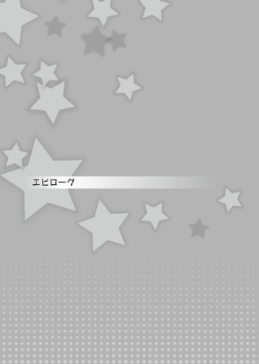
「ん〜〜〜〜〜」
目が覚めた私はベッドの上でグーッと伸びをします。
窓の方を見ると、暖かそうな日が差し込んでいて、今日もよく晴れそうです。
ラテさんを倒したあの後、私達は彼女を連れて、ひとまず街に戻ってきました。
そうそう、ラテさんなんですが、実は私たちの旅に、同行してくれることになりました。
頼もしい限りです。
黒歴史状態から解放され、その疲れからか中々目を覚まさず、今はイオくんが様子を見ているはずです。
というのも、私も、リリアちゃんも、昨日の戦闘で疲れてしまい、早々に横にならせてもらいました。
イオくんが、リリアちゃんにも使ったヘンテコモンスターを持って、お見舞いに行ったそうです。
「元気になってくれるといいんですが......」
......体はすぐに良くなるかもしれませんが、問題はその後かもしれません。
おかしくなっていた時のことを思い出すと、布団の中でゴロゴロしたくなります。
思い出したくない思い出......黒い歴史です。どうして私はあんなことを言ってしまったのでしょう。
ですがきっと、ラテさんのほうが大変です。
エムとかエスとか......そういうことばかり言ってましたし。
「そろそろイオくん達も起きてる頃ですね」
私は軽く身だしなみを整え、部屋を後にします。
「あ、おはようレーチェ」
「おはよう、リリアちゃん」
まだ少し眠そうな顔をしているリリアちゃんです。昨日の疲れも残っているのでしょう。
彼女はグーッと腕を伸ばしたあと、何度も目をこすっています。
「......イオはまだ起きてないの？」
「そうみたい。私も今来たばかりだから」
「そ、そうなんだ......うん、じゃあいい機会かも」
「......？」
リリアちゃんはいつもとは少し違う様子で......顔を赤くしながら恥ずかしそうにしています。
「えーっと、ちょっと話を聞いてもらいたいんだけど......いいかな？」
「お話？ ......うん、もちろんいいけど」
リリアちゃんが私に相談なんて......いったいなんなんでしょう？
私達は二人で食堂に移動して、一緒のテーブルに着きます。
その間も、リリアちゃんは、顔を赤くしたり視線を彷徨わせたり、なんだか落ち着かない様子......何かあったのでしょうか？
「それで、リリアちゃん......何かあったの？」
「えー......えっとね。その......うーんと......」
すると、意を決したかのように私の方を向いて、こんなことを口にしました。
「な、なんかね......イオのことを考えると、胸の辺りがキューってするんだけど......これ、何なんなのかな？」
「......キューッと？」
「うん......ドキドキして、すごく変な気持ちになるの」
「......」
「なんかね、レーチェと仲良さそうにしてるのを見て......嬉しいんだけど、すごく嬉しかったんだけど......何だか胸の奥がチクッとして。そうしたらなんか、戦いにも集中できなくなって......」
「それって......」
「何かわかるの？」
もちろん、それがどんなことなのか......わかります。
だって、私もイオくんに対して同じ気持ちを抱いているから。
......だから。
「わかるけど......教えないよ」
「え？ な、なんでよ？」
教えてしまうのは簡単です。
だけど、長い間イオくんと友人だったリリアちゃんは、そう教えてもきっと納得しません。
今までだって、周りから何度も「そういう関係なんじゃないの？」って言われたことでしょう。
そしてそれをずっと否定してきた。だから、周りから言っても、きっと彼女はそうは思わないでしょう。
だから、その気持ちがどういうことなのか......自分で気が付かないといけないんです。
イオくんに抱いている──
──恋心に。
「ねえ、教えてよレーチェ」
「ダメですよ。これは自分で気が付かないと」
......それと、やっぱり女の子としてはライバルになるわけですから、敵に塩を送る様なことはできません。......ちょっと意地悪がしたいんです。
だって、リリアちゃんが恋心に気づけば、私なんて太刀打ちができませんし。
だから......教えません。
「子猫ちゃんたち、おはようだじぇ！」
「はい、おはようございます」
「おはよう。──って、ちょっとレーチェ。わたしの話は？」
「リリアちゃん。この話、聞かれちゃってもいいの？」
「ふぇ？ ......な、なんかわかんないけど、聞かれたらいけない気がするわ」
ふふっ、それはそうでしょう。
「それにしても、イオくんもラテさんも遅いですね？」
「確かにそうなんだお。いったい、何をやってるんだじぇ？」
そう三人で話しつつ、ラテさんの部屋の方に目を向けると、お二人がやってきました。
......？ 部屋は別方向のはずなのに、何故一緒の方向から来るのでしょう？
「あ！ イオもラテもおはよう............って！ 何か二人の距離が近くない!?」
「お、おはよう。べ、別にそんな近くはないんじゃないかな」
いいえ、明らかに距離が近いです、というか、ラテさんがぴったりとイオくんにくっついています。
「う、うらやましいんだじょ！ 俺にもくっついてほしいんだじぇ！」
「おぬしなんぞにくっつくわけなかろう！」
そう言いながら二人とも席に着きました。
......隣同士、しかも席も近いです、ですが......あの、二人の距離が近い以上に......すごく気になるものが、私の目に入ってきているんです......。
見間違いでなければ......あれは......。
「あの......ラテさん。その手に持っているのは......た、タマゴじゃありませんか？」
「ふむ、よく気が付いたの」
「え？ ちょ、ちょっと......もしかしてそれって、ラテの──」
「そのとおり、わしのタマゴじゃ」
「「ええええぇぇぇぇぇぇぇぇぇぇぇぇぇぇぇぇぇぇぇ────────っ!!」」
思わず私も、大きな声を上げてしまいます。
いえいえいえいえいえ！ これはたぶん、ラテさんのジョークです！ 面白い冗談をよく言う人でしたし！
「それ......あの、違うよね？ イオがそのタマゴのパパだったりとかは......」
「わ、わからぬ......が、状況からみると......そ、その可能性は......」
な、なんだからしくない態度です！ しかもラテさん、顔が真っ赤で視線も安定していません！ 冗談ではなさそうです！
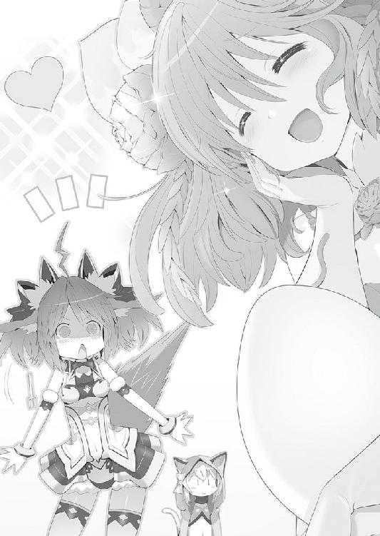
「ち、違うんだよ！ これはその！ 昨日の夜にリリアにあげたヘンテコモンスターを持ってお見舞いに行ってたんだよ。それで、さすってあげたりしてたら......なんか、朝になってて......」
朝になってって？ 朝になるまで何をしていたのでしょう!?
「ちょっと、ラテも何か言ってくれって......」
「う、うむ......そうじゃのう。イオは別に......あ、いや......だ、旦那様とでも呼んだほうがいいのかのう？」
「ちょっ──!?」
イオくんが信じられないくらい狼狽してます。本当に昨夜、何があったのでしょう？
「ふおぉぉ！ 俺の子猫ちゃんたちが、次々とイオにタマゴを産まされて......ショックだじぇ」
「いや、産ませてないから！ ......そもそもお前のものじゃないだろ！」
「ショック......だけれども、ＮＴＲも、それはそれでオッケーだじぇ！」
「......こいつ、もう色々ダメなんじゃないのか」
「ふふっ......」
ずーっと変わらないと思っていた、私とイオくんとの関係。リリアちゃんとイオくんとの関係。
ほんの少しずつだけど、変わり始めています。
『思い』で、おかしくなった私たちを元に戻した二人......。
その『思い』は全てを変えるきっかけになるのでしょう。
きっと、リリアちゃんが自分の思いに......恋心に気が付いて、それをイオくんにぶつければ、二人の世界は変わり出す。
その思いさえあれば......なんだってできる。
そう、私やラテさんを解放したように、イオくんとリリアちゃんなら世界だって救える。
それが私の思い......。
......私はそう信じてます。
「イオ！ わ、わ、わたしにもタマゴ産ませておいて......どうしてその子にも！」
「ち、違う！ オレは何も覚えてなくて！」
「旦那様......昨夜あれだけ触れてくれたことを、忘れてしまったというのか......」
「イオ、サイッッッッッッテ──────！ 忘れたことにするなんて！」
「ほ、ホントに！ ほら！ ラテもニヤニヤ笑ってるって！ からかってるんだって！」
「何のことじゃ......旦那様」
「イオ！ そういうことをしながら、それを認めないなんて男らしくない！ ちょっとそこに正座！」
「......う......は、はい」
えーっと......。
......本当に信じて大丈夫なのでしょうか？ かなり不安になってきました......。
〈終〉
あとがき
皆様、モエロクロニクルを楽しんでプレイされていますか？
もうクリアしましたか？ それとも、クリア前にこの本を読んでくださっていますか？
私はまだです......まだやっておりません。
と言いますのも、実はこのあとがきを書いているのは、ゲーム本編の発売前だったりします。きっとこの本が出るころには、私もガンガンプレイしていることでしょう。
初めましてな方も多いと思われますが、飯山満と申します。
イイヤマミツルではなく、ハサマと読みます。
......もう、あとがきの度にこの『イイヤマミツルではなく──』と書いている気がします。ホント、いい加減に名前を変えようかと思っているこの頃です。
実はオリジナルでは若干病んだ感じのミステリィや、少々硬い文章の作品なども書いておりまして、今回モエクロを執筆させていただくにあたり、担当者様が少々心配に思っていたそうです。
そりゃそうですよね。明らかに作風が違いますし。
よかったら検索してみてください、そして購入していただければなお幸いです。
さて、皆様にはお気に入りのキャラクターがいますか？
この本の中で、そのキャラクターをかわいく書けていたのなら幸いです。
もし「まだ出てないよ」という方がいらっしゃいましたら、今後に期待しつつ、その旨を編集部に送ってやってください。
そして続刊するように祈っていてください。私も祈りますから。
ちなみに、個人的にはレーチェがお気に入りです。かわいいですよね。
この本を執筆していても、レーチェとのイベントに重点を置きそうになる自分を何度も何度も抑えつけました。
別にそれならそれでいいんじゃないか？ と思われるかも知れませんが、ネガティブだったりダウナー風のキャラクターが大好きなのです。
なので黒歴史状態が好みだったりします。
黒歴史状態のままでいさせたら、もう、話も何も進みませんからね......残念です。
皆様知ってのとおり、イオとリリア達の旅はこれからも続きます。
小説の方での冒険も、これから続くのかわかりませんが、今後に期待しましょう。
それでは、またどこかの本でお会いしましょう。
飯山満
飯山満
小説やゲーム等々の執筆を仕事にしているシナリオライター。
ペンネームの飯山満というのは、千葉県の地名からいただいたもの。
最近、同じ名前のゆるきゃらが出てきたことにより、改名しようか悩み中。
限界凸記 モエロクロニクル
煩悩は幼馴染のために......
電子版発行 ２０１４年７月５日
著 者 飯山満
発行者 辻 信幸
発行所 株式会社一二三書房
〒１０２─００７２
東京都千代田区飯田橋２─14─２ 雄邦ビル
電話 ０３─３２６５─１８８１
カバーイラスト 平野 克幸
本文イラスト ジェット世渡り
©HIFUMI SHOBO
©2014 COMPILE HEART
本書の無断複製（コピー）は、著作権上の例外を除き、禁じられています。
●本書は『限界凸記 モエロクロニクル』（２０１４年６月20日 初版第１刷）に基づいて制作されました。